11. Mondgeburten
Ein einheitlicher Mechanismus für die Entstehung von Monden, geprüft Planet für Planet im Sonnensystem
Der Mond wurde aus Erdmaterial aufgebaut, an der Spitze einer Birne, die die junge, schnell rotierende Erde aus ihrem Inneren emporhob, und löste sich, als sein Schwerpunkt die Korotationslinie überschritt – die Höhe, in der ein mit der Erde mitrotierender Körper sich mit Orbitalgeschwindigkeit bewegt [Arbeiten 2–3].
Zusammenfassung
Der Mond wurde aus Erdmaterial aufgebaut, an der Spitze einer Birne, die die junge, schnell rotierende Erde aus ihrem Inneren emporhob, und löste sich, als sein Schwerpunkt die Korotationslinie überschritt – die Höhe, in der ein mit der Erde mitrotierender Körper sich mit Orbitalgeschwindigkeit bewegt [Arbeiten 2–3]. Auf dem Mars hob eine sich zuspitzende Ausbuchtung Vulkane empor, aus denen Phobos und Deimos ausgeworfen wurden [Arbeit 10]. Diese Arbeit bestimmt das Gemeinsame beider Fälle und formuliert einen einheitlichen Mechanismus der Mondgeburt: die Bedingungen, die ein Planet erfüllen muss, damit der Prozess stattfindet, und die Spuren, die er auf dem Mutterkörper und auf dem Mond hinterlässt.
Der Mechanismus beruht auf zwei Gesetzen und zwei physikalischen Prinzipien:
• Geburtsgesetz: Ein Mond entsteht, wenn die Korotationslinie des Mutterkörpers an einer Stelle liegt, die die jeweilige Geburtsart erreichen kann. Der erforderliche Abstand beträgt etwa 2 Radien für Birne und Ausbuchtung, nahe der Oberfläche für einen Vulkan ohne Ausbuchtung und etwa 1 für die Spaltung. Die Lage der Linie in Radiuseinheiten hängt ausschließlich vom Verhältnis zwischen Rotationsgeschwindigkeit und Dichte ab und gilt daher einheitlich für alle Körper. Die Tageslänge bei der Geburt folgt daraus und hängt allein von der Dichte des Mutterkörpers ab.
• Geburtsfenster: Der Prozess ist nur in einer bestimmten Phase im Leben des Mutterkörpers möglich. Das Fenster wird durch das Stadium der Differentiation bestimmt, nicht durch ein kalendarisches Alter in Jahren.
• Pumpprinzip: Die Differentiation treibt Wasser und leichte Stoffe aus dem Inneren des Körpers zur Austrittsöffnung. Das Fenster bleibt offen, solange die Pumpe arbeitet und ihr ein Ausgang zur Verfügung steht.
• Deckelprinzip: Der Abstand von der Sonne bestimmte die Menge an Wasserstoff und Helium, die vor der Auflösung der Scheibe gesammelt wurde. Eine dicke Gashülle schließt das Wasser ein und lässt die Korotationslinie an ihrem Ort. Eine dünne Hülle erlaubt dem Wasser, über die Linie zu entweichen, Drehimpuls mitzunehmen und die Linie nach außen zu verschieben.
Monde entstehen auf drei Arten, die durch die Lage des Mutterkörpers im Sonnensystem bestimmt sind:
1. Der innere Rand: In Sonnennähe trocknet der Mutterkörper rasch aus und enthält kein Wasser zum Auswerfen. Der Erdmond ist der einzige, der an der Spitze einer Birne aufgebaut wurde, und ist daher trocken und im Verhältnis zum Mutterkörper groß (1.2 %).
2. Die mittlere Zone: Von Mars bis Neptun sind die Körper groß und feucht. Die Monde wurden mit großen Wassermengen ausgeworfen und sind im Verhältnis zum Mutterkörper sehr klein (0.01 %–0.02 % bei den Gas- und Eisriesen).
3. Der äußere Rand: Pluto und Charon bilden einen Körper, der sich gespalten hat. Der vereinte Körper rotierte schneller als die Streckungsschwelle, wurde zu einer Erdnussform gedehnt, und seine Differentiation beschleunigte ihn über die Trennungsschwelle hinaus, bis er an seinem Hals durchtrennt wurde.
Die Differentiation bringt die Korotationslinie näher an die Oberfläche: Der Mutterkörper zieht sich in seinem Inneren zusammen, beschleunigt und bläht sich in seinem äußeren Teil auf. Die Zusammensetzung des bei jeder Geburt ausgeworfenen Materials wird durch das Stadium der Differentiation bestimmt:
• Zu Beginn des Prozesses: Es wird Material ausgeworfen, das die Zusammensetzung des Mutterkörpers unmittelbar wiedergibt.
• Auf dem Höhepunkt der Pumpe: Es wird wasserreiches Material ausgeworfen, das einen schwammartigen Körper bildet.
• Am Ende des Prozesses: Es wird ein dichter, trockener Rest ausgeworfen.
Der Mechanismus wird als einheitliches Protokoll aus 13 Prüfungen auf alle Planeten und auf fünf Zwergplaneten angewandt. Merkur und Venus fehlen mehrere parallele Bedingungen, daher sind sie mondlos. Jupiter und Saturn rotieren heute im Geburtsbereich, und ihre dicke Gashülle schließt das Wasser ein. Beim Saturn wird entweichendes Wasser in den Ringen eingefangen und kehrt als Ringregen zurück, wobei der Ring einen fortwährenden Strom darstellt. Uranus und Neptun verließen den Geburtsbereich durch Wasserverlust über die Linie; ihre inneren Monde liegen bis heute im Geburtsbereich und fallen zurück.
In fünf Körpern wiederholt sich ein festes Muster, bei dem kleine Monde zu beiden Seiten der Korotationslinie liegen. Die Dichte der Monde nimmt mit wachsendem Abstand von der Sonne ab: Die Dichte des Erdmondes beträgt 3,344 kg/m³, die der Galileischen Monde etwa 2,600 kg/m³ und die der Saturnmonde etwa 1,350 kg/m³. Uranus, fast doppelt so dicht wie Saturn, bringt dichtere Monde hervor. Die Kette der Zusammenhänge lautet: Abstand von der Sonne Deckel Dichte des Mutterkörpers Dichte der Monde. Bei Pluto wurden die kleinen Monde vor der Spaltung vom Äquator ausgeworfen und entfernten sich vor der Linie, die sie nie einholte. Die Matrix des gemeinsamen Nenners (Teil L) zeigt keine Körper, die dem Mechanismus widersprechen; sie weist auf Stellen hin, die weiterer Untersuchung bedürfen, und Teil M fasst diese als offene Fragen zusammen.
Was diese Arbeit vorschlägt
• These: Die Mondgeburt ist ein einheitlicher Prozess im ganzen Sonnensystem. Die schnelle Rotation eines weichen, feuchten Mutterkörpers hebt Material aus seinem Inneren (als Birne, als Ausbuchtung oder als ganzer Körper) bis zur Korotationslinie empor, und das Material, das die Linie überschreitet, wird zum Mond. Die Unterschiede zwischen den Systemen ergeben sich aus Unterschieden in Dichte, Rotation, Wassermenge, Differentiationsstadium und Sonnenabstand, nicht aus getrennten Mechanismen. Diese Faktoren laufen in einem einheitlichen Gesetz zusammen – dem Mondgesetz (A.10).
• Formeln und Zahlenwerte:
• Lage der Korotationslinie in Radiuseinheiten ():
• Skala der Geburtsarten (): Birne: 2.29, Ausbuchtung: 1.74–2.06 (auf Grundlage von Messungen an Erde und Mars), anliegender Vulkan: etwa 1.1–1.5, Spaltung: etwa 1.
• Annäherung der Linie durch innere Kontraktion und äußere Aufblähung:
• Tageslänge bei der Geburt () für :
• Drei Geburtsarten: aufgebaut (Erdmond, 1.2 % der Masse des Mutterkörpers), ausgeworfen (0.01 %–0.02 % bei den Riesen), gespalten (Charon, 11 % der Masse des Paares).
• Spezifische Anforderungen an einzelne Körper (Teil N):
• Mars: Verlust von 85 %–88 % des Drehimpulses des jungen Mars über den Ring und das entwichene Wasser.
• Uranus und Neptun: Wasserverlust über die Linie in einer Menge von etwa 2 %–3 % der Planetenmasse.
• Saturn: eine Rate des Wasserabflusses in den Ring, die der Rate des Ringregens gleicht.
• Pluto: Hinausschieben der kleinen Monde in der Erdnussphase.
• Jupiter und Uranus: Hinausschieben der fernen Monde.
• Die Riesen (Jupiter, Saturn, Uranus, Neptun): Geburt aus dem inneren Körper, nicht aus der Gashülle.
• Prüfungen: Anwendung von 13 festen Prüfungen auf jeden Planeten (Teil B), deren Ergebnisse in einer einzigen Matrix zusammengefasst sind (Teil L).
Das Umfeld
Begriffe
| Begriff | Wissenschaftliche Definition |
|---|---|
| Korotationslinie (synchroner Radius) | Die Höhe, in der ein den Mutterkörper umkreisender Körper einen Umlauf in derselben Zeit vollendet, in der sich der Mutterkörper um seine Achse dreht. Ein Körper unterhalb der Linie umläuft schneller als die Rotation, ein Körper oberhalb langsamer. |
| Birne | Streckung des gesamten Planeten, bei der sich das innere Material bewegt und die äußeren Schichten darauf mitgetragen werden [Arbeit 3]. |
| Ausbuchtung | Örtliche Streckung am Äquator, bei der sich das äußere Material nach außen bewegt [Arbeit 10]. |
| Hill-Radius | Der Bereich, in dem die Schwerkraft des Planeten stärker wirkt als die Schwerkraft der Sonne. |
| Roche-Grenze | Der Abstand, unterhalb dessen die Gezeitenkräfte des Mutterkörpers einen Körper zerreißen und seine Verdichtung verhindern. |
Daten und Einheiten
• Datenquellen: Massen, Radien, Dichten, Rotationsperioden und Bahnen stammen aus den NASA-Faktenblättern (Williams 2024) und den Mondparametern des JPL (JPL Solar System Dynamics 2024).
• Regulärer Mond: definiert als ein Mond, der auf einer nahen Bahn, im Drehsinn des Mutterkörpers und in dessen Äquatorebene umläuft.
• Eingefangener Mond: definiert nach einer Punkteregel (L.3); er wird in die Prüfungen des Protokolls nicht einbezogen.
• Maßeinheiten: Abstände werden in km oder in Einheiten des Radius des Mutterkörpers () vom Mittelpunkt angegeben. Die Dichte wird in kg/m³ () angegeben. „Tag“ bezeichnet die siderische Rotationsperiode (Sidereal rotation period).
PART ADer einheitliche Mechanismus
Dieses Kapitel formuliert den wissenschaftlichen Mechanismus, an dem alle Planeten geprüft werden. Der Mechanismus besteht aus fünf Arten von Bedingungen: Material, Rotation und Geometrie, physikalischer Mechanismus, Überleben und geophysikalische Signaturen. Diese Bedingungen werden durch einen einzigen Strukturparameter und durch die Stadien der Differentiation zusammengefasst, die die Zusammensetzung des ausgeworfenen Materials bestimmen, und laufen in einem einzigen physikalischen Gesetz zusammen – dem Mondgesetz. Alle Bedingungen sind aus zwei früheren Fallstudien abgeleitet: Erde und Mond [Arbeiten 1–9] sowie Mars und seine Monde (Phobos und Deimos) [Arbeit 10].
A.1Einleitung: von zwei Fällen zur Regel
In beiden Fallstudien lief ein identischer mechanischer Prozess in einer einheitlichen zeitlichen Abfolge ab: Ein junger Planet mit niedriger Viskosität und hoher Rotationsgeschwindigkeit hob inneres Material in Richtung der Korotationslinie empor. Das Material, das die Grenze der Linie überschritt, verdichtete sich zu einem Mond, während der Mutterkörper seine Differentiation fortsetzte und sich verlangsamte, bis die Möglichkeit einer Geburt verschlossen war.
Der Unterschied zwischen den Fällen liegt in der Art des mechanischen Aufbaus:
• Erde: Der Mond wurde an der Spitze einer Birne aufgebaut (Pear-shaped equilibrium figure). Das Material sammelte sich über längere Zeit an der Spitze der Struktur, der Mond wuchs am Entstehungsort an und löste sich, als sein Massenmittelpunkt die Korotationslinie überschritt [Arbeit 3]. Die Masse des ursprünglichen Mondes beträgt 1.2 % der Erdmasse.
• Mars: Die Ausbuchtung hob vulkanische Strukturen empor, aus denen die Monde Phobos und Deimos durch einen punktförmigen Injektionsmechanismus ausgeworfen wurden [Arbeit 10]. Deshalb sind die Marsmonde im Verhältnis zum Mutterkörper winzig.
Der formulierte Mechanismus wird als allgemeines Gesetz geprüft: Ein Planet, der die erforderliche Gruppe von Bedingungen erfüllt, bringt einen Mond hervor, während ein Planet, der sie nicht erfüllt, mondlos bleibt. Ein Planet, der einen Mond hervorgebracht hat, zeigt die definierten strukturellen und dynamischen Signaturen.
A.2Materialbedingungen
• Nach außen sortiertes Material: Das in der Birne aufsteigende oder aus der vulkanischen Struktur ausgeworfene Material ist leichtes sialisches und silikatisches Material, das bei der Sortierung des Planeten nach außen gedrängt wird. Im äußeren Sonnensystem kommt Eis als weiterer Bestandteil hinzu. Der Mond besteht überwiegend aus diesem Material, enthält aber Reste schwerer Elemente (Eisen und Metalle) in einer Konzentration, die vom Differentiationsstadium des Mutterkörpers im Moment der Geburt abhängt. Der Erdmond besitzt einen Eisenkern von 1 % bis 2 % seiner Masse [Arbeit 3].
• Teilweise Sortierung des Mutterkörpers: Ein Mutterkörper, der die Differentiation abgeschlossen hat, kann keine Monde hervorbringen. Bei vollständiger Differentiation sind Kern und Schichten starr geordnet (schweres Material innen, leichtes außen) und die Viskosität ist hoch, was eine innere hydrodynamische Bewegung zur Bildung einer Birne verhindert. Die Geburt erfordert eine Phase, in der die Differentiation aktiv, aber noch nicht abgeschlossen ist.
• Wasser und niedrige Viskosität: Die Anwesenheit von Wasser verringert die Viskosität des Materials und die Gesamtdichte des Mutterkörpers. Niedrige Viskosität ermöglicht die Streckung zu einer Birne oder das Fließen in vulkanischen Schloten, während zähes, starres Material dies verhindert.
• Niedrige Dichte: Ein Körper niedriger Dichte hat bei gegebener Masse einen größeren Radius. Infolgedessen ist die Schwerkraft an der Oberfläche schwächer, und die Oberfläche liegt geometrisch näher an der Korotationslinie.
A.3Bedingungen der Rotation und Geometrie
• Korotationslinie (synchroner Radius): Die genaue Höhe, in der ein Körper auf seiner Bahn den Mutterkörper im Takt von dessen Eigenrotation umläuft, ist durch folgende Gleichung bestimmt:
Dabei ist die Masse des Mutterkörpers und die Eigenrotationsperiode (der Tag). Eine hohe Rotationsgeschwindigkeit bringt die Linie näher an die Oberfläche. Das Überschreiten dieser Linie ist wesentlich, denn unterhalb von ihr ist das Material rotatorisch an den Mutterkörper gebunden, und erst jenseits von ihr erhält es eine eigenständige Orbitalgeschwindigkeit.
• Geburtsgesetz: Parameter von Erde und Mars: Im Moment der Geburt lag die Korotationslinie in beiden berechneten Fällen in einem Abstand von etwa 2 Radien vom Mittelpunkt des Mutterkörpers:
• Erde: Bei einem Tag von 5.77 Stunden und einem erweiterten Radius von 7,157 km lag die Korotationslinie bei 16,400 km, das sind [Arbeit 2].
• Mars: Bei einem Tag von 7–9 Stunden und einem um das 1.5-Fache erweiterten Radius (5,085 km) lag die Korotationslinie im Bereich von 8,800–10,400 km, das sind [Arbeit 10].
In beiden Fällen betrug der Abstand der Linie von der Oberfläche etwa einen Radius, ein Abstand, den eine Birne oder eine Ausbuchtung erreichen kann.
• Abhängigkeit der Lage der Linie von einem einzigen Parameter: Wir definieren die Lage der Linie in Einheiten des Radius des Mutterkörpers als . Setzt man die Masse als Funktion der mittleren Dichte () in die Formel der Linie ein, so kürzt sich der Radius heraus:
Die Lage der Linie in Radiuseinheiten hängt ausschließlich vom Verhältnis zwischen der axialen Rotationsgeschwindigkeit () und der mittleren Dichte () ab, unabhängig von den absoluten Abmessungen des Körpers. Dieses Verhältnis () bestimmt auch den Grad der Abplattung, die Schwelle des Übergangs zu einer gestreckten Form (Erdnuss) und die Zerreißschwelle eines weichen rotierenden Körpers [Chandrasekhar 1969].
| Körper im Moment der Geburt | Dichte (kg/m³) | Tag (Stunden) | (pro Sekunde) | ||
|---|---|---|---|---|---|
| Erde | 3,940 | 5.77 | 3.02 | 12.0 | 2.29 |
| Mars | 1,170 | 7–9 | 2.49–1.94 | 5.26–8.70 | 1.74–2.06 |
| Erde heute (zum Vergleich) | 5,513 | 23.9 | 0.729 | 290 | 6.62 |
• Skala der Geburtsarten: Auf Grundlage der Gleichung des rotierenden Körpers wurden feste strukturelle Schwellen bestimmt. Bei geht der Körper in eine gestreckte Form über (Erdnussform). Bei erreicht der Äquator Orbitalgeschwindigkeit und der Körper reißt (Spaltung).
| Geburtsart | Mechanismus der Materialhebung | Lage der Linie () | Physikalische Parameter damals | Datenquelle | Beispiel |
|---|---|---|---|---|---|
| Aufgebaut | Birne | 2.29 | 5.77 Stunden; 3,940 kg/m³ | berechnet [Arbeit 2] | Erdmond |
| Ausgeworfen auf einer Ausbuchtung | Ausbuchtung und Vulkan | 1.74–2.06 | 7–9 Stunden; 1,170 kg/m³ | berechnet [Arbeit 10] | Phobos und Deimos |
| Ausgeworfen ohne Ausbuchtung | Vulkan oder örtliche Erhebung | etwa 1.1–1.5 | — | theoretische Möglichkeit | kein berechnetes Beispiel |
| Gespalten | Teilung des ganzen Körpers | etwa 0.85–1.02 | 1.9–2.5 Stunden; 1,840 kg/m³ | berechnet [K.1] | Pluto und Charon |
Formulierung des Geburtsgesetzes: Ein Mond entsteht, wenn die Korotationslinie des Mutterkörpers an einer Stelle liegt, die der mechanischen Geburtsart entspricht: etwa 2 Radien () für Birne und Ausbuchtung, nahe der Oberfläche () für einen Vulkan ohne Ausbuchtung und etwa 1 Radius für eine vollständige Spaltung.
• Abhängigkeit der Tageslänge bei der Geburt allein von der Dichte: Löst man die Gleichung nach der Rotationsperiode unter der Annahme , so zeigt sich eine ausschließliche Abhängigkeit von der mittleren Dichte :
Ein Körper niedriger Dichte benötigt eine geringere Rotationsgeschwindigkeit, um die Geburtsschwelle zu erreichen, während ein dichter Körper eine deutlich höhere Rotationsgeschwindigkeit benötigt.
• Kritische Geschwindigkeit: Die untere Schwelle, bei der der Äquator Orbitalgeschwindigkeit erreicht und der Körper zerreißt, liegt bei :
Eine Geburt aus Birne oder Ausbuchtung () findet bei einem Tag statt, der 2.8-mal länger ist als der kritische Tag, und erfordert kein Zerreißen des Planeten, sondern lediglich eine Annäherung der Linie. Eine vollständige Spaltung findet genau an dieser Schwelle statt.
• Abplattung und Achsneigung: Schnelle Eigenrotation führt zu einer Abplattung an den Polen und einer Ausbuchtung am Äquator, die die örtliche Schwerkraftkomponente verringert und die Ansammlung von Material am Äquator beschleunigt. Die Äquatorebene des Mutterkörpers im Moment der Geburt bestimmt die Bahnebene des Mondes; daher bewegen sich reguläre Monde in der geometrischen Äquatorebene des Planeten.
• Drehimpuls: Der Gesamtdrehimpuls des Systems (Eigenrotation des Mutterkörpers und Bahndrehimpuls der Monde) bleibt erhalten, sofern kein äußerer Mechanismus Drehimpuls abführt. Diese Erhaltung erlaubt die Rückrechnung der ursprünglichen Rotationsgeschwindigkeit des Mutterkörpers (Protokollprüfung Nr. 3).
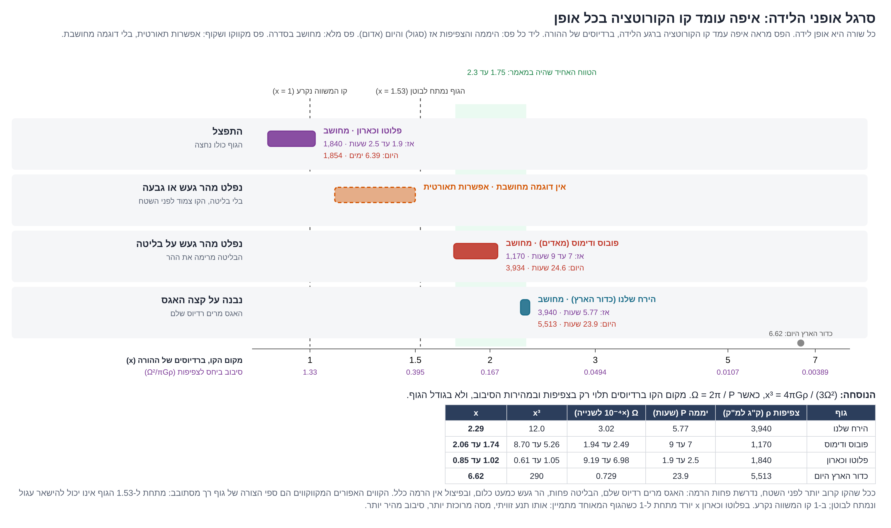
A.4Bedingungen des Mechanismus
• Mechanik von Birne und Ausbuchtung: Die Bildung einer strukturellen Streckung im Mutterkörper ist eine notwendige Bedingung für die Mondgeburt. Die schnelle axiale Rotation drängt Masse zum geometrischen Äquator; der Bereich, in dem sich der größte Teil der Masse sammelt, wird am stärksten von der Rotation beeinflusst, und dort beginnt sich die Streckung zu entwickeln. Dieser Prozess hält an, solange die Schwerkraft am Äquator durch Abplattung und hohe Rotationsgeschwindigkeit geschwächt ist. Die Streckung bildet sich zurück, wenn der Mutterkörper sich verlangsamt, abkühlt und durch fortschreitende Differentiation seine Viskosität erhöht [Arbeiten 3, 10].
• Überschreiten der Korotationslinie: Material, das die Grenze der Korotationslinie nicht überschreitet, fällt am Ende des Prozesses auf den Mutterkörper zurück. Die physikalische Geburt ist als der genaue Moment definiert, in dem der Massenmittelpunkt des sich verdichtenden Körpers die Korotationslinie überschreitet; an diesem Punkt reißt die Zentrifugalkraft zusammen mit dem inneren hydrostatischen Druck den Körper vom Mutterkörper ab [Arbeit 3]. Das unterhalb der Linie verbliebene Restmaterial wird wieder in das Innere des Planeten aufgenommen.
• Dynamik des strukturellen Wettlaufs: Die Entwicklung der Birne trägt Drehimpuls nach außen und verlangsamt die Eigenrotation des Planeten. Die Verlangsamung wiederum verschiebt die Korotationslinie über die Reichweite des Körpers hinaus. Die Geburt erfordert eine strenge Wettlaufbedingung: Die radiale Wachstumsrate der Birne muss die Rate übertreffen, mit der sich die Korotationslinie entfernt. Der Erdmond löste sich, weil seine Aufbaurate diese Bedingung erfüllte; hätte die Birne eine größere Masse oder eine langsamere Aufbaurate gehabt, wäre die Linie über die Spitze der Struktur hinausgewandert und die Geburt wäre verhindert worden [Arbeit 2].
• Strukturelles Geburtsfenster: Die Geburt ist auf eine bestimmte geologische Phase beschränkt, die durch den Differentiationsgrad des Mutterkörpers bestimmt wird und nicht durch das chronologische Alter. Das Fenster öffnet sich, wenn der Planet heiß ist, eine niedrige Viskosität hat, nicht vollständig sortiert ist und schnell rotiert (auf der Erde fand der Prozess einige hundert Millionen Jahre nach Beginn der Akkretion statt). Das Fenster schließt sich in fortgeschrittenen Stadien der Differentiation, mit der Ordnung des Kerns, dem Anstieg der Viskosität, dem Entweichen des Wassers und dem Anstieg der mittleren Dichte. Die Dauer des Fensters in Jahren ist von Körper zu Körper verschieden: Körper, die rasch austrockneten (Merkur und Venus), schlossen das Fenster chronologisch früh, während die Gas- und Eisriesen sich langsam entwickelten und ein langes Geburtsfenster bewahrten.
• Hydrodynamisches Pumpprinzip: Das Absinken dichter Stoffe zum Kern des Planeten drängt Wasser und leichte silikatische Stoffe aus der Tiefe des geschlossenen Körpers nach oben. Diese Stoffe sammeln sich an den Austrittsöffnungen – etwa den vulkanischen Strukturen auf der Ausbuchtung oder der Spitze der Birne. Diese Öffnungen speisen die Geburt von Monden und Ringen, und durch sie wird Masse ausgeworfen, die Drehimpuls nach außen trägt. Die Pumpe ist aktiv, solange die Differentiation andauert und die statische Kruste nicht dick genug ist, um ihren Ausgang zu versperren. Auf dem Mars dauerte die Abtrennung der Metalle in den Kern nur wenige Millionen Jahre [Dauphas & Pourmand 2011], doch die strukturelle Differentiation und die hydrodynamische Pumpe arbeiteten bis zum Ende der feuchten Periode vor etwa 3.7–3.5 Milliarden Jahren weiter, ein Zeitpunkt, der mit der Lage des Phobos am Ende der Ringphase übereinstimmt.
• Prinzip des atmosphärischen Deckels: Die Gasriesen nahmen eine Hülle aus Wasserstoff und Helium aus der protoplanetaren Scheibe auf, bevor diese durch die Sonnenstrahlung zerstreut wurde [Haisch et al. 2001]. Die Aufnahme der Gashülle wurde erst möglich, nachdem der innere Kernkörper eine kritische Masse erreicht hatte [Pollack et al. 1996]. Aufgrund der Akkretionsabstände sammelte Jupiter () die massereichste Hülle, Saturn () eine kleinere Hülle, während Uranus und Neptun ( und ) eine Gashülle aufnahmen, die nur 10 %–20 % ihrer Gesamtmasse ausmacht. Die Gashülle wirkt als thermodynamischer Deckel über dem Wasser: Das Wasser (Molekulargewicht 18) ist schwerer als das umgebende Gas (mittleres Molekulargewicht etwa 2.3), kondensiert in den kalten Schichten der Atmosphäre und sinkt als Niederschlag ins Innere des Körpers (auf Jupiter werden Wasserwolken bei einem Druck von 5–7 bar nachgewiesen [Li et al. 2020]).
Wirkungskette des Deckelprinzips
Abstand von der Sonne → gesammelte Gasmasse → Dicke des atmosphärischen Deckels → Verhinderung/Ermöglichung des Wasserverlusts über die Linie → Änderung des Drehimpulses und der Lage der Linie
• Jupiter und Saturn: dicker atmosphärischer Deckel Verhinderung des Wasserverlusts die Korotationslinie bleibt statisch an ihrem ursprünglichen Ort.
• Uranus und Neptun: dünner atmosphärischer Deckel Wasserverlust über die Korotationslinie Abtransport von Drehimpuls nach außen radiale Entfernung der Linie.
Geburtsarten im Sonnensystem
| Geburtsart | Mechanischer Mechanismus | Eigenschaften des entstehenden Mondes | Lage im Sonnensystem | Strukturelles Beispiel |
|---|---|---|---|---|
| An der Spitze aufgebaut | Langandauernde Ansammlung von Material an der Spitze der Birne; Ablösung, wenn der Massenmittelpunkt die Linie überschreitet. | Trocken, rotatorisch gebunden, mit im Verhältnis zum Mutterkörper hoher Masse. | Innerer Rand (trockene Zone, kein freies Wasser zum Auswerfen). | Erdmond ( der Masse des Mutterkörpers). Der einzige Körper dieser Kategorie. |
| Ausgeworfen | Vulkan auf einer Ausbuchtung; die Pumpe injiziert zähes, feuchtes silikatisches Material unter innerem Druck. | Im Verhältnis zum Mutterkörper winzige Masse (), reich an Wasser-/Eisbestandteilen. Unregelmäßige oder runde Form (abhängig von der Verdichtungszeit). | Mittlere Zone (Mars bis Neptun; massereiche, feuchte Körper). | Phobos und Deimos; die regulären Monde der Gas- und Eisriesen. |
| Gespalten | Rotation jenseits der hydrodynamischen Streckungsschwelle; Dehnung zu einer zweilappigen Erdnussform und Zerreißen am Hals. | Sehr hohe Masse im Verhältnis zum Mutterkörper; strenge gegenseitige Gezeitenbindung. | Äußerer Rand (kleine, kalte Körper mit hoher Rotationsgeschwindigkeit). | Pluto und Charon ( bzw. der Systemmasse). |
Geophysikalische Unterscheidung ausgeworfener Monde
1. Verringerte Dichte: In Systemen mit Monden unterschiedlicher Größe sind die kleinen Monde weniger dicht als die großen Monde desselben Systems (bei Jupiter: Amalthea gegenüber den Galileischen Monden ; bei Saturn: die Ringmonde und Hyperion ).
2. Einfluss des Sonnenabstands: Der Abstand von der Sonne verlängert die Dauer der weichen, feuchten Phase des Materials. Deshalb können ferne, wenig dichte Monde ein hydrostatisches Gleichgewicht erreichen und schon bei kleinen Durchmessern rund werden (Mimas: Durchmesser , Dichte ; Miranda: Durchmesser , Dichte ).
3. Strukturelle Rundungsschwellen: Ein überwiegend aus Eis (Volatiles) bestehender Körper erreicht eine runde Form ab einem Durchmesser von etwa . Ein überwiegend aus Silikaten bestehender Körper benötigt zur Rundung einen Mindestdurchmesser von etwa .
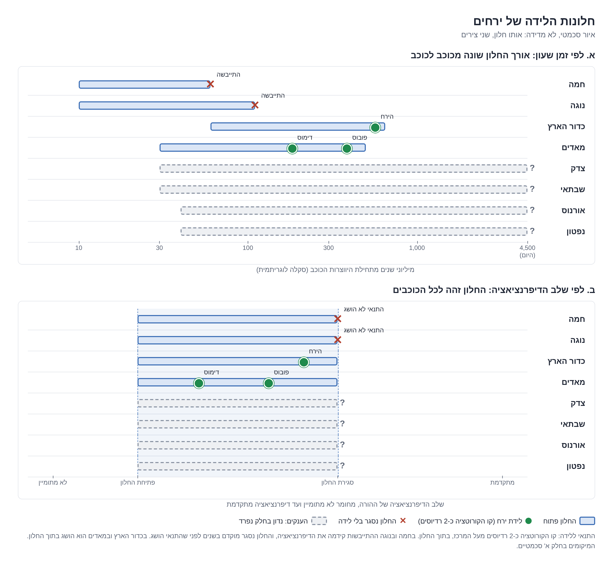
A.5Innen schrumpfen, außen aufblähen: wie die Differentiation die Linie näher bringt
• Paradox der globalen Aufblähung: Das Geburtsfenster wird ausschließlich durch das Differentiationsstadium bestimmt (A.4). Die vereinfachte Annahme, „die Aufblähung des Planeten habe die Oberfläche näher an die Korotationslinie gebracht“, ist jedoch mechanisch nicht haltbar. Ein Körper, der sich ohne Drehimpulsverlust gleichmäßig ausdehnt, verringert zwangsläufig seine axiale Rotationsgeschwindigkeit (wie eine Eiskunstläuferin, die ihre Arme ausbreitet), was eine rasche radiale Entfernung der Korotationslinie bewirkt, schneller als die Oberfläche sich ihr nähert.
• Mechanismus der Volumenunterschiede: Der Planet dehnt sich nicht homogen aus. Während der strukturellen Differentiation zieht sich der innere Kern massiv zusammen, während sich gleichzeitig die äußeren Schichten aufblähen, wobei die zentrale Kontraktion der Mechanismus ist, der den Auswurf der leichten Stoffe antreibt. Die dichten Bestandteile, die den Hauptteil der Masse des Körpers ausmachen, sinken zum Zentrum ab und beschleunigen die axiale Rotation (wie eine Eiskunstläuferin, die ihre Arme anzieht). Gleichzeitig werden Wasser und flüchtige Bestandteile nach oben gedrängt und blähen die äußere Schicht auf. Diese Schicht hat ein großes Volumen, aber eine vernachlässigbare Masse; sie vergrößert daher den äußeren Gesamtradius fast ohne Verlangsamung der axialen Rotation. Das dynamische Zusammenwirken von beschleunigter Rotation und ansteigender geometrischer Oberfläche führt zum Zusammentreffen mit der Korotationslinie.
• Mathematische Herleitung: Der Drehimpuls des Mutterkörpers ist gegeben durch:
Dabei ist der Trägheitsmomentfaktor (für einen Körper gleichförmiger Dichte gilt , und sein Wert sinkt, je stärker die Masse im Zentrum konzentriert ist). Bei Erhaltung des Drehimpulses gilt für die Rotationsgeschwindigkeit:
Setzt man diese Beziehung in die Gleichung für die Lage der Korotationslinie (A.3) ein, ergibt sich das strukturelle Verhältnis:
Während die Aufblähung der äußeren Schicht den Radius vergrößert, verkleinert die Kontraktion des inneren Kerns den Faktor . Da quadratisch eingeht, überwiegt der Einfluss der geodynamischen Kontraktion und treibt die Annäherung der Linie an.
Einfluss der Änderung des Trägheitsmoments auf die Lage der Linie ()
Die Werte sind ausgehend von einer Linie bei 2.1 Radien berechnet, für einen um das 1.3-Fache erweiterten Außenradius ():
| Geodynamischer Mechanismus im Mutterkörper | Trägheitsmomentfaktor ( vorher nachher) | Endgültiger Außenradius | Endgültige Lage der Korotationslinie () |
|---|---|---|---|
| Nur homogene Aufblähung (ohne innere Dichteänderung) | 1.3-fach | 2.29 (Entfernung der Linie) | |
| Leichte innere Kontraktion und äußere Aufblähung | 1.3-fach | 1.89 | |
| Mittlere innere Kontraktion und äußere Aufblähung | 1.3-fach | 1.68 | |
| Starke innere Kontraktion und äußere Aufblähung | 1.3-fach | 1.44 | |
| Sehr starke innere Kontraktion und äußere Aufblähung | 1.3-fach | 1.19 |
Zum geophysikalischen Vergleich: Der Trägheitsmomentfaktor des Saturn beträgt heute etwa 0.21. Der Übergang von einem gleichförmigen Körper zu einer Struktur mit den Parametern des Saturn bringt die Linie auf etwa , und zusammen mit einer Erweiterung des Außenradius um das 1.3-Fache auf etwa .
• Geodynamische Schlussfolgerung: Die Differentiation beschränkt sich nicht darauf, silikatisches Material zur Auswurföffnung emporzuheben, sondern ist der physikalische Mechanismus, der die Korotationslinie an die Oberfläche heranführt. Das Absinken der dichten Stoffe beschleunigt den Körper, während der Auswurf der flüchtigen Stoffe die äußere Hülle erweitert, bis Oberfläche und Linie mechanisch zusammentreffen. Dies ist der physikalische Grund, weshalb das Geburtsfenster durch das strukturelle Differentiationsstadium definiert ist und nicht durch die chronologische Zeitvariable.
Geodynamische Anwendung des Prinzips von Kontraktion und Aufblähung
• Jupitersystem: bestimmt den Mechanismus der chronologischen Geburtsfolge. Mit fortschreitender Differentiation wandert die Korotationslinie im Lauf der Zeit nach innen. Folglich verdichteten sich später entstandene Monde auf Linien, die näher am Mutterkörper lagen: Kallisto zuerst (auf der entferntesten Linie) und Io zuletzt (auf der nächsten Linie). Die Reihenfolge des radialen Abstands entspricht genau der chronologischen Geburtsfolge. Dieser Prozess dauert heute an, infolge des fortwährenden Absinkens des verdünnten Kerns (Teil G).
• System Pluto–Charon: Die strukturelle Differentiation trieb den vereinten Körper über die hydrodynamische Trennungsschwelle hinaus (Rotational fission). Bei konstantem Drehimpuls beträgt für einen homogenen, gleichförmigen Körper () die axiale Rotationsperiode 2.51 Stunden, ein Wert vor der Trennungsschwelle (2.44 Stunden). Mit fortschreitender Differentiation und dem Absinken des Trägheitsmoments auf beschleunigte sich die axiale Rotation auf 1.94 Stunden – ein Wert, der die Spaltungsschwelle überschreitet und den Hals der Erdnussform zum Reißen bringt (K.1).
• Haumea: strukturelle Vorhersagebedingung: Eine fortgesetzte innere Kontraktion des Zwergplaneten wird seine axiale Rotation beschleunigen und den Körper an eine hydrodynamische Trennungsschwelle heranführen (K.2).
• Systeme von Uranus und Neptun: Seit der Geburtsphase hat sich der Kern innerlich zusammengezogen, was für sich genommen die Korotationslinie nach innen hätte bringen sollen. Tatsächlich wurde eine Entfernung der Linie von auf einen Bereich von festgestellt. Daraus folgt, dass der Wasserverlust Drehimpuls in einem Maß nach außen trug, das den Effekt der inneren Kontraktion übertraf; ein Verlust von 2 %–3 % der Planetenmasse stellt daher nur eine Untergrenze dar (Teil I).
• Erde und Mars: Das Geburtsfenster öffnete sich bei beiden Körpern während einer intensiven Differentiationsphase: der Bildungsphase des Eisenkerns auf der Erde und der Arbeitsphase der hydrodynamischen Pumpe auf dem Mars. In dieser Phase näherte sich die Korotationslinie der Oberfläche am stärksten. Das physikalische Prinzip ändert die berechneten Zahlenwerte nicht, sondern bestätigt die geologische Zeitlage.
Methodische Regel für Protokollprüfung 3 (Teil B): Bei der dynamischen Rückrechnung der urzeitlichen Rotationsgeschwindigkeit müssen die genauen Werte des physikalischen Radius und des Trägheitsmomentfaktors () im Moment der Geburt eingesetzt werden, nicht die aktuellen Parameter der Gegenwart, um den beschriebenen geodynamischen Effekt nicht auszulassen.
A.6Überlebensbedingungen
• Dynamische Roche-Grenze: Innerhalb der Roche-Grenze übertreffen die vom Mutterkörper ausgeübten Gezeitenkräfte die Eigengravitation einer gegebenen Masse. Diese Bedingung verhindert jede hydrostatische Verdichtung neuer Monde vollständig und bewirkt die mechanische Zerlegung jedes Körpers, der die Grenze nach innen überschreitet. Die planetaren Ringsysteme der Gas- und Eisriesen liegen alle innerhalb dieses dynamischen Bereichs.
• Rolle der planetaren Ringe: Ein Ringsystem ist ein Ort des Verweilens und fortwährender mechanischer Abtragung, nicht ein Ort der Entstehung (Akkretion) von Monden. Monde, die heute in der Nähe von Ringsystemen liegen, sind Körper, die dynamisch aus dem Bereich des Rings hinausgewandert sind (nach innen oder nach außen). Der planetare Ring wirkt als begleitender Mechanismus, der die Exzentrizität der Mondbahn ausgleicht und rundet, und kann einen radialen Schub nach außen bewirken, wie bei Deimos im Marssystem [Arbeit 10]. Der primäre Auswurfmechanismus wird durch die Birne oder die Ausbuchtung angetrieben, nicht durch den Ring. In Fällen, in denen Wasseranteile aus dem Mutterkörper in die Umgebung der Korotationslinie entweichen und innerhalb der Roche-Grenze eingefangen werden, stellt der Ring einen fortwährenden dynamischen Massenstrom dar, der sich erneuert, solange die Auswurfpumpe aktiv ist [Teil H].
• Hill-Radius und Einfluss der Sonne: Für jeden planetaren Körper ist ein geschlossener Gravitationsbereich definiert, in dem sein Schwerefeld gegenüber dem Schwerefeld der Sonne vorherrscht – der Hill-Radius (), berechnet nach:
Dabei ist die große Halbachse der Planetenbahn, seine Masse und die Sonnenmasse. In Sonnennähe verkleinert sich der Hill-Radius erheblich. Zudem verlangsamen die von der Sonne ausgeübten Gezeitenkräfte die Eigenrotation des Planeten und verschieben die Korotationslinie radial nach außen. Wenn die Korotationslinie die Grenze des Hill-Radius überschreitet, liegt jede mögliche Mondbahn unterhalb der Linie, was eine Bahnwanderung nach innen und den Absturz auf den Mutterkörper erzwingt [Ward & Reid 1973; Burns 1973].
• Richtung der Gezeitenwanderung:
• Mond unterhalb der Korotationslinie: Die Bahngeschwindigkeit ist höher als die Eigenrotation des Mutterkörpers der auf dem Mutterkörper erzeugte Gezeitenwulst bleibt hinter dem Mond zurück und übt eine Bremskraft aus Verlust an Bahnenergie und radiale Wanderung nach innen.
• Mond oberhalb der Korotationslinie: Die Bahngeschwindigkeit ist niedriger als die Eigenrotation des Mutterkörpers der auf dem Mutterkörper erzeugte Gezeitenwulst eilt dem Mond voraus und beschleunigt ihn Zuwachs an Bahnenergie und radiale Wanderung nach außen.
• Gezeitenbindung und innerer Aufbau: Ein Mond, der sich an der Spitze einer Birne verdichtet, löst sich in einem Zustand strenger und vollständiger Gezeitenbindung (Synchronisation, bei der die Umlaufzeit der Eigenrotationszeit gleicht). Aus einem Vulkan ausgeworfene Monde können gebunden werden. Eine eigenständige Eigenrotation setzt einen dynamischen, aktiven Kern im Mond voraus, der eine eigene Differentiation durchläuft und die Masse homogen und symmetrisch verteilt.
A.7Erforderliche Signaturen
| Strukturelle Signatur | Geophysikalischer Indikator und erforderlicher Befund |
|---|---|
| Material des Mutterkörpers | Chemische Zusammensetzung und Isotopenwerte nahe oder gleich den Werten des Mutterkörpers, ohne Fremdmasse außer sekundärer Akkretion von Weltraumstaub. |
| Dichte als Zeugnis | Die Dichte des Mondes spiegelt die genaue Zusammensetzung des Materials an der geologischen Austrittsöffnung im Moment der Geburt wider und bezeugt das Differentiationsstadium des Mutterkörpers (A.9). |
| Strukturelle Porosität | Ein Mond, der in wasserreichem Zustand ausgeworfen wurde, erfährt eine rasche Ausgasung flüchtiger Stoffe (Outgassing), die innere Hohlräume (Macro-porosity) zurücklässt. Die Gesamtdichte ist niedriger als die Mineraldichte des aufbauenden Materials. |
| Dichtegefälle Mutterkörper–Mond | Am Ende des Prozesses ist der Mutterkörper (der silikatische/metallische Teil, ohne Gashülle) dichter als seine Monde, weil die Differentiation im Mutterkörper weiterläuft und im Mond zum Stillstand kommt. |
| Konzentration schwerer Elemente | Ein Mond, der in fortgeschrittenen Differentiationsstadien des Mutterkörpers entsteht, enthält einen höheren Anteil dichter Elemente (Eisen und Metalle) und einen ausgeprägten Kern. |
| Dynamik beiderseits der Linie | Vorkommen kleiner Monde auf beiden Seiten der Korotationslinie: Die unterhalb wandern nach innen, die oberhalb nach außen. |
| Eingefrorene Morphologie | Erhaltung einer geometrischen Verformung (Fossil bulge), die der schnellen Rotation und den starken Gezeitenkräften des urzeitlichen Geburtsortes entspricht, infolge rascher Erstarrung. |
| Strukturelle Signaturen im Mutterkörper | Morphologische Reste der Birne oder der Ausbuchtung: auf der Erde – die Anomalie des Pazifiks und die Streifen [Arbeit 9]; auf dem Mars – die Tharsis-Ausbuchtung [Arbeit 10]. |
A.8Der Überparameter
Definition: Die meisten hydrodynamischen Bedingungen laufen in einem einzigen dimensionslosen Strukturparameter zusammen: dem Verhältnis zwischen dem Radius der Korotationslinie und dem physikalischen Außenradius des Mutterkörpers:
Niedrige mittlere Dichte und axiale Abplattung vergrößern den Außenradius ; ein niedriger Schwerewert an der Oberfläche folgt aus einem erweiterten Radius ; und eine hohe Rotationsgeschwindigkeit verkleinert den Korotationsradius . Eine physikalische Geburt findet innerhalb des Differentiationsfensters statt, wenn der Parameter die definierten mechanischen Bereiche erreicht: für Birne und Ausbuchtung und für einen anliegenden Vulkan und die hydrodynamische Spaltung. Erde und Mars erfüllten diese Bedingung im Moment der Geburt, während Jupiter und Saturn Werte von in diesem Bereich auch in der Gegenwart beibehalten.
A.9Differentiationsstadien und das Material an der Öffnung
Die strukturelle Differentiation ist ein zeitlich andauernder Prozess. Die Zusammensetzung des an der Auswurföffnung verfügbaren Materials ändert sich im Lauf der Zeit; daher zeigen Monde, die nacheinander aus demselben Mutterkörper entstanden, unterschiedliche Dichten und chemische Zusammensetzungen, die jeweils einen Querschnitt der Auswurföffnung im Moment der Geburt darstellen.
| Stadium im Mutterkörper | Innerer geodynamischer Mechanismus | Zusammensetzung des Materials an der Öffnung | Eigenschaften des entstehenden Körpers | Beispiele im System |
|---|---|---|---|---|
| 0. Beginn der Differentiation: Anfangsphase, keine tiefe Sortierung; eine äußere Schicht reich an urzeitlichem Wasser, das durch schnelle Rotation ausgeworfen wird (zentrifugaler Spritzeffekt). | Wasser und flüchtige Bestandteile aus der äußeren Schicht. | Verdichtung oberhalb der Roche-Grenze; eisiger Körper sehr niedriger Dichte. | Iapetus, Hyperion. | |
| 1. Frühes Stadium: Gemischtes inneres Material, Beginn des Absinkens schwerer Bestandteile. | Gemischtes Material, das die globale Zusammensetzung des Mutterkörpers wiedergibt. | Massereicher Körper, Dichte nahe der Dichte des Mutterkörpers, geringe innere Differentiation. | Kallisto, Titan, Charon. | |
| 2. Höhepunkt der Pumpe: Rasches Absinken des dichten Kerns; hydrodynamisches Hochdrängen von Wasser und leichten Silikaten. | Mit Wasser und leichten sialischen Bestandteilen angereichertes Material. | Wasserreicher, wenig dichter Körper; Ausgasung flüchtiger Stoffe nach der Geburt erzeugt strukturelle Porosität. | Phobos, Deimos, Tethys. | |
| 3. Endstadium: Sortierung nahezu abgeschlossen; vollständiges Entweichen des Wassers oder sein Einschluss unter dem Deckel. | Dichter, trockener silikatischer Rest. | Silikatischer, dichter Mond ohne Wasser oder Eis. | Io. |
• Fallstudie – das Galileische System des Jupiter: Die vier Monde zeigen eine Abstufung, die der Reihenfolge der Stadien entspricht, vom fernsten zum nächsten (chronologische Reihenfolge vom frühesten zum spätesten):
1. Kallisto: Dichte . Geringer Differentiationsgrad, Trägheitsmomentfaktor [Anderson et al. 2001], was auf einen nahezu gleichförmigen Aufbau hinweist (Stadium 1).
2. Ganymed: Dichte . Ein sortierter Körper mit eigenem Magnetfeld [Kivelson et al. 1996] und einer massiven Hülle aus Eis und Wasser.
3. Europa: Dichte . Eine ausgeprägte Wasserhülle von etwa 100 km über einem dichten silikatischen Körper [Anderson et al. 1998].
4. Io: Dichte . Ein trockener, vollständig sortierter Körper mit einem ausgeprägten metallischen Kern [Anderson et al. 1996] (Stadium 3).
• Mechanismus der Porosität (Porosity): Der Unterschied zwischen der Dichte von Phobos und Deimos ( und ) und der Dichte des Mars ergibt sich aus einem Auswurf im Stadium 2. Die hydrodynamische Pumpe speiste die Öffnung mit wasserreichem Magma; mit dem Auswurf der Brocken und dem raschen Entweichen des Wassers in den Weltraum blieben massive innere Hohlräume zurück. Die berechnete Porosität beträgt etwa 30% für Phobos [Andert et al. 2010] und etwa 40% für Hyperion [Thomas et al. 2007].
Vergleichende Analyse: Monddichte ohne die planetare Gashülle
Da die Monde aus dem inneren Körper des Mutterkörpers entstehen und nicht aus der atmosphärischen Gashülle (A.2), muss ihre Dichte allein mit der berechneten inneren Komponente verglichen werden. Ohne Korrektur für die gravitative Kompression wird die mittlere Dichte in zwei Grundkomponenten zerlegt: einen silikatisch-metallischen Anteil () und einen eisigen Anteil (), nach der Mischungsgleichung:
Dabei steht für den silikatischen Massenanteil.
| Planetensystem | Abstand von der Sonne | Massenanteil des atmosphärischen Gases | Mittlere Dichte der Monde () | Berechneter silikatischer Massenanteil () |
|---|---|---|---|---|
| Erde | — | 3,344 | 0.98 | |
| Jupiter | 90% – 97% | 2,578 | 0.83 | |
| Saturn | 70% – 85% | 1,346 | 0.36 | |
| Uranus | 10% – 20% | 1,505 | 0.49 | |
| Pluto–Charon | — | 1,702 – 1,854 | 0.61 – 0.67 |
Bei massereichen Monden (Ganymed, Titan) erhöht die gravitative Eigenkompression den gemessenen Dichtewert, ändert aber nicht den chemischen Trend.
• Integration des frühen Stadiums: Die massereichen Monde, die im frühen Differentiationsstadium (Stadium 1) ausgeworfen wurden, liegen in einem engen, einheitlichen Bereich silikatischer Massenanteile von : Kallisto, Ganymed, Titan, Titania und Oberon, und daneben das System Pluto–Charon.
Bruch des Trends im Uranussystem: das Modell der zwei Töpfe
Die mittlere Dichte der Monde nimmt radial von der Sonne bis zum Saturnsystem ab, steigt aber im Uranussystem wieder an. Die Anomalie wird durch ein einheitliches thermodynamisches Modell erklärt, das auf der Dicke des atmosphärischen Deckels beruht (Abbildung A.5):
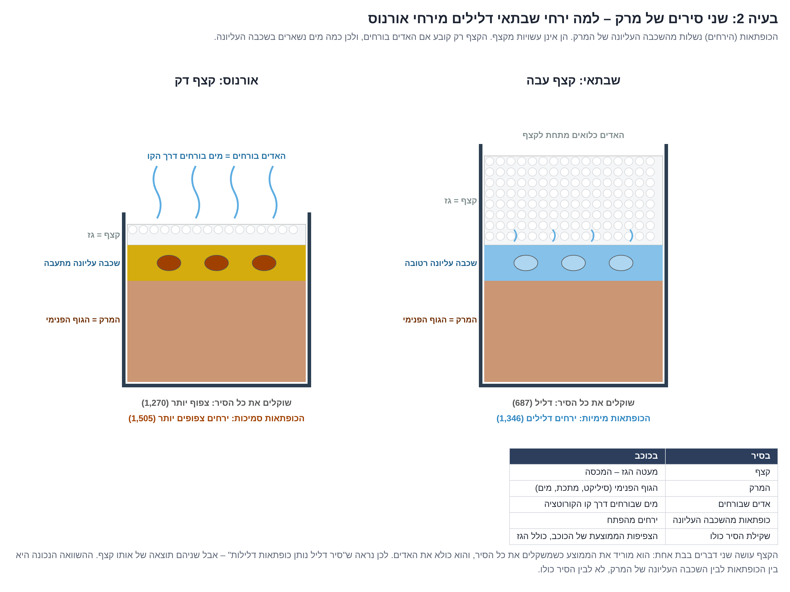
• Saturntopf (dicker Deckel): massive Gashülle (70%–85% der Gesamtmasse) vollständiger Einschluss von Dampf und flüchtigen Stoffen unter dem Deckel die obere innere Schicht bleibt wassergesättigt und niedrigviskos die aus ihr ausgeworfenen Monde zeichnen sich durch niedrige Dichte und massiven Eisgehalt aus (Tethys, Iapetus).
• Uranustopf (dünner Deckel): dünne Gashülle (10%–20% der Gesamtmasse) Wasser und flüchtige Stoffe entwichen frei über die Korotationslinie in den Weltraum Verdichtung und Verfestigung der oberen Auswurfschicht im Mutterkörper die ausgeworfenen Monde verdichten sich mit höherer Dichte ().
Der sachgerechte geophysikalische Vergleich muss zwischen der Dichte der Monde und der oberen Auswurfschicht des Mutterkörpers erfolgen, nicht der globalen mittleren Dichte des ganzen Planeten. Der Mechanismus des Wasserverlusts, der die Auswurfschicht des Uranus austrocknete, ist derselbe dynamische Mechanismus, der seine Korotationslinie nach außen verschob [Teil I].
A.10Das Mondgesetz
Alle dynamischen Bedingungen, thermodynamischen Prinzipien und geophysikalischen Signaturen fügen sich zu einem vereinheitlichenden physikalischen Gesetz zusammen. Ein Mond verdichtet sich aus dem Material des Mutterkörpers auf der Korotationslinie, innerhalb eines Gelegenheitsfensters, das durch das planetare Differentiationsstadium bestimmt ist. Die Gesamtheit seiner physikalischen Eigenschaften wird zu drei klar abgegrenzten Zeitpunkten festgelegt: vor der Geburt, im Moment der Geburt und in der darauf folgenden dynamischen Phase.
a. Vorbedingungen der Geburt
1. Kriterium der mechanischen Lage: Die Geburt setzt voraus, dass die Korotationslinie an der radialen Stelle liegt, die der hydrodynamischen Aufbauweise entspricht: etwa 2 Radien () für Birne und Ausbuchtung, im Bereich für einen vulkanischen Mechanismus ohne Ausbuchtung und etwa 1 Radius für eine vollständige Spaltung. Da die Lage der Linie in Radiuseinheiten ausschließlich durch das physikalische Verhältnis von Rotationsgeschwindigkeit und mittlerer Dichte () bestimmt ist, gilt eine einheitliche Schwellenskala für alle Himmelskörper.
2. Kriterium des Geburtsfensters: Öffnung und Schließung des Geburtsfensters werden ausschließlich durch das innere Differentiationsstadium des Mutterkörpers bestimmt, nicht durch ein statisches chronologisches Alter in Jahren.
3. Mechanismus der hydrodynamischen Pumpe: Die Differentiation treibt Wasseranteile und leichte Silikate aus der Tiefe des Planeten zur geologischen Auswurföffnung. Gleichzeitig beschleunigt die Kontraktion des dichten Kerns die axiale Rotation, während der Auswurf der flüchtigen Stoffe die äußere Hülle aufbläht; dieses Zusammenwirken führt die Korotationslinie mechanisch an die Oberfläche heran. Die Geburt ist möglich, solange die Pumpe aktiv und die Austrittsöffnung offen ist.
4. Die Sonne als thermodynamische Uhr (der Bogen der Geburten): Die Geburt erfordert aktive Differentiation, ein gerichtetes Zeitfenster, eine nicht versiegelte Oberfläche und eine niedrigviskose Schicht unter der Oberfläche. Diese Faktoren hängen vom radialen Abstand zur Sonne ab und erzeugen eine Bogenfunktion:
• Am inneren Rand (in Sonnennähe): Der Mutterkörper erfährt eine rasche thermische Austrocknung, die das Geburtsfenster früh verschließt. Merkur und Venus brachten keine Monde hervor; die Erde brachte nur deshalb einen einzigen Mond hervor, weil ihre Lage eine langandauernde Materialansammlung an der Spitze einer Birne erlaubte.
• In der mittleren Zone: Mit zunehmendem Abstand von der Sonne bleiben die Mutterkörper wenig dicht und wasserreich und werfen eine größere Zahl von Monden aus, bis zum Höhepunkt im Saturnsystem.
• Am äußeren Rand (jenseits des Saturn): Niedrige Temperaturen führen zum vollständigen Gefrieren der Oberfläche, und eine starre, gefrorene Kruste verringert die Rate des Mondauswurfs [L.4].
b. Die mechanische Geburtsart
5. Radialer Hebungsmechanismus: Das Material des Planeten wird durch eine globale Birne, eine Ausbuchtung oder die Teilung des ganzen Körpers zur Korotationslinie emporgehoben. In Fällen, in denen die Korotationslinie nahe der Oberfläche liegt (), genügt punktuelle vulkanische Aktivität für den Auswurf.
6. Morphologische Einteilung nach Lage im System:
• Aufgebaut: tritt nur am inneren Rand auf (der Erdmond, ein Einzelfall).
• Ausgeworfen: tritt in der mittleren Zone auf, von Mars bis Neptun.
• Gespalten: tritt am äußeren Rand auf, bei kleinen, kalten Körpern, die jenseits der Zerreißschwelle rotieren (Pluto und Charon).
7. Abhängigkeit der Zusammensetzung vom Differentiationsstadium: Die Zusammensetzung der ausgeworfenen Masse wird durch den geodynamischen Zustand des Mutterkörpers bestimmt:
• Im Stadium 0 (Beginn des Prozesses, feuchter Mutterkörper): Durch den zentrifugalen Spritzeffekt wird ein Wasserbrocken aus der äußeren Schicht ausgeworfen, der sich nur dann zu einem wenig dichten eisigen Mond verdichtet, wenn er oberhalb der Roche-Grenze liegt.
• Im Stadium 1 (Beginn): Es wird gemischtes Material ausgeworfen, das die Gesamtzusammensetzung des Mutterkörpers wiedergibt.
• Im Stadium 2 (Höhepunkt der Pumpe): Es wird mit Wasser und flüchtigen Stoffen gesättigtes Material ausgeworfen, das nach dem Entweichen der Gase einen Mond mit hoher struktureller Porosität hinterlässt.
• Im Stadium 3 (Abschluss): Es wird ein dichter, trockener silikatischer Rest ausgeworfen.
c. Strukturelle Eigenschaften des Mondes
8. Dichtewert: spiegelt genau die Zusammensetzung des Materials an der Auswurföffnung im Moment der Geburt wider. Dieser Wert wird mit der inneren Komponente des Mutterkörpers verglichen, unter Abzug des Volumens der atmosphärischen Gashülle. Die Dicke des atmosphärischen Deckels bestimmt den in der oberen Schicht des Mutterkörpers verbliebenen Wassergehalt und damit die Dichte des Mondes. Am Ende des Prozesses ist der Mutterkörper stets dichter als seine Monde (im Vergleich mit seinem inneren Körper, ohne Gashülle).
9. Porosität (Macro-porosity): Ein rasches Entweichen von Wasseranteilen und flüchtigen Stoffen nach der Auswurfphase hinterlässt massive innere Hohlräume im Mondkörper.
10. Geometrische Morphologie: Die Größe der Masse und die Dauer der flüssigen/weichen Phase bestimmen, ob der Körper ein hydrostatisches Gleichgewicht erreicht und rund wird.
11. Dynamik der Eigenrotation: Monde, die durch Aufbau oder Spaltung entstanden, werden im Zustand vollständiger Gezeitenbindung geboren. Ausgeworfene Monde können gebunden werden. Eine eigenständige Eigenrotation setzt einen aktiven, sortierten Kern im Mond voraus, der die Masse symmetrisch verteilt.
12. Urzeitliche Bahnparameter: Der Mond bewegt sich im Drehsinn der axialen Rotation des Mutterkörpers, in dessen geometrischer Äquatorebene und auf einer Bahn mit einer Exzentrizität nahe null (nahezu kreisförmig).
d. Die Phase der dynamischen Entwicklung nach der Geburt
13. Radiale Entfernung der Korotationslinie: Das Entweichen von Wasser und flüchtigen Stoffen über den Bereich der Linie trägt zwangsläufig Drehimpuls aus dem System. Infolgedessen nimmt die Rotationsgeschwindigkeit des Mutterkörpers ab, und die Korotationslinie wird mit abnehmender Rate (anfangs schnell, später verlangsamt) radial nach außen geschoben. Monde, die unterhalb der wandernden Korotationslinie zurückbleiben, stürzen auf den Mutterkörper zurück; Monde oberhalb der Linie erfahren eine Gezeitenwanderung nach außen.
14. Einbeziehung des atmosphärischen Deckels: Eine dicke Gashülle schließt das Wasser im Inneren ein und hält die Korotationslinie nahezu unbewegt. Eine dünne Gashülle erlaubt ein freies Entweichen des Wassers, das die Entfernung der Linie antreibt.
15. Wechselwirkung mit Ringsystemen: Planetare Ringe sind kein Akkretionsort für Monde, sondern ein mechanischer Abtragungsmechanismus, der sie zerlegt und abschleift. Der Ring kann einen Mond begleiten, seine Bahn runden und ihn radial nach außen schieben. Bei fortwährendem Abfluss stellt der Ring einen beständigen Massenstrom dar, der als Niederschlag („Ringregen“) zum Mutterkörper zurückkehrt.
16. Rückwirkung der Mondmasse: Ein Mond mit massivem Massenverhältnis zum Mutterkörper bewirkt eine deutliche Verlangsamung der Rotation des Mutterkörpers und eine massive Verschiebung der Korotationslinie (etwa im System Erde–Mond). Ein winziger Mond beeinflusst das Rotationsmoment des Mutterkörpers nicht, und jede Verschiebung der Linie ergibt sich ausschließlich aus dem Entweichen flüchtiger Masse (Mars und die Gasriesen).
PART BDas Untersuchungsprotokoll
Jeder planetare Körper im Sonnensystem wird systematisch anhand von 13 festen Prüfungen untersucht, die in einer strengen zeitlichen Abfolge angewandt werden, um eine parameterbasierte vergleichende Analyse durchzuführen.
| # | Protokollprüfung | Gemessene und berechnete Parameter |
|---|---|---|
| 1 | Globale Grunddaten | Masse, physikalischer Radius, mittlere Dichte, axiale Rotationsperiode (Tag), Abstand von der Sonne, Achsneigung. |
| 2 | Mondbestand des Systems | Katalog und vollständige Trennung zwischen regulären Monden (Regular) und eingefangenen Monden (Irregular). Für jeden regulären Mond: Masse, Dichte, große Halbachse, Bahnneigung und Umlaufrichtung. |
| 3 | Dynamische Rekonstruktion der urzeitlichen Rotation | Rechnerische Rückführung des Bahndrehimpulses der Monde in das axiale Rotationsmoment des Mutterkörpers, um die ursprüngliche Rotationsgeschwindigkeit vor der Geburt zu bestimmen. |
| 4 | Bestätigung des Geburtsgesetzes | Berechnung der theoretischen Tageslänge bei der Geburt aus der damaligen Massendichte und ihr Vergleich mit der rekonstruierten Rotationsgeschwindigkeit und dem heutigen Wert. |
| 5 | Analyse von Wasser und flüchtigen Bestandteilen | Bestimmung der chemischen Zusammensetzung und der thermodynamischen Geschichte des Wassers im Mutterkörper während der geschätzten Geburtsphase. |
| 6 | Heutiger Differentiationsgrad | Messung des genauen Trägheitsmomentfaktors (): Ein Wert von 0.4 weist auf eine homogene, gleichförmige Dichte hin, und der Wert sinkt, je stärker die Masse im Kern konzentriert ist. |
| 7 | Bestimmung des Geburtsfensters | Bestimmung der Öffnungs- und Schließpunkte des Fensters nach dem strukturellen Differentiationsstadium und ihre Übersetzung in ein absolutes Alter in Jahren anhand der wissenschaftlichen Literatur. |
| 8 | Bahn der Gezeitenwanderung | Berechnung der mechanischen Zeit, die für die Verlagerung des Mondes von der Lage der urzeitlichen Korotationslinie zu seiner heutigen großen Halbachse erforderlich ist. |
| 9 | Dynamische Überlebensparameter | Radiale Kartierung von Roche-Grenze, Hill-Radius und Stärke der Sonnengezeiten sowie Bestimmung der Richtung der Gezeitenwanderung der Monde. |
| 10 | Morphologische Spuren im Mutterkörper | Identifizierung struktureller Reste, Schwereanomalien oder geometrischer Ausbuchtungen, die auf eine frühere Birne oder Ausbuchtung hinweisen. |
| 11 | Strukturelle Spuren in den Monden | Analyse der chemischen Zusammensetzung, des Dichtewerts, des Vorhandenseins eines Kerns, des Status der Gezeitenbindung und der Erhaltung einer eingefrorenen geometrischen Verformung (Fossil bulge). |
| 12 | Analyse der Ringsysteme | Kartierung ihres Vorkommens und ihrer Zusammensetzung sowie Bestimmung ihres mechanischen Zeugnisses über die thermodynamische Entwicklungsphase des Planeten. |
| 13 | Abweichungen und Ausnahmen | Bestimmung der spezifischen Parameter, in denen der Körper dem Mechanismus nicht entspricht, und physikalische Analyse der Ursachen dieser Abweichung. |
Methodik der Prüfung 3: Rekonstruktion der urzeitlichen Rotation
Der Drehimpuls der Rotation des Mutterkörpers ist durch gegeben, und der Bahndrehimpuls eines Mondes auf einer Kreisbahn durch . Die Summe dieser Werte wird rechnerisch in das Rotationsmoment des Mutterkörpers zurückgeführt, um die ursprüngliche axiale Rotationsperiode zu rekonstruieren.
Die Prüfung wird durch Einsetzen der genauen Werte des physikalischen Radius und des Trägheitsmomentfaktors der Geburtsphase angewandt [A.5], da die Verwendung der aktuellen Parameter der Gegenwart den geodynamischen Effekt von innerer Kontraktion und äußerer Aufblähung auslässt:
Dabei ist die Lage der Korotationslinie im Moment der Geburt gegeben durch:
Die in die Gleichung eingesetzten Parameter sind die Masse des Mutterkörpers (abgeleitet aus Volumen und Dichte), sein physikalischer Radius, der Trägheitsmomentfaktor, die heutige Rotationsgeschwindigkeit sowie die Masse des Mondes und seine heutige große Halbachse.
Ohne eine Komponente äußeren Drehimpulsverlusts () rekonstruiert die Gleichung für das System Erde–Mond eine Korotationslinie bei für einen urzeitlichen Tag von etwa 4.9 Stunden (ein Wert nahe den in der Reihe bestimmten 5.77 Stunden; die Differenz ergibt sich aus Änderungen des Radius, des inneren Aufbaus und aus Drehimpulsverlust durch die Gezeitenkräfte der Sonne). Bei Körpern, deren Monde im Verhältnis zum Mutterkörper eine winzige Masse haben, beeinflusst ihr Bahndrehimpuls die Lage der Linie nicht (der Drehimpuls von Titania beträgt 0.4% des Drehimpulses des Uranus, der Drehimpuls von Titan 1.4% des Drehimpulses des Saturn, und der Drehimpuls von Phobos ist gegenüber dem des Mars völlig vernachlässigbar). In diesen Systemen gibt die heutige große Halbachse des Mondes keine Auskunft über die Lage der urzeitlichen Linie, und jede dynamische Verschiebung der Linie ergibt sich ausschließlich aus der Komponente des Entweichens flüchtiger Masse ().
Analyse der Rekonstruktion der Korotationslinie (einfache Form, ohne )
| Planetensystem | Heutige Lage der Linie () | Rekonstruierte urzeitliche Lage der Linie () | Im Mond gespeicherter Anteil des Drehimpulses |
|---|---|---|---|
| Erde und Mond | 6.64 | 2.29 (Tag von etwa 4.9 Stunden) | 84% |
| Mars und Phobos | 6.03 | 6.03 | vernachlässigbar |
| Jupiter und Ganymed | 2.29 | 2.28 | 0.4% |
| Saturn und Titan | 1.92 | 1.90 | 1.4% |
| Uranus und Titania | 3.24 | 3.23 | 0.4% |
Methodik der Prüfung 8: Rate der Gezeitenwanderung
Die Rate der radialen Verlagerung der großen Halbachse des Mondes als Funktion der Zeit ist durch die Differentialgleichung gegeben:
Der zusammengesetzte Parameter (bestehend aus der Love-Zahl und dem Gezeiten-Gütefaktor ) beschreibt die Reaktion des Mutterkörpers auf die Gezeitenverformung (das Maß seiner mechanischen Nachgiebigkeit). Die zeitliche Integration der Gleichung bestimmt die Dauer, die für die Verlagerung des Mondes von der Korotationslinie an seine heutige Lage erforderlich ist. Die Werte von stammen aus direkten empirischen Messungen [Lainey et al. 2009; 2017]. Da sich diese Werte im Lauf der geologischen Geschichte ändern, ist Prüfung 8 kein Werkzeug der absoluten Datierung, sondern ein Werkzeug zur Prüfung der mechanischen Vereinbarkeit: ob der Mond seine heutige Lage innerhalb des gegebenen Zeitfensters erreichen konnte oder ob eine zusätzliche dynamische Kraft zur Vollendung der Verlagerung erforderlich war.
PART CMerkur
Merkur ist der sonnennächste und kleinste Planet des Sonnensystems. Der Körper ist mondlos. Nach dem einheitlichen Mechanismus entspricht dieser Befund genau den Vorhersagen des Modells, da mehrere kritische Vorbedingungen gleichzeitig fehlen.
Analyse der 13 Protokollprüfungen – Merkur
| # | Protokollprüfung | Befunde und Zahlenwerte |
|---|---|---|
| 1 | Globale Grunddaten | Masse: ; physikalischer Radius: ; mittlere Dichte: . Axiale Rotationsperiode (Tag): 58.6 Erdtage (3:2-Spin-Bahn-Resonanz). Achsneigung: nahe (senkrechte Achse). |
| 2 | Mondbestand des Systems | Völliges Fehlen regulärer oder eingefangener Monde. |
| 3 | Dynamische Rekonstruktion der urzeitlichen Rotation | Anfangswert unbekannt. Die Gezeitenkräfte der Sonne bremsten die axiale Rotation des Merkur bis zum heutigen Resonanzzustand und löschten damit die urzeitliche dynamische Signatur vollständig aus. |
| 4 | Bestätigung des Geburtsgesetzes | Auf Grundlage des heutigen Dichtewerts () ergibt das Geburtsgesetz einen theoretischen Tag bei der Geburt von 3.3–4.9 Stunden. Ein Körper hoher Dichte wie Merkur erfordert eine extreme Rotationsgeschwindigkeit, um die Geburtsschwelle zu erreichen. |
| 5 | Analyse von Wasser und flüchtigen Bestandteilen | Merkur gilt als vollständig trockener Körper ohne Geschichte flüssigen Wassers. Die Mission MESSENGER wies flüchtige Elemente (Kalium, Schwefel und Natrium) an der Oberfläche nach [Peplowski et al. 2011], und es wurden Wassereisvorkommen in thermischen Kältefallen in Polkratern gefunden [Lawrence et al. 2013]; diese Bestandteile sind kein Zeugnis für inneres flüssiges Wasser, und das Eis ist ausschließlich in dauerhaft beschatteten Bereichen erhalten. |
| 6 | Heutiger Differentiationsgrad | Strukturell weit sortierter Körper: ein massiver Eisenkern, der etwa 85% des gesamten physikalischen Radius ausmacht. |
| 7 | Bestimmung des Geburtsfensters | Frühe Schließung des Geburtsfensters. Die rasche Austrocknung des Materials zusammen mit einem massiven Absinken des Kerns schloss das geologische Fenster, bevor die Rotationsbedingungen erreicht waren. |
| 8 | Bahn der Gezeitenwanderung | Nicht anwendbar (keine Monde). |
| 9 | Dynamische Überlebensparameter | Die heutige Korotationslinie liegt bei einem Radius von – ein Wert außerhalb der durch den Hill-Radius () bestimmten Grenze des gravitativen Halts. |
| 10 | Morphologische Spuren im Mutterkörper | Es wurden keine strukturellen Signaturen einer Birne oder Ausbuchtung gefunden. |
| 11 | Strukturelle Spuren in den Monden | Nicht anwendbar. |
| 12 | Analyse der Ringsysteme | Völliges Fehlen eines Ringsystems. |
| 13 | Abweichungen und Ausnahmen | Der Körper stellt keine Ausnahme vom Modell dar. Merkur erfüllt die Kriterien Wassergehalt, Dichte, offenes geologisches Fenster und Bahnstabilität nicht gleichzeitig. |
Mechanismus der Verhinderung des dynamischen Überlebens in Sonnennähe
Das Fehlen von Monden um Merkur erklärt sich durch eine strenge mechanische Kette, die aus der thermodynamischen Nähe zur Sonne folgt:
Nähe zum Schwerefeld der Sonne → Verkleinerung des Hill-Radius (220,600 km) → axiale Rotationsbremsung durch Sonnengezeiten (58.6 Tage)
radiale Verlagerung der Korotationslinie über den Hill-Radius hinaus (242,900 km)
Infolge dieser Verlagerung liegt jede mögliche Mondbahn innerhalb des Haltebereichs des Planeten zwangsläufig unterhalb der Korotationslinie. Diese dynamische Konfiguration bewirkt eine nach innen gerichtete Gezeitenwanderung, die den Körper zwingt, nach innen zu wandern, bis zum mechanischen Zusammenbruch und Absturz auf die Oberfläche des Mutterkörpers [Ward & Reid 1973; Burns 1973]. Merkur trocknete aus und erreichte eine hohe Dichte, bevor sich ein wirksames Geburtsfenster öffnete, und selbst wenn ein Mond entstanden wäre, wäre seine dynamische Stabilität verhindert worden.
PART DVenus
Venus weist strukturelle Parameter auf, die denen der Erde am nächsten kommen: Ihre Masse beträgt etwa 82% der Erdmasse, und ihre mittlere Dichte ist nahezu gleich. Der Körper ist mondlos.
Analyse der 13 Protokollprüfungen – Venus
| # | Protokollprüfung | Befunde und Zahlenwerte |
|---|---|---|
| 1 | Globale Grunddaten | Physikalischer Radius: ; mittlere Dichte: . Axiale Rotationsperiode (Tag): 243 Erdtage, mit rückläufigem Drehsinn (Retrograde). Achsneigung: . |
| 2 | Mondbestand des Systems | Völliges Fehlen regulärer oder eingefangener Monde. |
| 3 | Dynamische Rekonstruktion der urzeitlichen Rotation | Wert unbekannt. Das dynamische Zusammenwirken der Gezeitenkräfte der Sonne mit dem Kopplungsmoment der dichten Atmosphäre kann Venus aus beliebigen dynamischen Anfangsbedingungen in den heutigen rückläufigen Rotationszustand bringen [Correia & Laskar 2001]; daher ist es möglich, dass die Rotationsgeschwindigkeit in frühen Stadien hoch war. |
| 4 | Bestätigung des Geburtsgesetzes | Für den heutigen Dichtewert verlangt das Geburtsgesetz einen Tag von 3.3–5.0 Stunden; unter Annahme eines erweiterten urzeitlichen Radius (ähnlich den Parametern der Erde) ist ein Tag von etwa 5.5 Stunden erforderlich. |
| 5 | Analyse von Wasser und flüchtigen Bestandteilen | Venus erlitt einen massiven Massenverlust an Wasser. Das Isotopenverhältnis von Deuterium zu Wasserstoff () in der hohen Atmosphäre der Venus ist 100-mal und mehr höher als der auf der Erde gemessene Wert [Donahue et al. 1982]; dieser Befund ist eine eindeutige geochemische Signatur des freien thermischen Entweichens von leichtem Wasserstoff und Wasser in den Weltraum. |
| 6 | Heutiger Differentiationsgrad | Der gemessene Trägheitsmomentfaktor beträgt [Margot et al. 2021], ein Wert, der dem Differentiationsgrad der Erde entspricht. Der Körper ist sortiert. |
| 7 | Bestimmung des Geburtsfensters | Das Entweichen der Wasseranteile erhöhte die Viskosität des Magmas und die mittlere Dichte des Körpers und verschloss damit das Geburtsfenster früh. |
| 8 | Bahn der Gezeitenwanderung | Nicht anwendbar. |
| 9 | Dynamische Überlebensparameter | Die heutige Korotationslinie liegt in einem Abstand von , ein Wert außerhalb des Hill-Radius des Planeten (). |
| 10 | Morphologische Spuren im Mutterkörper | Es gibt eine zu prüfende geometrische Signatur: Das Hochland „Aphrodite“ (Aphrodite Terra) ist eine ausgeprägte erhöhte Struktur entlang des geometrischen Äquators. Es ist zu prüfen, ob diese Struktur ein geodynamischer Rest einer urzeitlichen Ausbuchtung ist. |
| 11 | Strukturelle Spuren in den Monden | Nicht anwendbar. |
| 12 | Analyse der Ringsysteme | Völliges Fehlen eines Ringsystems. |
| 13 | Abweichungen und Ausnahmen | Der Körper stellt keine Ausnahme vom Modell dar. Das Fehlen von Monden entspricht genau dem theoretischen Bogen der Geburten [L.4]. |
Dynamik der Geburtsverhinderung im inneren Bogen
Die Entstehung eines Mondes nach dem einheitlichen Mechanismus erfordert das gleichzeitige Vorliegen von vier physikalischen Bedingungen: aktive Differentiation, ein langes Zeitfenster, eine offene (nicht versiegelte) Kruste und eine niedrigviskose Schicht unter der Oberfläche.
In Sonnennähe (Merkur und Venus) ist die thermische Abfuhr hoch und führt zu einer raschen Austrocknung der äußeren Hülle. Die Verdickung der Kruste und der Anstieg der Materialviskosität versperren den Ausgang der hydrodynamischen Pumpe, bevor die axiale Rotationsgeschwindigkeit die im Geburtsgesetz bestimmte kritische Schwelle erreicht.
Zudem erlaubt Venus, wie das Merkursystem, heute keine stabile Mondbahn: Die Korotationslinie () reicht über die Grenze des Hill-Radius () hinaus. Alternative Hypothesen in der wissenschaftlichen Literatur schlugen vor, dass Venus einen urzeitlichen Mond hervorbrachte, der infolge der Verlangsamung der axialen Rotation verloren ging [Alemi & Stevenson 2006]. Ein vollständiger morphologischer Ausschluss von Anzeichen einer Ausbuchtung oder Birne im Hochland Aphrodite Terra wird endgültig bestätigen, dass Venus die mechanische Geburtsphase nie erreichte.
PART EErde
Die Erde dient als zentrale Kalibrierungskurve des Modells. Die Anwendung des einheitlichen Protokolls auf das System bestätigt und übernimmt die in der Reihe entwickelten Zahlenwerte und geophysikalischen Mechanismen.
Analyse der 13 Protokollprüfungen – Erde
| # | Protokollprüfung | Befunde und Zahlenwerte |
|---|---|---|
| 1 | Globale Grunddaten | Heutige mittlere Dichte: ; heutiger Tag: 23.9 Stunden. Im Moment der Geburt: urzeitlicher erweiterter Außenradius: ; damalige Dichte: etwa ; urzeitlicher Tag: 5.77 Stunden [Arbeit 2]. |
| 2 | Mondbestand des Systems | Ein einziger Mond mit 1.2% der Masse des Mutterkörpers. Dies ist das höchste Massenverhältnis unter den Planeten des Sonnensystems und der einzige Körper im System, der an der Spitze einer Birne aufgebaut wurde. Er ist vollständig trocken. |
| 3 | Dynamische Rekonstruktion der urzeitlichen Rotation | Die vollständige Rückführung des heutigen Systemdrehimpulses in die Erdrotation ergibt einen Tag von 4.0 Stunden beim heutigen Radius und 6.2 Stunden unter Annahme des erweiterten Radius und des unsortierten Materials. Der Modellwert (5.77 Stunden) liegt innerhalb dieser Grenzen; er erfordert einen um 8% höheren Drehimpuls als den heutigen Systemwert, im Einklang mit dem in der Reihe berechneten Überschuss (11% für einen Tag von 5.5 Stunden) [Arbeit 2]. |
| 4 | Bestätigung des Geburtsgesetzes | Die Korotationslinie lag im Moment der mechanischen Geburt bei einem Radius von , genau . |
| 5 | Analyse von Wasser und flüchtigen Bestandteilen | Die urzeitliche Erde war ein feuchter Körper. Das Wasser wurde eingeschlossen und blieb bis in die Gegenwart im Mantel und an der Oberfläche gespeichert. |
| 6 | Heutiger Differentiationsgrad | Sortiert. |
| 7 | Bestimmung des Geburtsfensters | Öffnung und Nutzung des Geburtsfensters innerhalb einiger hundert Millionen Jahre nach der anfänglichen Akkretion. Bestimmter chronologischer Bereich: etwa 4.5 bis 3.9 Milliarden Jahre vor heute. |
| 8 | Bahn der Gezeitenwanderung | Beim heutigen Wert des Gezeitenreibungsfaktors () beträgt die Wanderungsdauer, die für die Verlagerung des Mondes von der ursprünglichen Korotationslinie zur heutigen großen Halbachse erforderlich ist, 1.6 Milliarden Jahre. Um mit dem absoluten geologischen Alter (etwa 4 Milliarden Jahre) übereinzustimmen, muss der mittlere Dissipationsfaktor in der Vergangenheit etwa 2.5-mal niedriger gewesen sein als der heutige Wert, ein Befund, der mit ozeanographischen Modellen übereinstimmt, in denen die heutige Morphologie der Ozeane eine besonders hohe Energiedissipation erzeugt [Bills & Ray 1999]. |
| 9 | Dynamische Überlebensparameter | In Ordnung. Der Hill-Radius der Erde beträgt etwa 1.5 Millionen km und erlaubt eine vollständige Bahnstabilität des Mondes während aller Wanderungsphasen. |
| 10 | Morphologische Spuren im Mutterkörper | Im Pazifik nahe dem Äquator (Kiritimati) wurde ein struktureller Rest der Basis der geodynamischen Birne gefunden, zusammen mit dem Muster struktureller Streifen am Meeresboden des Nordpazifiks, die die vordere Seite der Birne darstellen [Arbeit 9]. |
| 11 | Strukturelle Spuren im Mond | Sauerstoffisotopenwerte innerhalb der Messauflösung vollständig gleich den Werten der Erde [Young et al. 2016]. Vorhandensein eines winzigen Eisenkerns (1%–2% der Masse). Synchron gezeitengebunden. Erhaltung einer eingefrorenen geometrischen Verformung (Fossil bulge), die eine symmetrische Streckung entlang der Erdachse zeigt, welche den theoretischen Wert bei seinem heutigen Abstand übersteigt [Garrick-Bethell et al. 2006]. |
| 12 | Analyse der Ringsysteme | Völliges Fehlen eines Ringsystems in der Gegenwart. |
| 13 | Abweichungen und Ausnahmen | Der Körper zeigt keine Abweichungen; alle Bedingungen und Signaturen werden vollständig bestätigt. |
Morphologie der Komponenten in der eingefrorenen Form des Mondes
In der Form des Mondes lassen sich zwei mechanische Komponenten unterscheiden und jeweils gesondert prüfen (Teil M):
1. Die asymmetrische (einseitige) Komponente: eine dicke Kruste auf der erdabgewandten Seite und eine dünne Kruste auf der erdzugewandten Seite, wodurch der geometrische Formmittelpunkt gegenüber dem Massenmittelpunkt verschoben ist. Diese Struktur weist auf das Absinken und akkretive Auftreffen zurückfallender Masse vor allem auf der erdabgewandten Hemisphäre des Mondes während der Ablösungsphase hin.
2. Die symmetrische (zweiseitige) Komponente: eine symmetrische geometrische Streckung entlang der Erdachse (eine gestreckte, eiähnliche Form). Diese Verformung könnte durch direkte mechanische Dehnung an der Spitze der Birne entstanden sein – die Erde übte eine Gravitationsanziehung auf die nahe Hemisphäre aus, während die Korotationskräfte die ferne Hemisphäre nach außen zogen, und der Körper erstarrte thermisch (morphologisches Einfrieren), während er diesen Dehnungsspannungen ausgesetzt war.
PART FMars
Mars ist die zweite Fallstudie des Modells. In diesem System wurden die Monde Phobos und Deimos durch einen vulkanischen Förderschlot ausgeworfen, der sich auf der Ausbuchtung gebildet hatte, ein Mechanismus, der ihre winzige Größe bestimmt.
Analyse der 13 Protokollprüfungen – Mars
| # | Protokollprüfung | Befunde und Zahlenwerte |
|---|---|---|
| 1 | Globale Grunddaten | Heutige mittlere Dichte: ; heutiger Tag: 24.6 Stunden. Im Moment der Geburt: urzeitlicher, um das 1.5-Fache erweiterter Radius (); damalige Dichte: etwa ; urzeitlicher Tag: 7–9 Stunden [Arbeit 10]. |
| 2 | Mondbestand des Systems | Zwei reguläre Monde: Phobos (Dichte: ) und Deimos (Dichte: ). Die Körper bewegen sich auf nahezu vollständig kreisförmigen Bahnen in der geometrischen Äquatorebene des Mars. |
| 3 | Dynamische Rekonstruktion der urzeitlichen Rotation | Der Bahndrehimpuls von Phobos und Deimos ist vernachlässigbar und beträgt etwa ein Millionstel des Rotationsdrehimpulses des Mars. Ein um das 1.5-Fache erweiterter Mars, der den heutigen Drehimpuls beibehält, würde mit einer Periode von 61 Stunden rotieren. Für eine axiale Rotation von 7–9 Stunden im Moment der Geburt ist ein Drehimpuls erforderlich, der 7- bis 9-mal höher ist als der heutige Wert. Strenge mechanische Anforderung: Mars verlor 85%–88% seines ursprünglichen Drehimpulses; dieser Verlust wurde durch das Entweichen flüchtiger Masse (Wasser) und von Drehimpuls über das Ringsystem und die Korotationslinie angetrieben [Arbeit 10]. |
| 4 | Bestätigung des Geburtsgesetzes | Die Korotationslinie lag im Moment der Geburt im Bereich , das sind . |
| 5 | Analyse von Wasser und flüchtigen Bestandteilen | Der junge Mars war ein wassergesättigter Körper (mit einem relativen Gehalt, der höher war als der der urzeitlichen Erde). Der Körper erlitt einen massiven Massenverlust an Wasser, das über den Bereich der Korotationslinie ausgeworfen wurde. |
| 6 | Heutiger Differentiationsgrad | Sortiert. |
| 7 | Bestimmung des Geburtsfensters | Der Eisenkern des Mars bildete sich sehr früh, innerhalb weniger Millionen Jahre nach der Akkretion [Dauphas & Pourmand 2011]. Die Abtrennung der Metalle ist ein Anfangsstadium der Differentiation, die sich weiterentwickelte und die hydrodynamische Pumpe antrieb (A.4), welche Wasser und Magma aus dem versiegelten Inneren durch das vulkanische System der Ausbuchtung zum Ring führte. Das Fenster wurde mit dem Abklingen der Differentiation, der Verdickung der Kruste und dem Ende der Zufuhr am Ende der feuchten Periode vor etwa 3.7–3.5 Milliarden Jahren verschlossen – ein Zeitpunkt, der mit der Lage des Phobos am Ende der Ringphase übereinstimmt. |
| 8 | Bahn der Gezeitenwanderung | Die Rekonstruktion der Bahngeschichte ist unten ausgeführt und in Abbildung F.1 dargestellt. |
| 9 | Dynamische Überlebensparameter | In Ordnung. |
| 10 | Morphologische Spuren im Mutterkörper | Der Tharsis-Komplex und die sich zuspitzende Ausbuchtung; die Vereinigung der vulkanischen Strukturen an der Spitze der geometrischen Ausbuchtung bildet den Hauptauswurfort [Arbeit 10]. |
| 11 | Strukturelle Spuren in den Monden | Beide Körper zeigen eine deutlich niedrigere Dichte als Mars (). Der Auswurf im Stadium 2 (Höhepunkt der Pumpe, A.9) als wassergesättigte magmatische Brocken führte mit dem Entweichen der flüchtigen Stoffe zur Bildung massiver innerer Hohlräume (Macro-porosity). Die Porosität des Phobos wird auf etwa 30% berechnet [Andert et al. 2010]. Beide Monde sind gezeitengebunden. |
| 12 | Analyse der Ringsysteme | Völliges Fehlen eines Ringsystems in der Gegenwart; das Modell erfordert ein früheres Ringsystem [Arbeit 10]. |
| 13 | Abweichungen und Ausnahmen | Der Körper stellt keine Ausnahme dar; er entspricht allen Vorhersagen des Modells. |
Dynamik beiderseits der Linie im Marssystem
Die Korotationslinie des Mars liegt in der Gegenwart in einem Abstand von (). Das Mondsystem entspricht vollständig dem im Sonnensystem wiederkehrenden Muster beiderseits der Linie (Teil L):
• Phobos: große Halbachse: . Liegt unterhalb der Korotationslinie nach innen gerichtete Wanderung der Körper befindet sich in fortwährendem Bahnabstieg zum Mutterkörper.
• Deimos: große Halbachse: . Liegt oberhalb der Korotationslinie nach außen gerichtete Wanderung der Körper entfernt sich langsam auf seiner Bahn.
Rekonstruktion der Gezeitenwanderung des Phobos
Der Bahnabstieg des Phobos wird heute direkt empirisch gemessen [Jacobson 2010] und bestimmt einen erwarteten Absturz auf die Oberfläche innerhalb von einigen zehn Millionen Jahren [Black & Mittal 2015]. Eine rechnerische Rückwärtsintegration der Wanderungsgleichung (auf Grundlage der heutigen Gezeitenreibungswerte des Mars) ergibt, dass Phobos vor etwa 3.5 Milliarden Jahren in einer radialen Höhe von stand.
Dieser Wert entspricht genau der in der Reihe berechneten Grenze für das Ende der planetaren Ringphase () [Arbeit 10]: Das Ringsystem trieb Phobos dynamisch nach außen, parallel zur Bewegung der Korotationslinie; mit dem Versiegen der hydrodynamischen Pumpe und dem Verschwinden des Rings hörte die Schubkraft auf, und der Mond begann seinen Gezeitenabstieg nach innen. Die auf Grundlage heutiger Daten durchgeführte dynamische Rechnung (Abbildung F.1) bestätigt die Bahngeschichte ohne zusätzliche Annahmen, wobei die Wirkung des Rings der Mechanismus ist, der Exzentrizität und Bahnneigung nahe null hielt. Deimos erfährt wegen seines großen radialen Abstands völlig vernachlässigbare Gezeitenkräfte und behält daher seine ursprüngliche Lage seit dem Ende der Schubphase des urzeitlichen Rings bei.
PART GJupiter
Jupiter ist der massereichste Gasriese des Sonnensystems. Das System hat acht reguläre Monde: vier kleine innere Monde und die vier massereichen Galileischen Monde. Die Dutzende äußerer Monde mit stark geneigten oder rückläufigen Bahnen (Retrograde) gelten als eingefangene Monde (Irregular) und sind vollständig vom Prüfprotokoll ausgeschlossen.
Analyse der 13 Protokollprüfungen – Jupiter
| # | Protokollprüfung | Befunde und Zahlenwerte |
|---|---|---|
| 1 | Globale Grunddaten | Globale mittlere Dichte: ; heutiger Tag: 9.9 Stunden. Die Akkretion des Körpers erfolgte sehr früh, innerhalb weniger Millionen Jahre nach Beginn der Entstehung des Sonnensystems [Kruijer et al. 2017], doch seine strukturelle und geodynamische Entwicklung ist besonders langsam. |
| 2 | Mondbestand des Systems | Katalog der regulären Monde: vier kleine innere (Metis, Adrastea, Amalthea, Thebe) und vier massereiche Galileische (Io, Europa, Ganymed, Kallisto). |
| 3 | Dynamische Rekonstruktion der urzeitlichen Rotation | Der gesamte Bahndrehimpuls des Mondsystems beträgt nur etwa 1% des axialen Rotationsmoments des Jupiter. Die vollständige rechnerische Rückführung dieses Drehimpulses verkürzt den axialen Tag nur von 9.9 Stunden auf 9.8 Stunden. Der Befund zeigt, dass Jupiter seit der Geburtsphase eine völlig vernachlässigbare Verlangsamung erfahren hat. |
| 4 | Bestätigung des Geburtsgesetzes | Die Korotationslinie des Jupiter liegt in der Gegenwart in einem Abstand von von seinem Mittelpunkt, genau – ein Zahlenwert, der mit dem für die Erde im Moment der Mondgeburt berechneten Parameter vollständig übereinstimmt. |
| 5 | Analyse von Wasser und flüchtigen Bestandteilen | Der Körper bildete sich jenseits der Schneelinie des Systems (Snow line); infolgedessen sind der Planetenkörper und sein Mondsystem reich an Wasser und Wassereis. |
| 6 | Heutiger Differentiationsgrad | Die Befunde der Sonde Juno weisen auf einen verdünnten, unscharfen Kern hin (Dilute/Fuzzy core), in dem die dichten Elemente bis in eine Tiefe von etwa der Hälfte des Planetenradius mit metallischem Wasserstoff vermischt sind [Wahl et al. 2017]. Dieser Befund ist eine eindeutige Signatur einer nicht abgeschlossenen strukturellen Differentiation. |
| 7 | Bestimmung des Geburtsfensters | Grundsätzlich offen (siehe Ausführung unten). |
| 8 | Bahn der Gezeitenwanderung | Beim empirisch für Jupiter gemessenen Reibungsfaktor ( [Lainey et al. 2009]) wird die Zeit, die für die Verlagerung von Io von der ursprünglichen Korotationslinie an seine heutige Lage erforderlich ist, auf etwa 600 Millionen Jahre berechnet. Europa, Ganymed und Kallisto hingegen können ihre heutige Lage nicht allein durch den Gezeitenmechanismus erreichen (die Integration ergibt eine theoretische Wanderungsdauer von einigen zehn Milliarden Jahren). Strenge mechanische Anforderung: Ein zusätzlicher dynamischer Schubmechanismus nach außen ist erforderlich (ähnlich dem Schub des Deimos beim Mars). |
| 9 | Dynamische Überlebensparameter | In Ordnung. |
| 10 | Morphologische Spuren im Mutterkörper | Die dicke atmosphärische Gashülle verhindert eine direkte morphologische Beobachtung des Kerns. |
| 11 | Strukturelle Spuren in den Monden | Bestätigung des Dichtegefälles, des Aufbaus der Kerne und des Bindungsstatus (unten ausgeführt). |
| 12 | Analyse der Ringsysteme | Ein System dünner Staubringe im radialen Bereich , das sich zu beiden Seiten der Korotationslinie erstreckt [Owen et al. 1979]. |
| 13 | Abweichungen und Ausnahmen | Der Körper stellt keine Ausnahme dar. Das Gefälle, bei dem die Dichte des Jupiter niedriger ist als die seiner Monde, wird durch die Herausnahme der Gashülle vollständig erklärt (A.2). |
Mechanik beiderseits der Linie bei den inneren Monden
Das System der kleinen inneren Monde des Jupiter bewahrt genau das im Modell definierte Muster beiderseits der Linie (Teil L):
• Unterhalb der Korotationslinie (): Die Monde Metis und Adrastea liegen bei bzw. ; sie erfahren eine nach innen gerichtete Wanderung und befinden sich im Bahnabstieg nach innen.
• Oberhalb der Korotationslinie (): Die Monde Amalthea und Thebe liegen bei bzw. ; sie erfahren eine nach außen gerichtete Wanderung und entfernen sich auf ihrer Bahn nach außen.
Chronologisches Dichtegefälle und innerer Aufbau der Galileischen Monde
Die Dichte der Galileischen Monde nimmt mit wachsendem Abstand von Jupiter radial monoton ab (Abbildung G.1):
Io (3,528 kg/m³) → Europa (3,013 kg/m³) → Ganymed (1,936 kg/m³) → Kallisto (1,834 kg/m³)
Dieses Gefälle bestätigt die Aussagen des Modells ohne zusätzliche Annahmen und zeigt, dass die Reihenfolge des radialen Abstands über die Bewegung der Linie nach innen, zur Oberfläche hin, der chronologischen Geburtsfolge (vom frühesten zum spätesten) entspricht (A.5):
1. Kallisto (zuerst geboren): ausgeworfen im Stadium 1 (Beginn der Differentiation des Jupiter). Seine Trägheitsmomentdaten ( [Anderson et al. 2001]) weisen auf einen homogenen, gemischten Aufbau nahe einem gleichförmigen Körper hin, wie bei einem Auswurf vor der Sortierung des Mutterkörpers zu erwarten. Seine Oberfläche ist die älteste im System und mit Kratern gesättigt [Zahnle et al. 2003].
2. Ganymed und Europa (Zwischenstadium): ausgeworfen im Stadium 2 (Höhepunkt der hydrodynamischen Pumpe). Die Körper sind strukturell sortiert und tragen massive Hüllen aus Wasser und Eis; Ganymed besitzt einen aktiven flüssigen Eisenkern, der ein eigenes Magnetfeld antreibt [Kivelson et al. 1996], und Europa einen dichten Kern und eine Wasserhülle von etwa 100 km [Anderson et al. 1998].
3. Io (zuletzt geboren): ausgeworfen im Stadium 3 (Ende der Differentiation). Der Körper ist vollständig trocken, dicht und enthält einen ausgeprägten, massiven Metallkern [Anderson et al. 1996], wie bei einem Auswurf nach dem Einschluss der flüchtigen Stoffe und des Wassers unter dem atmosphärischen Deckel zu erwarten. Seine Oberfläche ist infolge fortwährender vulkanischer Aktivität die jüngste im System [Zahnle et al. 2003].
Geburtsart und Dynamik des Deckels in der Gegenwart
Alle Jupitermonde entstanden durch einen aufeinanderfolgenden Auswurfmechanismus (ausgeworfen); dies bezeugt ihr winziges Massenverhältnis von oder weniger der Jupitermasse (hunderte Male niedriger als das Verhältnis im System der Erde).
Jupiter rotiert auch heute innerhalb des theoretischen Geburtsbereichs (), und seine innere Differentiation dauert an (Absinken des verdünnten Kerns), sodass das Geburtsfenster mechanisch offen bleibt. Die Entstehung neuer Monde wird jedoch durch die Wirkung des atmosphärischen Deckels vollständig verhindert: Die massive Hülle aus Wasserstoff und Helium (90%–97% der Planetenmasse) wirkt als strenge thermodynamische Sperre über dem Wasser. Inneres Wasser, das von der Pumpe angehäuft wird, kondensiert in den tiefen Schichten der Atmosphäre bei einem Druck von 5–7 bar [Li et al. 2020] und fällt als Niederschlag zurück. Zur Korotationslinie gelangt nur eine winzige Staubkomponente, die das dünne Ringsystem speist; Material, das die Linie nach innen überschreitet, fällt ins Innere des Planeten zurück, und das Fehlen von Massenzufuhr verhindert die Verdichtung neuer Körper.
PART HSaturn
Saturn hat die niedrigste mittlere Dichte im Sonnensystem und das massereichste planetare Ringsystem. Das System hat etwa zwanzig reguläre Monde, wobei der Hauptteil der Systemmasse (etwa 96%) im einzelnen Mond Titan konzentriert ist. Die Dutzende äußerer Monde gelten als eingefangene Monde (Irregular) und werden in das Prüfprotokoll nicht einbezogen.
Analyse der 13 Protokollprüfungen – Saturn
| # | Protokollprüfung | Befunde und Zahlenwerte |
|---|---|---|
| 1 | Globale Grunddaten | Globale mittlere Dichte: (weniger als die Dichte freien Wassers). Axiale Rotationsperiode (Tag): 10.56 Stunden [Mankovich et al. 2019]. Achsneigung: . |
| 2 | Mondbestand des Systems | Etwa zwanzig reguläre Monde, massenmäßig von Titan beherrscht, daneben fünf mittelgroße Monde und eine Gruppe winziger Ringmonde. |
| 3 | Dynamische Rekonstruktion der urzeitlichen Rotation | Der gesamte Bahndrehimpuls der regulären Monde beträgt etwa 1.4% des axialen Rotationsmoments des Saturn. Die vollständige rechnerische Rückführung dieses Drehimpulses in die Rotation des Mutterkörpers verkürzt den urzeitlichen axialen Tag nur auf 10.4 Stunden. |
| 4 | Bestätigung des Geburtsgesetzes | Die Korotationslinie des Saturn liegt in der Gegenwart in einem Abstand von von seinem Mittelpunkt, genau – ein Wert innerhalb des hydrodynamischen Geburtsbereichs des einheitlichen Modells. |
| 5 | Analyse von Wasser und flüchtigen Bestandteilen | Saturn bildete sich jenseits der Schneelinie, und sein innerer Körper ist äußerst reich an Wasser und Wassereis. |
| 6 | Heutiger Differentiationsgrad | Der innere Kern (Metalle, Silikate und Eis) ist unter einer massiven Hülle aus Wasserstoff und Helium verborgen. Die Daten des Schwerefelds zeigen, dass der Kern nicht vollständig sortiert ist. Auch der Mond Titan ist nur teilweise sortiert ( [Iess et al. 2010]). |
| 7 | Bestimmung des Geburtsfensters | Das Geburtsfenster ist in der Gegenwart grundsätzlich offen (siehe die Ausführung zur Strömungsdynamik unten). |
| 8 | Bahn der Gezeitenwanderung | Saturn ist gegenüber Gezeitenverformungen sehr nachgiebig ( [Lainey et al. 2017]). Die axiale Gezeitenkraft allein liefert die dynamische Energie, die erforderlich ist, um Mimas, Enceladus, Tethys und Dione innerhalb einer kurzen Zeitspanne von 0.6–2.3 Milliarden Jahren von der Korotationslinie an ihre heutige Lage zu verlagern. Aktuelle Messdaten zeigen, dass sich Titan heute schneller entfernt als in klassischen analytischen Modellen erwartet [Lainey et al. 2020], ein Befund, der bestätigt, dass er sich früher deutlich näher am Mutterkörper befand. |
| 9 | Dynamische Überlebensparameter | In Ordnung. |
| 10 | Morphologische Spuren im Mutterkörper | Unter der atmosphärischen Gashülle verborgen. |
| 11 | Strukturelle Spuren in den Monden | Erhaltung einer eingefrorenen Form (Fossil bulge) bei Iapetus, außergewöhnliche strukturelle Porosität bei Hyperion und ein Dichtegefälle, das den Differentiationsstadien entspricht (unten ausgeführt). |
| 12 | Analyse der Ringsysteme | Ein massives Ringsystem, das fast vollständig aus reinem Wassereis besteht. Massenmessungen der Sonde Cassini zeigen, dass die Ringe jung erscheinen [Iess et al. 2019]; nach dem Modell ist der Ring ein fortwährender Strom, der von einem alten Prozess gespeist wird. Der E-Ring wird direkt durch die vulkanische Plume-Aktivität (Geysire) des Enceladus gespeist. |
| 13 | Abweichungen und Ausnahmen | Der Körper stellt keine Ausnahme dar. Das genaue Gefälle der Dichteänderungen der mittelgroßen Monde ist für eine künftige Prüfung vorgesehen (Teil M). |
Dynamik der Korotationslinie im Ringsystem und bei den Ringmonden
Das Hauptringsystem ist unmittelbar mit der Korotationslinie () verbunden, die genau durch den B-Ring verläuft (der sich zwischen und erstreckt):
• Unterhalb der Korotationslinie (): Das Ringmaterial erfährt eine nach innen gerichtete Wanderung und fällt in den Saturn. Dieser Strom wurde von der Sonde Cassini direkt empirisch als „Ringregen“ (Ring rain) gemessen [Waite et al. 2018].
• Oberhalb der Korotationslinie (): Die winzigen Ringmonde – Pan, Atlas, Prometheus, Pandora, Janus und Epimetheus – liegen im Bereich . Diese Körper zeichnen sich durch hohe Porosität und extrem niedrige Dichten von aus [Porco et al. 2007]; sie sind mechanische Überreste urzeitlicher Monde, die im Ring abgetragen und abgeschliffen wurden, verbunden mit einer sekundären Anlagerung von Ringmaterial an ihrer Oberfläche.
Modell des Rings als fortwährender Strom im thermodynamischen Gleichgewicht
Da Saturn eine Rotationsgeschwindigkeit innerhalb des Geburtsbereichs beibehält und die Differentiation im Kern andauert, ist die hydrodynamische Pumpe aktiv. Der atmosphärische Deckel (70%–85% der Planetenmasse) schließt das Wasser ein, ist aber nicht vollständig dicht, und etwas Wasser entweicht in den Bereich der Korotationslinie, wo die Masse innerhalb der Roche-Grenze eingefangen wird und den Ring speist.
Cassini-Daten maßen eine konstante Ringregenrate von hunderten bis tausenden Kilogramm pro Sekunde [Waite et al. 2018; O'Donoghue et al. 2019]. Bei dieser Massenabfuhrrate würde das Ringsystem ohne kontinuierliche Zufuhr innerhalb weniger hundert Millionen Jahre zerfallen, ein Befund, der in der wissenschaftlichen Literatur zu der Annahme führte, dass die Ringe chronologisch jung sind.
Nach dem einheitlichen Mechanismus ist der Ring kein statischer Akkretionsrest, sondern ein dynamisches System fortwährenden Stroms im Gleichgewicht (Steady-state flow): Er wird von unten fortlaufend durch die hydrodynamische Pumpe erneuert und gibt oben Masse als Regen ab. Strenge mechanische Anforderung im stationären Zustand: Die radiale Rate des Wasserabflusses vom Mutterkörper in den Ring gleicht genau der Massenabfuhrrate des Ringregens; dieser Mechanismus erklärt, weshalb der Ring die thermodynamische Signatur eines jungen Körpers zeigt, obwohl der geodynamische Prozess uralt ist. Alternative Hypothesen über einen urzeitlichen Mond, der die Roche-Grenze überschritt und mechanisch zerfiel [Wisdom et al. 2022], stimmen mit der Aussage des Modells überein, dass der Ring ein Ort der Zerstörung und Abtragung ist und nicht ein Ort des Aufbaus.
Geburtschronologie und Abfolge der Differentiationsstadien beim Saturn
Alle Saturnmonde entstanden durch einen aufeinanderfolgenden Auswurfmechanismus (ausgeworfen), wobei Titan, der massereichste Körper, nur der Saturnmasse ausmacht. Die Reihenfolge des radialen Abstands spiegelt die Entwicklungsstadien der Pumpe im Mutterkörper wider:
| Stadium im Mutterkörper | Geodynamischer Mechanismus und Zusammensetzung an der Öffnung | Entstandene Monde | Heutige große Halbachse () | Berechnete Dichte () |
|---|---|---|---|---|
| 0. Beginn der Differentiation: Verspritzen urzeitlichen Wassers aus der äußeren Schicht (Effekt des nassen Lappens) vor der Sortierung des Kerns. | Iapetus, Hyperion | 61, 26 | 1,088; 544 | |
| 1. Frühes Stadium: Auswurf gemischten Materials, das die globale Zusammensetzung des inneren Körpers wiedergibt. | Titan | 21 | 1,880 | |
| 2. Höhepunkt der Pumpe: Speisung der Öffnung mit an Wasser und flüchtigen Stoffen reichem Magma aus der Tiefe des sortierten Körpers. | Rhea, Dione, Tethys, Enceladus, Mimas | 3 – 9 | 984 – 1,609 |
• Analyse des Stadiums 0: Der Auswurf der Wasserbrocken erfolgte jenseits der örtlichen Roche-Grenze eines weichen flüssigen Körpers um Saturn (). Iapetus verdichtete sich und gefror in einem anfänglichen Abstand von , knapp oberhalb dieser Grenze, wobei morphologische Signaturen der Geburtsphase erhalten blieben. Seine Oberfläche ist alt und mit Kratern gesättigt, was auf eine Vergrößerung der akkretiven Einfangfläche des Körpers für Umgebungsmaterial hinweist, das mit einigen hundert Metern pro Sekunde eintrifft, um den Faktor (für Iapetus, mit , ergibt sich eine Zunahme der Akkretion bewegten Materials um das 2- bis 5-Fache und mehr). Die Albedo-Asymmetrie der Oberfläche (die dunkle Seite) ist ein direktes Zeugnis für das Auftreffen von Bahnstaub aus dem Ring des Mondes Phoebe auf einen Körper mit eigenem Schwerefeld [Verbiscer et al. 2009].
• Analyse des Stadiums 1: Titan spiegelt die Zusammensetzung des inneren Körpers des Saturn vor Abschluss der Differentiation wider. Sein Trägheitsmoment ( [Iess et al. 2010]) liegt nahe dem von Kallisto im Jupitersystem (0.355) und legt eine Untergrenze für die Dichte des inneren Körpers des Saturn (ohne Gashülle) fest, der mindestens so dicht sein muss wie der Mond ().
• Analyse des Stadiums 2: Die Tätigkeit der Pumpe reicherte die äußere Schicht mit Wasser an und brachte wenig dichte Monde hervor, die überwiegend aus reinem Wassereis bestehen (Tethys, ). Die Dicke des Deckels beim Saturn erlaubte einen langandauernden Auswurf während der feuchten Phase, was die im Vergleich zu den Uranusmonden niedrige mittlere Dichte des Systems bestimmt.
Geophysikalische Analyse der Monde des Stadiums 0
a. Erhaltung der eingefrorenen Form des Iapetus
Iapetus befindet sich heute in vollständiger synchroner Gezeitenbindung, mit einer Umlaufperiode und einem Eigenrotationszyklus von 79 Erdtagen. Die objektiven Messungen zeigen jedoch eine massive geometrische Abplattung: Der Äquatordurchmesser ist um 35 km größer als der Poldurchmesser. Diese Verformung entspricht dem hydrostatischen Gleichgewicht eines Körpers, der mit der extremen Geschwindigkeit von einer Umdrehung in 16 Stunden rotiert [Castillo-Rogez et al. 2007], und blieb durch rasches thermisches morphologisches Einfrieren erhalten.
Da der Körper im gebundenen Zustand geboren wurde, erfordert eine Eigenrotationsperiode von 16 Stunden eine Umlaufperiode von genau 16 Stunden. Nach den Keplerschen Gesetzen ergibt sich diese synchrone Bahn bei einem Radius von , das sind vom Saturnmittelpunkt (Abbildung H.1). Dieser Befund ist ein direkter geophysikalischer Beweis dafür, dass Iapetus sich nahe seinem ursprünglichen Geburtsort, knapp oberhalb der urzeitlichen Korotationslinie, verdichtete und gefror und später radial nach außen an seine heutige Lage () geschoben wurde. Der massive topographische Rücken entlang des Äquators (bis zu 20 km hoch) ist eine weitere eingefrorene strukturelle Signatur, die für eine chronologische Bestätigung vorgesehen ist.
b. Der morphologische Aufbau des Hyperion
Hyperion ist ein eigenständiger Körper, der im Stadium 0 (unmittelbar nach Iapetus und vor Titan) aus dem Wasserspritzer der äußeren Schicht des Mutterkörpers entstand, und kein mechanisches Bruchstück eines urzeitlichen Mondes. Der Körper wurde als wasserreicher Brocken ausgeworfen, als die Korotationslinie bei lag (im Bereich der Ausbuchtung, ähnlich dem Marssystem).
Nach dem Deckelprinzip bewegte sich die Korotationslinie des Saturn ausschließlich nach innen (von auf ), infolge der Kernkontraktion und der Verhinderung des Wasserverlusts durch das Gas. Ein rasches Entweichen flüchtiger Stoffe und Gase in den Weltraum hinterließ im Körper eine extreme strukturelle Porosität (Macro-porosity), die zu einer mittleren Dichte von und zum Fehlen eines ausgeprägten Kerns führt [Thomas et al. 2007], während Wassereis und an der Oberfläche gefroren blieben [Cruikshank et al. 2007].
Wegen seiner geringen Masse vermochte die Eigengravitation des Hyperion den Körper nicht in ein hydrostatisches Gleichgewicht zu bringen, und er behält eine unregelmäßige Form. Seine Bahn wird dynamisch durch das Kopplungsmoment des Titan über eine strenge 4:3-Bahnresonanz und eine Exzentrizität von bestimmt. Das mechanische Zusammenwirken von unregelmäßiger Form und exzentrischer Bahn verhindert eine Synchronisation und erzeugt eine vollständig chaotische Eigenrotation [Wisdom et al. 1984]; der Körper liegt oberhalb der Korotationslinie und wandert weiter radial nach außen.
PART IUranus
Uranus ist ein Eisriese mit einer extremen Achsneigung von 98° („er liegt auf der Seite“). Sein gesamtes System regulärer Monde bewegt sich auf kreisförmigen Bahnen in der geneigten geometrischen Äquatorebene des Planeten. Das System umfasst fünf große Monde, dreizehn kleine innere Monde und ein System schmaler planetarer Ringe.
Analyse der 13 Protokollprüfungen – Uranus
| # | Protokollprüfung | Befunde und Zahlenwerte |
|---|---|---|
| 1 | Globale Grunddaten | Globale mittlere Dichte: 1,270 kg/m³; heutiger Tag: 17.2 Stunden. Die von Uranus abgegebene innere Wärme ist besonders gering und nahe null, im deutlichen Gegensatz zu den übrigen Gas- und Eisriesen [Pearl et al. 1990]. |
| 2 | Mondbestand des Systems | Fünf massereiche Monde (Miranda, Ariel, Umbriel, Titania, Oberon [Jacobson 2014]), 13 kleine innere Monde und 9 eingefangene äußere Monde (Irregular). |
| 3 | Dynamische Rekonstruktion der urzeitlichen Rotation | Der gesamte Bahndrehimpuls der Monde beträgt nur etwa 1% des axialen Rotationsmoments des Uranus. Die Rückführung dieses Drehimpulses ändert die urzeitliche Rotationsgeschwindigkeit nicht wesentlich und zeigt, dass die Monde selbst die Verlangsamung des Planeten nicht verursacht haben. |
| 4 | Bestätigung des Geburtsgesetzes | Die Korotationslinie des Uranus liegt in der Gegenwart in einem Abstand von 82,700 km von seinem Mittelpunkt, das sind 3.24R – ein Wert außerhalb des theoretischen Geburtsbereichs. Damit die Korotationslinie beim heutigen Dichtewert im mechanischen Bereich von etwa 2 Radien liegt, muss Uranus mit einem urzeitlichen Tag von 8.3 Stunden rotiert haben. |
| 5 | Analyse von Wasser und flüchtigen Bestandteilen | Der Körper ist äußerst reich an Wasser und Eis, verlor aber eine massive Menge flüchtiger Stoffe über die Korotationslinie, weil ein dicker atmosphärischer Deckel fehlt. |
| 6 | Heutiger Differentiationsgrad | Teilweise sortiert; ein geringer Wärmefluss weist auf geodynamische Stagnation hin. |
| 7 | Bestimmung des Geburtsfensters | Das Geburtsfenster öffnete sich mit dem Beginn der strukturellen Differentiation und schloss sich, als sich die Linie über die wirksame Reichweite der Pumpe hinaus entfernte. |
| 8 | Bahn der Gezeitenwanderung | Die Integration der axialen Gezeitenkräfte zeigt, dass der Gezeitenmechanismus allein die Energie liefern kann, um Ariel und Miranda an ihre heutige Lage zu verlagern, bei der Verlagerung von Umbriel, Titania und Oberon jedoch versagt. Strenge mechanische Anforderung: Eine zusätzliche dynamische Schubkraft nach außen ist erforderlich (ähnlich wie bei Jupiter). |
| 9 | Dynamische Überlebensparameter | In Ordnung innerhalb der Grenzen des Hill-Radius. |
| 10 | Morphologische Spuren im Mutterkörper | Unter der oberen Atmosphärenhülle verborgen. |
| 11 | Strukturelle Spuren in den Monden | Bänder um einen zentralen Block auf Miranda, ein Zeichen eines erzwungenen Austritts aus einer engen Öffnung, strukturelle Porosität und ein umgekehrtes Dichtegefälle (unten ausgeführt). |
| 12 | Analyse der Ringsysteme | Ein System schmaler, massearmer planetarer Ringe. |
| 13 | Abweichungen und Ausnahmen | Die heutige Lage der Linie (3.24R) ist keine Ausnahme, sondern ein mechanisches Zeugnis eines massiven Wasserverlusts. Die Frage nach dem Ursprung der extremen Achsneigung (98°) bleibt offen (Teil M). |
Dynamik des Austritts der Korotationslinie aus dem Geburtsbereich
Das System der 10 innersten Monde (von Cordelia bis Perdita) liegt heute im radialen Bereich 1.95R - 2.99R – ein Bereich genau innerhalb des urzeitlichen Geburtsbereichs, aber unterhalb der heutigen Korotationslinie (3.24R). Diese Körper erfahren heute eine nach innen gerichtete Gezeitenwanderung und befinden sich im Bahnabstieg nach innen (sie fallen). Ihre Lage ist ein direktes dynamisches Zeugnis dafür, dass die Korotationslinie früher innerhalb des Geburtsbereichs lag (x ≈ 2) und sich im Lauf der geologischen Geschichte radial nach außen entfernte, wobei sie ihre Bahnen überschritt.
Da die Masse der Monde winzig ist (0.01% - 0.02% der Masse des Mutterkörpers) und ihr Bahndrehimpuls 1% des Rotationsdrehimpulses des Uranus nicht übersteigt, wird die Verlangsamung der axialen Rotation von 8.3 Stunden auf 17.2 Stunden vollständig durch das Entweichen von Wasser und flüchtigen Stoffen über die Korotationslinie angetrieben:
• Uranus hat einen dünnen atmosphärischen Deckel (Wasserstoff und Helium machen nur 10%–20% seiner Masse aus), der den von der hydrodynamischen Pumpe emporgehobenen Wasserdampf nicht einschließen konnte.
• Das Wasser überschritt die Korotationslinie und wurde in den Weltraum ausgeworfen, wobei es massiven Drehimpuls aus dem System trug ().
• Mechanische Untergrenze: Für die Verschiebung der Linie von 2R auf 3.24R ist ein freier Massenverlust von 2%–3% der gesamten Planetenmasse in Form von Wasser erforderlich.
• Dieser Massenverlust ist nur eine Untergrenze, denn seit der Geburtsphase hat sich der innere Kern des Uranus stark zusammengezogen, was für sich genommen den Planeten hätte beschleunigen und die Linie nach innen bringen sollen (, [A.5]); daraus folgt, dass das Bremsmoment der abgeführten Wassermasse den Effekt der strukturellen Kontraktion übertraf. Die Dynamik erzeugt eine Selbstregulierung: Die Entfernung der Linie verringert die Rate, mit der Wasser sie erreicht, und daher verläuft die Entfernungskurve abnehmend (anfangs schnell, später verlangsamt).
Geburtschronologie und Oberflächenmorphologie beim Uranus
a. Umgekehrtes Dichtegefälle im Vergleich zum Jupitersystem
Die Dichte der fünf großen Monde zeigt einen ansteigenden Trend mit wachsendem Abstand von Uranus (ein Trend, der dem des Galileischen Systems beim Jupiter entgegengesetzt ist):
Miranda (1,200 kg/m³) → Ariel (1,592 kg/m³) → Umbriel (1,390 kg/m³) → Titania (1,711 kg/m³) → Oberon (1,630 kg/m³)
Diese Abstufung wird durch die Differentiationsstadien des Mutterkörpers vollständig erklärt (A.9):
• Titania und Oberon (zuerst geboren, auf fernen Bahnen): ausgeworfen im Stadium 1 (Beginn der Differentiation); daher sind sie dicht und geben genau die Zusammensetzung des gemischten Materials des globalen inneren Körpers des Mutterkörpers wieder.
• Miranda (zuletzt geboren, auf naher Bahn): ausgeworfen im Stadium 2 (Höhepunkt der hydrodynamischen Pumpe). Der Körper entstand als mit freiem Wasser gesättigter magmatischer Brocken, der nach der Geburt eine rasche Ausgasung flüchtiger Stoffe erfuhr, die hohe strukturelle Porosität und niedrige Dichte (1,200 kg/m³) hinterließ.
• Vergleich zwischen den Systemen (Modell der zwei Töpfe): Die Uranusmonde sind deutlich dichter als die Saturnmonde (mittlerer silikatischer Massenanteil f = 0.49 gegenüber f = 0.36, [A.9]). Der dünne atmosphärische Deckel des Uranus erlaubte ein freies Entweichen von Wasser, was zur Austrocknung und Verdichtung der oberen Auswurfschicht des Mutterkörpers führte (Abbildung A.5); daher war das aus der Öffnung geschöpfte und zu Monden verdichtete Material wasserarm und massendicht im Vergleich zu dem gesättigten Material, das unter dem dicken Deckel des Saturn eingeschlossen war.
b. Morphologische Signaturen eines Auswurfs unter hydrostatischem Druck (Rillen und Bänder)
Ein planetarer Körper, der zähes Material unter innerem Druck aus einer engen vulkanischen Öffnung injiziert, hinterlässt auf der Oberfläche des entstehenden Mondes bestimmte mechanische Signaturen:
1. Gerader (linearer) gerichteter Auswurf: Die Masse wird ohne eigene axiale Rotation entlang einer Geraden hinausgedrückt → Bildung eines Musters paralleler Rillen (Grooves) entlang der geometrischen Dehnungsrichtung.
2. Rotierender Auswurf (mechanischer Schraubmechanismus): Die Masse wird hinausgedrückt, während sie gegenüber den Wänden der engen Öffnung eine axiale Rotation erfährt → Rillen, die sich um den Körper winden, und am Ende Ringe um ein Zentrum.
Die Rillen des Phobos, die in parallelen, einander kreuzenden Ebenen angeordnet sind, und die Bänder der Miranda, die einen zentralen Block umgeben (Coronae), entsprechen einem erzwungenen Austritt aus einer engen Öffnung. In der Literatur werden die Rillen des Phobos als Material erklärt, das aus Kratern auf dem Mars ausgeschleudert wurde [Murray & Heggie 2014], und die Bänder der Miranda als Material, das von innen aufstieg [Pappalardo et al. 1997].
Beide Körper (Phobos und Miranda) zeichnen sich durch geringe Größe und niedrige Dichte aus, und beide stellen einen Querschnitt des Höhepunkts der hydrodynamischen Pumpe im Stadium 2 des Mutterkörpers dar.
Vektorielle Analyse des Moments des Wasserverlusts und der Achsneigung
Die mechanische Analyse schließt die Hypothese aus, dass der Mechanismus des Wasserverlusts die dynamische Ursache der extremen Achsneigung des Uranus (98°) sein könnte:
• Der urzeitliche Drehimpuls im Moment der Geburt ist als fester Vektor bestimmt (schnelle axiale Rotation von 8.3 Stunden, als blauer Pfeil dargestellt, Abbildung I.2).
• Der heutige Drehimpuls beträgt nur 48% des urzeitlichen Werts und ist um 98° geneigt (als schwarzer Pfeil dargestellt).
• Damit der Übergang des Systems zwischen beiden Zuständen allein durch die ausgeworfene Wassermasse erfolgt, müsste der Restvektor des Drehimpulses des abgeführten Wassers 117% des urzeitlichen Werts betragen und um 24° gegenüber der geometrischen Achse geneigt sein (als gestrichelter roter Pfeil dargestellt).
• Funktionale mechanische Sperre: Wasser, das durch vulkanische Öffnungen am geometrischen Äquator und in Höhe der Korotationslinie ausgeworfen wird, kann nur Drehimpuls mitnehmen, der genau parallel zur axialen Rotationsachse des Planeten liegt (). Dieser achsensymmetrische Auswurf verkürzt den Pfeil des globalen Drehimpulses (vektorieller Verlangsamungsmechanismus), kann den Momentvektor im Raum aber weder drehen noch in seiner Richtung ändern. Daher erklärt der Wasserverlust die Verlangsamung des Uranus vollständig, doch die Frage nach dem Ursprung der extremen Achsneigung von 98° bleibt eine offene strukturelle Frage für weitere Berechnung (Teil M).
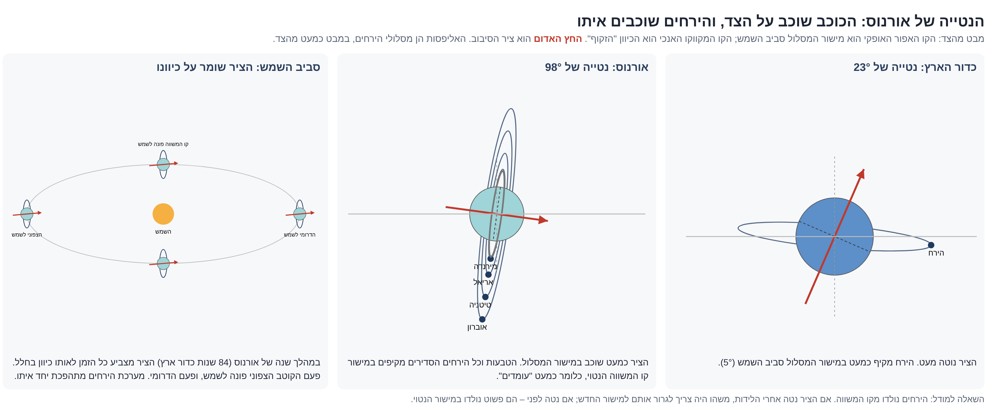
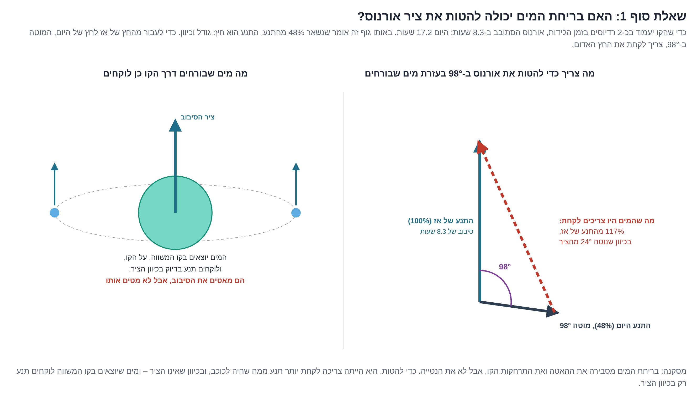
I.1Die Neigung von 98°: geprüfte Möglichkeiten
Die Rotationsachse des Uranus ist um 98° gegen seine Bahnebene geneigt, und alle seine regulären Monde umlaufen ihn in der geneigten Äquatorebene. Dieser Abschnitt fasst die dynamischen Möglichkeiten zusammen, die während der Untersuchung für diese Arbeit geprüft wurden, die durchgeführten Vektorrechnungen und die konkurrierenden Hypothesen in der wissenschaftlichen Literatur.
• Mechanisches Prinzip der Änderung der Achsneigung: Der Drehimpuls eines rotierenden Körpers ist ein fester Vektor im Raum (mit Betrag und Richtung), und die Richtung der Achse im Raum entspricht der Richtung des Vektors. Eine Änderung des Neigungswinkels erfordert eine Änderung der Vektorrichtung, die durch Hinzufügen oder Entziehen von Drehimpuls in einer nicht zur Achse parallelen Richtung oder durch ein andauerndes äußeres Drehmoment (Torque) erreicht wird. Eine bloße Änderung des Betrags des Vektors (achsensymmetrischer Verlangsamungs- oder Beschleunigungsmechanismus) ändert die Rotationsrate, dreht aber die Achse nicht.
Analyse der dynamischen Möglichkeiten und Mechanismen
Möglichkeit 1: Achsensymmetrischer Wasserverlust über die Korotationslinie
Im Moment der Geburt betrug die Rotationsperiode etwa 8.3 Stunden und verlangsamte sich bis auf 17.2 Stunden in der Gegenwart; Uranus behält heute nur 48% seines urzeitlichen Drehimpulses. Ein vektorieller Übergang zwischen den Drehimpulszuständen erfordert das Entziehen eines Restvektors mit einem Betrag von 117% des urzeitlichen Drehimpulses und einer Neigung von 24° gegen die Rotationsachse (Abbildung I.2).
• Mechanische Sperre: Wasser, das durch die Öffnungen der hydrodynamischen Pumpe am Äquator ausgeworfen wird, trägt nur Drehimpuls, der genau parallel zur axialen Rotationsachse liegt. Dieser Mechanismus verkürzt den Vektor (axiale Verlangsamung), ändert aber nicht seine räumliche Richtung. Die Möglichkeit wird verworfen.
Möglichkeit 2: Einseitiger asymmetrischer Massenauswurf
Ein konzentrierter Materialauswurf von einem einzigen geographischen Punkt außerhalb der Äquatorebene und in einer bestimmten Richtung (ähnlich einem seitlich am Körper angebrachten Raketentriebwerk) kann Drehimpuls in einer nicht zur Achse parallelen Richtung tragen. Um das erforderliche Moment (117% des damaligen Drehimpulses) zu liefern, wurde die auszuwerfende Masse als Funktion der Auswurfgeschwindigkeit berechnet:
| Auswurfgeschwindigkeit des Materials | Erforderliche Auswurfmasse | Gesamtmassenanteil des Uranus |
|---|---|---|
| Fluchtgeschwindigkeit (21 km/s) | etwa 1 Erdmasse () | 6.6% |
| Doppelte Fluchtgeschwindigkeit (42 km/s) | etwa 0.5 Erdmassen () | 3.3% |
• Mechanische Bestätigung: Die Größenordnungen der Masse entsprechen der Masse des Impaktors in den gängigen Hypothesen (), wirken aber mit umgekehrtem Vektor (Abtransport von Drehimpuls durch Auswurf statt Zufuhr von Drehimpuls durch Einschlag). Die dynamische Einschränkung liegt in der extremen Anforderung an einen konzentrierten, langandauernden Auswurfmechanismus durch eine einzige Öffnung und in fester Richtung. Die Möglichkeit gilt hinsichtlich des Massenbudgets als durchführbar, hinsichtlich des geodynamischen Mechanismus jedoch als anspruchsvoll.
Möglichkeit 3: Verschiebung des geometrischen Massenmittelpunkts
Beim Auswurf eines Mondes erfährt der Mutterkörper einen mechanischen Rückstoß in die Gegenrichtung. Die Verschiebung des Körpermittelpunkts gegenüber dem gemeinsamen Massenmittelpunkt ist durch die Gleichung bestimmt: . Für Titania ergibt die Rechnung Δr ≈ 17 km, für Oberon Δr ≈ 21 km und für alle Monde zusammen einige zehn Kilometer (vernachlässigbar gegenüber einem Planetenradius von 25,559 km). Die Rotationsachse verläuft stets durch den Massenmittelpunkt und wird mit ihm verschoben, ihre räumliche Richtung ändert sich jedoch nicht. Eine unsymmetrische Massenverteilung zwingt den Körper, in sich selbst zu rollen (True Polar Wander), dreht aber den Drehimpulsvektor im Raum nicht. Der Mechanismus allein kippt die Achse nicht, legt aber eine Anforderung fest: Wenn der Austritt von Monden die Achse beeinflusst haben soll, waren die Uranusmonde früher erheblich schwerer als heute.
Möglichkeit 4: Bahnresonanz der Achspräzession (Secular Spin-Orbit Resonance)
Die Rotationsachse des Uranus vollführt eine Präzession (kreiselartige Taumelbewegung), deren Rate durch das Abplattungsmoment und die innere Massenverteilung bestimmt ist. Masse, die in der Äquatorebene umläuft, verhält sich gegenüber dem Schwerefeld der Sonne wie eine direkte Erweiterung der planetaren Ausbuchtung. Das effektive Abplattungsmoment () ist mathematisch gegeben durch:
Alle heutigen Uranusmonde (0.01% der Masse des Mutterkörpers) tragen zur Präzessionsrate das 5-Fache des Beitrags der eigenen Ausbuchtung bei (0.016 gegenüber 0.0033), ein Effekt, der bis zum Laplace-Radius (53R - 75R) erhalten bleibt. Wasser, das von der Pumpe ausgeworfen wird und sich vor seiner Abfuhr vorübergehend auf einer Bahn aufhält, liefert einen dominierenden Beitrag: Eine Wassermasse von 2% der Uranusmasse bei einem Radius von 20R erhöht das effektive Abplattungsmoment auf das 1,200-Fache der eigenen planetaren Ausbuchtung (Abbildung I.3).
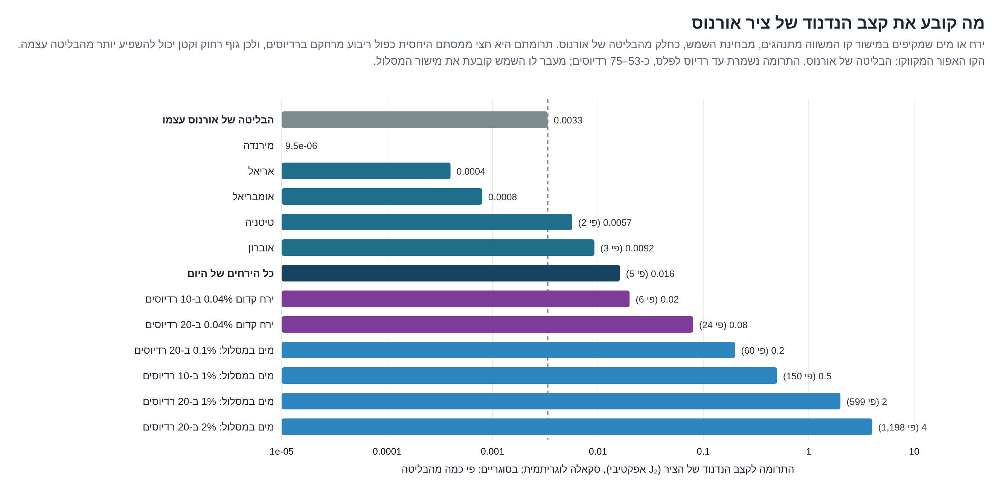
Wenn die erhöhte Präzessionsrate auf die äußere Schwingungsfrequenz der Bahnebene des Uranus trifft (angetrieben durch die benachbarten Planeten), entsteht eine strenge Bahnresonanz. Die Anziehung der Sonne auf die vergrößerte Ausbuchtung kippt die Achse allmählich, ein Mechanismus, der dem entspricht, der Saturn auf 27° kippte [Ward & Hamilton 2004]. Das Modell bestimmt drei Massenänderungen, die diesen Mechanismus antreiben: die Geburt der Monde und ihre Entfernung, den Aufenthalt von Wasser auf der Bahn und die Kontraktion des inneren Kerns (A.5). Die Abfuhr des Wassers in den Weltraum bricht die Resonanz und fixiert den Winkel endgültig. Die Monde werden adiabatisch mit der Äquatorebene mitgeführt und bleiben mit ihrer Bahn darin gebunden. Der Mechanismus passt zum Modell und erfordert eine spezifische dynamische Berechnung.
Möglichkeit 5: Ein urzeitlicher Mond, der einen Gezeitenabsturz nach innen erfuhr
Nach dem Modell von Saillenfest und Kollegen (2022) beschleunigt ein urzeitlicher Mond mit einer Masse von mindestens 0.04% der Uranusmasse (das Doppelte des Massenverhältnisses Titan–Saturn), der nach außen über 10R hinauswandert, die Präzessionsfrequenz bis zur Resonanz und kippt Uranus über 80° hinaus. In dieser Phase verliert die Bahn ihre dynamische Stabilität, und der Mond stürzt nach innen in den Mutterkörper, was ein sofortiges Einfrieren des Neigungswinkels bewirkt.
Im Rahmen des einheitlichen Mechanismus ist diese Hypothese ein Sonderfall der Möglichkeit 4 und liefert eine physikalische Erklärung für das Schicksal des Körpers: Der Mond fiel zurück, nachdem die sich entfernende Korotationslinie seine Bahn überschritten hatte, ähnlich der Dynamik der 10 inneren Monde heute. Die Analyse der Absturzphase zeigt, dass die Rückkehr des Mondes zum Äquator eines weichen Mutterkörpers eine Verlagerung der Massenverteilung und eine Verschiebung des Hauptabplattungsmoments (C-A) bewirkt:
| Masse des abgestürzten Mondes () | Verlagerter Massenanteil des Hauptabplattungsmoments (C-A) |
|---|---|
| Mindestmasse in der Literatur (0.04%) | etwa 12% |
| In der Literatur bevorzugte Masse (0.17%) | etwa 51% |
Diese Massenverlagerung ändert die Präzessionsfrequenz punktuell und bricht die Resonanz ab. Erfolgte der Absturz von einer geneigten Bahn, wird eine sekundäre Drehimpulskomponente in einer nicht zur Achse parallelen Richtung eingebracht. Ein passender Mechanismus, der eine Berechnung der dynamischen Zeitskalen und der Stärke der morphologischen Verstärkung erfordert.
Analysematrix der Hypothesen und konkurrierenden Modelle
| # | Die dynamische Hypothese | Mechanische Anforderungen und feste Parameter | Vereinbarkeit mit dem einheitlichen Mechanismus | Funktionaler Status |
|---|---|---|---|---|
| 1 | Wasserverlust über die Korotationslinie | Abtransport von 117% des Drehimpulses in einer nicht zur Rotationsachse parallelen Richtung. | — | Verworfen. Das Auswurfmoment liegt nur parallel zur Achse. |
| 2 | Einseitiger asymmetrischer Massenauswurf | Auswurf von von einem einzigen geographischen Punkt und mit festem Vektor. | Ja (angetrieben durch die hydrodynamische Pumpe). | Quantitativ möglich; anspruchsvoll hinsichtlich des Mechanismus der Ausrichtung der Öffnung. |
| 3 | Verschiebung des Massenmittelpunkts allein | Verschiebung der Kerngeometrie gegenüber dem gemeinsamen Massenmittelpunkt. | — | Verworfen. Ändert die Richtung des Vektors im Raum nicht. |
| 4 | Resonanz durch Änderungen der Massenverteilung | Das effektive Abplattungsmoment erreicht eine Präzessionsfrequenz, die der äußeren Systemfrequenz entspricht. | Ja, vollständig. (Zusammenwirken von Monden, Wasser auf der Bahn und Kontraktion). | Passt zum Mechanismus; erfordert eine dynamische Berechnung der Zeitfenster. |
| 5 | Abgestürzter massereicher urzeitlicher Mond | Mondmasse ≥ 0.04%, radiale Wanderung > 10R und Absturz nach innen nach der Resonanz. | Ja, vollständig. (Entspricht dem Mechanismus der Linienüberschreitung und der Porosität). | Passt zum Mechanismus; erfordert eine Berechnung des geodynamischen Verstärkungsfaktors. |
| 6 | Riesenkollisionen (die gängige Erklärung) | Direkter mechanischer Einschlag eines Körpers der Größe ; erfordert mehrere aufeinanderfolgende Einschläge [Morbidelli et al. 2012]. | Nein. Konkurrierendes mechanisches Modell. | In der Literatur anerkannt; leidet unter einem komplexen Wahrscheinlichkeitsproblem. |
| 7 | Resonanz in der Phase der Planetenwanderung | Frequenzkopplung mit einem Nachbarplaneten während der frühen Entwicklungsphase [Boué & Laskar 2010]. | Neutral. | Begrenzt; theoretisches Versagen beim Erreichen des extremen Winkels von 98° ohne zusätzliche Kraft. |
Zusammenfassung und empirische Prüfungen zur Bestätigung
Das einheitliche Modell entscheidet die Frage nach dem Ursprung der Achsneigung nicht endgültig, legt aber zwei klare geophysikalische Schlussfolgerungen fest: Der Mechanismus des Wasserverlusts (der die Verlangsamung der axialen Rotation und die Entfernung der Korotationslinie erklärt) kann die Richtung der Achse nicht kippen; strukturelle Änderungen der Massenverteilung (Wasser und Monde auf fernen Bahnen in der Äquatorebene) hingegen beherrschen die Präzessionsfrequenz mit einer Stärke, die die des inneren Körpers des Planeten weit übersteigt, und sind daher der natürlichste physikalische Mechanismus im Rahmen des Modells.
Prüfungen und Vorhersagen zur Bestätigung des Modells:
1. Kartierung des Schwerefelds (tiefe Gravimetrie): Ein massereicher urzeitlicher Mond, der mechanisch in das Innere eines weichen Mutterkörpers stürzte (Möglichkeit 5), hinterließ eine bestimmte asymmetrische Schwereanomalie – einen Massenüberschuss am Äquator auf einer Seite.
2. Berechnung der historischen Präzessionsrate: Integration der Bewegungsgleichung entlang der Chronologie der Geburten und des Wasserverlusts, um das Durchlaufen des Resonanzfensters und die zum Erreichen eines Winkels von 98° erforderliche Verweildauer mathematisch zu bestätigen.
Uranus bewahrt das Muster beiderseits der Linie und die morphologische Signatur der Gezeitenbindung. Die heute fallenden inneren Monde bestätigen geometrisch die Lage der Korotationslinie im Moment der Geburt, und der Wasserverlust begründet ihre radiale Entfernung, während die Frage nach dem Mechanismus der Achsneigung auf 98° als offenes Problem für weitere Berechnung bestimmt ist (Teil M).
PART JNeptun
Neptun ist der fernste und dichteste Eisriese des Sonnensystems. Das System hat sieben kleine innere Monde und einen einzigen massereichen Mond, Triton, der eine rückläufige Bahn (Retrograde) hat. Die übrigen äußeren Monde gelten als eingefangene Monde (Irregular) und werden in das Prüfprotokoll nicht einbezogen.
Analyse der 13 Protokollprüfungen – Neptun
| # | Protokollprüfung | Befunde und Zahlenwerte |
|---|---|---|
| 1 | Globale Grunddaten | Globale mittlere Dichte: 1,638 kg/m³; heutiger Tag: 16.1 Stunden. Die Rotationsachse ist um 28° geneigt. |
| 2 | Mondbestand des Systems | Sieben kleine innere Monde, ein einziger massereicher Mond (Triton) und eine Gruppe eingefangener äußerer Monde. |
| 3 | Dynamische Rekonstruktion der urzeitlichen Rotation | Der Bahndrehimpuls der inneren Monde ist vernachlässigbar. Das Wanderungsmoment nach der Geburt wird vollständig vom Gast des Systems, Triton, beherrscht, der eine ständige Bremsung ausübt. |
| 4 | Bestätigung des Geburtsgesetzes | Die Korotationslinie des Neptun liegt in der Gegenwart in einem Abstand von 83,500 km von seinem Mittelpunkt, das sind 3.39R – außerhalb des theoretischen Geburtsbereichs (ähnlich dem Uranussystem). Für den heutigen Dichtewert verlangt das Geburtsgesetz einen urzeitlichen Tag von 7.3 Stunden. |
| 5 | Analyse von Wasser und flüchtigen Bestandteilen | Der Körper ist reich an Eis und Wasser; er erlitt wegen eines dünnen atmosphärischen Deckels einen massiven Verlust an Drehimpuls und Wassermasse über die Korotationslinie. |
| 6 | Heutiger Differentiationsgrad | Sortiert. |
| 7 | Bestimmung des Geburtsfensters | Schloss sich mit der Verlagerung der Korotationslinie über den aktiven Bereich der hydrodynamischen Pumpe hinaus. |
| 8 | Bahn der Gezeitenwanderung | Dynamisch durch die besondere Bahn des Triton bestimmt. |
| 9 | Dynamische Überlebensparameter | Das innere System ist stabil; Triton erfährt eine ständige nach innen gerichtete Wanderung (er fällt infolge seines rückläufigen Umlaufs nach innen). |
| 10 | Morphologische Spuren im Mutterkörper | Unter den tiefen atmosphärischen Schichten verborgen. |
| 11 | Strukturelle Spuren in den Monden | Erhaltung einer unregelmäßigen Form bei Körpern an der Rundungsschwelle (Proteus) und eine hohe Dichte bei Triton (unten ausgeführt). |
| 12 | Analyse der Ringsysteme | Ein System dünner Ringe und asymmetrischer Ringbögen (Ring arcs). |
| 13 | Abweichungen und Ausnahmen | Der Mond Triton ist eine morphologische und dynamische Ausnahme im regulären System, die vollständig als von außen eingefangener Körper erklärt wird. |
Dynamik der Korotationslinie und Morphologie des Mondes Proteus
Das System der inneren Monde bewahrt genau das Muster beiderseits der Linie des einheitlichen Modells (Teil L):
• Unterhalb der heutigen Korotationslinie (x < 3.39): Die fünf Monde Naiad, Thalassa, Despina, Galatea und Larissa liegen im radialen Bereich 1.96R - 2.99R; sie befinden sich unterhalb der Linie, erfahren eine nach innen gerichtete Wanderung und befinden sich im Bahnabstieg nach innen (sie fallen zurück).
• Oberhalb der heutigen Korotationslinie (x > 3.39): Die Monde Hippocamp [Showalter et al. 2019] und Proteus liegen oberhalb der Linie.
Die Verlangsamung der axialen Rotation des Neptun von einem urzeitlichen Tag von 7.3 Stunden auf 16.1 Stunden wird, wie beim Uranus, durch den Mechanismus des Entweichens von Wasser und flüchtigen Stoffen über die Korotationslinie () erklärt, die zwangsläufig Drehimpuls aus dem System trugen und die Linie nach außen verschoben. Die inneren Monde, die heute im urzeitlichen Geburtsbereich liegen und nach innen fallen, sind ein dynamischer Beweis dafür, dass die Linie bei ihrer Entfernung ihre Bahnen überschritt.
• Strukturelle Parameter des Proteus: Der Mond hat einen mittleren Durchmesser von etwa 420 km, eine Größe, die genau an der theoretischen Rundungsschwelle eines eisigen Körpers liegt (etwa 400 km, [A.4]). Dennoch behält der Körper eine asymmetrische, unregelmäßige Form, hat eine sehr dunkle Oberfläche und trägt einen massiven Einschlagkrater (Pharos). Nach dem einheitlichen Mechanismus ist der Körper ein schwammartiger Körper (Macro-porosity), der als wassergesättigter magmatischer Brocken ausgeworfen wurde; das rasche Entweichen der flüchtigen Stoffe bewirkte eine rasche thermische Erstarrung des silikatisch-eisigen Gerüsts, bevor der Körper ein hydrostatisches Gleichgewicht erreichen und rund werden konnte. Geophysikalische Vorhersage: Die Dichte des Proteus (noch nicht empirisch gemessen) muss ungewöhnlich niedrig sein, als Zeugnis der inneren Hohlräume des Stadiums 2.
Triton: mechanische Analyse eines aus dem Kuipergürtel eingefangenen Körpers
a. Dynamische und chemische Parameter
Triton umläuft Neptun auf einer rückläufigen Bahn (Retrograde) mit konstanter Bahngeschwindigkeit und mit einer extremen Bahnneigung von 157° (gleichbedeutend mit einem Winkel von nur 23° gegen die planetare Äquatorebene, aber in umgekehrter Richtung, Abbildung J.1). Die Bahn ist bei einem Radius von 14.4R vollständig kreisförmig.
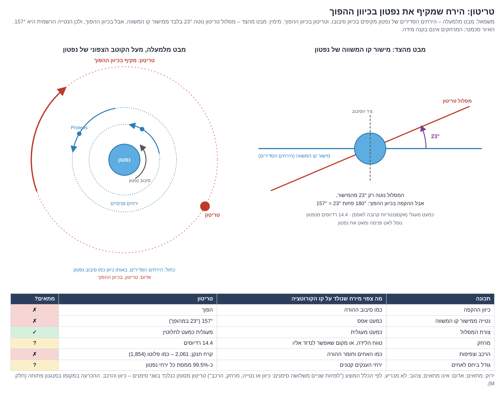
Der Körper hat einen physikalischen Radius von 1,353 km und eine Masse von – ein Wert, der 0.021% der Neptunmasse ausmacht (ein Massenverhältnis in der Größenordnung von Titan–Saturn, 0.024%). Seine Größe und Masse übertreffen die des Pluto. Die Oberfläche besteht aus Stickstoff-, Methan- und Kohlenmonoxideis und zeigt kryovulkanische Aktivität (Stickstoffgeysire, [Smith et al. 1989]). Seine mittlere Dichte ist hoch und beträgt 2,061 kg/m³.
Da das Geburtsgesetz verlangt, dass ein sich vom Mutterkörper lösender Mond im Drehsinn der axialen Rotation und in dessen geometrischer Äquatorebene umläuft, ist Triton kein ursprünglicher Mond des Neptun.
b. Rekonstruktion des Ursprungs des Körpers (Modell des Lappens einer gespaltenen Erdnuss)
Eine vergleichende Analyse von Masse und Dichte des Körpers schließt aus, dass Triton ein aus dem Uranussystem (schwerer als alle Uranusmonde zusammen, etwa das 6-Fache von Titania) oder aus dem Plutosystem (schwerer als Pluto) verdrängter Mond ist. Der Körper fügt sich genau als massereicher Partner eines Doppelkörpersystems aus dem Kuipergürtel ein, das vom Schwerefeld des Neptun dynamisch eingefangen wurde, wobei der Partner abgetrennt und in den Weltraum geschleudert wurde [Agnor & Hamilton 2006].
Nach dem einheitlichen Mechanismus entstand dieses Doppelsystem am äußeren Rand des Sonnensystems durch die dritte Geburtsart – vollständige hydrodynamische Spaltung (Fission) [A.4, K.1]:
• Der urzeitliche vereinte Körper durchlief eine intensive Differentiation (A.5): Das dichte silikatische und metallische Material sank zum Massenmittelpunkt des Systems ab, der strukturell im großen Lappen der zweilappigen Erdnussform liegt.
• Mit dem Anstieg der Rotationsgeschwindigkeit über die Zerreißschwelle wurde der geometrische Hals außerhalb des globalen Massenmittelpunkts durchtrennt.
• Infolgedessen nahm der große Lappen (Triton) den Hauptteil des dichten silikatischen und metallischen Kerns auf und behielt ihn, während der kleine Lappen als eis- und flüchtigenreicher Körper geringer Dichte hervorging. Triton stellt den großen Lappen eines urzeitlichen Erdnusssystems dar, das massereicher als Pluto–Charon war und eine weiter fortgeschrittene Differentiation durchlief, was ihn dichter und massereicher als Pluto macht.
Der Einfang des Triton führte zur Störung und zum dynamischen Zusammenbruch des ursprünglichen Mondsystems des Neptun [Goldreich et al. 1989], ein Mechanismus, der das vollständige Fehlen regulärer mittelgroßer Monde im heutigen System erklärt.
Analyse gespaltener Erdnusssysteme im Kuipergürtel
Das geodynamische Modell legt eine strenge strukturelle Vorhersage für alle durch Spaltung entstandenen Doppelkörper fest: Der massereiche Partner im System (der Mutterkörper) ist zwangsläufig dichter als der sekundäre Partner (der Mond), weil sich der Kern vor dem Zerreißen des Halses im großen Lappen konzentrierte.
| Urzeitliches Doppelsystem | Massenverhältnis () | Dichte des großen Körpers () | Dichte des kleinen Körpers () | Bestätigung der geophysikalischen Vorhersage |
|---|---|---|---|---|
| Pluto / Charon | 0.12 | 1,854 | 1,702 | Vollständig bestätigt. Der große ist dichter als der kleine. |
| Eris / Dysnomia | < 0.0085 | 2,400 | Der Mond ist wenig dicht und entspricht eher einem durch die Rotation ausgeworfenen Körper als einem Lappen [Brown & Butler 2023]. | |
| Orcus / Vanth | 0.16 | 1,500 (Bereich: 1000-2500) | Noch nicht entschieden. Erfordert eine genaue Messung der Dichte von Vanth. |
Konkurrierende Hypothesen in der wissenschaftlichen Literatur deuten die Entstehung dieser Doppelsysteme als Ergebnis urzeitlicher Riesenkollisionen. Das Dichtegefälle, bei dem der massereiche Körper dichter ist als der sekundäre, ist geometrisch auch mit dem Kollisionsmodell vereinbar, doch der entscheidende mechanische Beleg zugunsten des hydrodynamischen Spaltungsmechanismus liegt darin, dass der Gesamtdrehimpuls des urzeitlichen vereinten Körpers Pluto–Charon jenseits der mechanischen Zerreißschwelle liegt (K.1).
PART KZwergplaneten (?)
Die planetaren Körper in diesem Teil tragen ein methodisches Fragezeichen, denn dynamisch gesehen könnten einige von ihnen urzeitliche Monde sein, die ihrer Bahn entkamen oder gravitativ eingefangen wurden. Das dynamische System des Triton beweist, dass ein eigenständiger Körper aus dem Kuipergürtel zu einem Mond werden kann; andererseits haben einige dieser Körper eigene Mondsysteme und wirken mechanisch als Mutterkörper.
Globale und strukturelle Parameter der Zwergplaneten
| Planetarer Körper | Mittlere Dichte () | Rotationsperiode (Tag) | Heutige Lage der Korotationslinie () | Mondbestand des Systems | Massenverhältnis Mond/Mutterkörper |
|---|---|---|---|---|---|
| Pluto | 1,854 | 6.4 Tage (synchron gebunden) | 16.5R | Charon + 4 kleine Monde | 12% |
| Haumea | 1,882 | 3.9 Stunden | 1.38R | 2 Monde + Ringsystem | 0.45% |
| Eris | 2,519 | 15.8 Tage (synchron gebunden) | 32R | Dysnomia | 0.5% |
| Makemake | 2,025 | 22.8 Stunden | 4.6R | ein einziger winziger Mond | 0.03% |
| Ceres | 2,157 | 9.1 Stunden | 2.54R | keine Monde | — |
K.1Pluto und Charon: die gespaltene Erdnuss
Charon macht 12% der Plutomasse aus [Brozović et al. 2015], das höchste Massenverhältnis eines planetaren Mondes im Sonnensystem (Massenanteile des Systems: Pluto 89%, Charon 11%). Nach dem einheitlichen Mechanismus bildeten Pluto und Charon einen einzigen vereinten Körper – eine zweilappige Erdnussform (Contact binary) –, der an seinem geometrischen Hals eine vollständige hydrodynamische Spaltung (Rotational fission) erfuhr. Zweilappige Körper dieser Art sind im Kuipergürtel strukturell häufig, wie die geometrische Form des Körpers Arrokoth zeigt [Stern et al. 2019].
a. Vektorielle Analyse der Geschwindigkeits- und Spaltungsschwellen
Die vollständige rechnerische Rückführung des Systemdrehimpulses in einen urzeitlichen vereinten Körper (berechneter Radius: etwa 1,240 km, Dichte: etwa 1,840 kg/m³) ergibt eine axiale Rotationsperiode, die vom strukturellen Differentiationsgrad abhängt. Für einen Körper dieser Dichte ergeben sich nach den Maclaurin- und Jacobi-Gleichungen zwei feste Schwellen [Chandrasekhar 1969]:
1. Ellipsoidische Streckungsschwelle (): Der Körper kann keine symmetrisch abgeplattete Form beibehalten und wird zu einem dreiachsigen Ellipsoid und anschließend zu einer Erdnussform gedehnt.
2. Mechanische Trennungsschwelle (): Die Geschwindigkeit am Äquator gleicht der Orbitalgeschwindigkeit (), und der Körper reißt.
Einfluss der Differentiation auf das Erreichen der Spaltungsschwelle
| Zustand des urzeitlichen vereinten Körpers | Trägheitsmomentfaktor () | Berechnete Rotationsperiode () | Lage der Korotationslinie () | Status gegenüber den mechanischen Schwellen |
|---|---|---|---|---|
| Homogen gleichförmig (vor der Differentiation) | 0.4 | 2.51 Stunden | 1.02 | Jenseits der Streckungsschwelle, nahe der mechanischen Trennungsschwelle. |
| Strukturell sortiert (aktive Differentiation) | 0.31 | 1.94 Stunden | 0.86 | Vollständiges Überschreiten der Trennungsschwelle (Zerreißen). |
Der vereinte Körper hatte bereits vor Beginn der Sortierung eine gestreckte Morphologie. Die strukturelle Differentiation trieb die vollständige Spaltung an: Das Absinken der dichten silikatischen Stoffe in den Kern verringerte das Trägheitsmoment auf 0.31 und beschleunigte die axiale Rotation unter Drehimpulserhaltung [A.5]. Die Korotationslinie lag unmittelbar an der Oberfläche, in Höhe des geometrischen Halses, und führte zum Zerreißen der Struktur.
Stützende empirische Befunde: Pluto und Charon befinden sich in vollständiger gegenseitiger Gezeitenbindung (Double synchronous lock) [Stern et al. 2015], und Charon liegt genau auf der Korotationslinie des Pluto, ein Zeugnis zweier Körper, die sich auf der dynamischen Linie gespalten haben. Ihre Dichten liegen nahe beieinander (1,854 gegenüber 1,702 kg/m³), eine Signatur, die für homogenes Material typisch ist, das sich in den frühen Stadien der Differentiation spaltete (Stadium 1, [A.9]).
b. Mechanik des morphologischen Bruchs auf Charon
Pluto liegt in der gefrorenen Zone des planetaren Bogens der Geburten [L.4], ein Aufbau aus einem weichen Kern unter der Oberfläche, eingeschlossen unter einer statischen gefrorenen Kruste. Die Kruste leistete den rotationsbedingten Dehnungsspannungen elastischen Widerstand; mit fortschreitender innerer Kontraktion und steigender Rotationsgeschwindigkeit riss die äußere Kruste am Hals auf einen Schlag durch einen mechanischen Bruchmechanismus (Brittle failure). Der hydrostatische Druck im Kern des Pluto (etwa 0.7 GPa) ist 700-mal höher als die maximale Zugfestigkeit von Eis; daher blieb der Bruch auf die äußere Krustenschicht beschränkt und löste die Dehnungsspannungen an der mechanischen Schwelle:
• Gebiet Oz Terra (nördliche Hemisphäre): zeichnet sich durch eine raue, alte Topographie aus (geologisches Alter > 4 Milliarden Jahre), welche die Signatur der ursprünglichen Kruste der Erdnussphase trägt.
• Ebene Vulcan Planitia (Äquatorbereich): eine vollständig glatte Ebene, die das weiche innere Material darstellt, das im Moment des Bruchs freigelegt wurde. Die Masse floss und rundete sich zurück zum hydrostatischen Gleichgewicht, ein Dehnungsprozess, der die Oberfläche glättete. Die isolierten Bergstrukturen in Senken der Ebene sind Blöcke, die während der Dehnung in der weichen Matrix eingeschlossen wurden. Die Ebene liegt genau am Äquator, auf der Pluto ständig zugewandten Hemisphäre (Längenausrichtung 285° bis 30° [Beyer et al. 2017]), dem Ort des urzeitlichen Halses.
• Tektonischer Canyongürtel: Die Linie aus Rücken und Gräben, die die beiden geologischen Einheiten trennt, ist nach dem Modell die mechanische Bruchlinie der Spaltung. In der Literatur scheint der Gürtel ganz Charon zu umgeben und wird als Dehnung beim Gefrieren eines inneren Ozeans erklärt [Beyer et al. 2021].
c. Bahndynamik der vier kleinen Monde
Die vier kleinen Monde – Styx, Nix, Kerberos und Hydra – wurden vor der endgültigen Spaltungsphase direkt aus dem Bereich des Äquators und des Halses der urzeitlichen Erdnuss ausgeworfen, als die Rotationsgeschwindigkeit die Trennungsschwelle erreichte und die Korotationslinie an der Oberfläche festgelegt war. In dieser dynamischen Konfiguration verliert der Äquator durch Zentrifugalkräfte von selbst Masse, ohne dass eine punktuelle vulkanische Pumpe erforderlich ist. Die Monde lösten sich auf kreisförmigen Bahnen in der geometrischen Äquatorebene.
Die empirischen Messungen der Mission New Horizons bestätigen diesen Mechanismus [Weaver et al. 2016]:
• Die Bahnen sind vollständig kreisförmig und liegen in der Ebene der synchronen Bahn des Charon.
• Die Körper sind winzig und nicht im hydrostatischen Gleichgewicht (asymmetrisch).
• Die Albedo der Oberfläche ist sehr hoch und besteht aus reinem Wassereis, eine Signatur feuchten inneren Materials, das in den Weltraum ausgeworfen wurde.
• Die Umlaufperioden zeigen Bahnresonanzverhältnisse (Resonance) nahe 1:3, 1:4, 1:5 und 1:6 gegenüber der Umlaufperiode des Charon, wobei Styx, Nix und Hydra in einer strengen Dreifachresonanz (Laplace-like resonance) gebunden sind [Showalter & Hamilton 2015].
d. Zweiphasenmodell der Wanderung der kleinen Monde
Ab dem Moment ihrer Ablösung lagen die kleinen Monde oberhalb der dynamischen Korotationslinie und erfuhren eine nach außen gerichtete Wanderung (sie entfernten sich radial nach außen). Der Entfernungsmechanismus wirkte in zwei aufeinanderfolgenden Phasen:
Phase A: Schub der urzeitlichen Erdnuss (Quadrupolmoment) → Phase B: globaler Gezeitenschub (weicher Plutokörper)
• Phase A (Schub der Erdnuss): Ein gestreckter, zweilappiger, schnell rotierender Körper erzeugt ein massiv asymmetrisches Gravitationspotential (starkes Quadrupolmoment), das an den Geburtsorten eine nach außen gerichtete Schubkraft ausübt, die um mehrere Größenordnungen größer ist als klassische Gezeitenkräfte.
• Phase B (globaler Gezeitenschub): Mit fortschreitender Spaltung ging der Schub in die Gezeitenkräfte des jungen Pluto über. Die Stärke des Schubs nimmt mit dem Abstand steil ab (); eine Verdopplung des Abstands verringert die Verlagerungskraft etwa um den Faktor 45. Nahe der Oberfläche betrug die Wanderungsrate für einen Körper hoher mechanischer Nachgiebigkeit () hunderte Meter pro Jahr und klang in der Gegenwart auf null ab.
Die zeitliche Integration allein der Phase B (unter der Annahme eines während der gesamten geologischen Zeit weichen Pluto) verlagert Nix und Hydra innerhalb von 4.5 Milliarden Jahren auf einen radialen Abstand von 17R - 23R. Diese Lage liegt jenseits des heutigen Haltepunkts der Korotationslinie (, festgelegt durch die Bindung der Rotation des Pluto an die Bahn des Charon), womit dynamisch bewiesen ist, dass die Korotationslinie die kleinen Monde nie einholte. Da sich die Körper heute im Bereich 36R - 55R befinden, ergibt sich eine strenge mechanische Anforderung: Das Quadrupol-Schubmoment der Erdnussform in Phase A schloss eine Lücke von etwa dem Faktor 2 im Bahnabstand. Hypothesen einer Bahnmitnahme durch Charon [Ward & Canup 2006] werden verworfen, da dieser Mechanismus die Bahnexzentrizität erhöht, im Widerspruch zu den kreisförmigen Bahnen der Gegenwart [Cheng et al. 2014].
K.2Haumea: eine Erdnuss vor der Spaltung
Der Zwergplanet Haumea hat eine extreme Rotationsperiode von 3.9 Stunden [Rabinowitz et al. 2006] und eine ungewöhnlich gestreckte ellipsoidische Morphologie ( [Ortiz et al. 2017]). Ihre Korotationslinie liegt bei einem Radius von 1,104 km, während die Enden ihrer langen geometrischen Achse bis zu einem Abstand von 1,161 km reichen; die Enden des physikalischen Körpers ragen über die heutige Korotationslinie hinaus. Der Körper hat ein planetares Ringsystem bei 2,287 km [Ortiz et al. 2017], zwei reguläre Monde und eine dynamische Familie eisiger Himmelskörper mit ähnlichen Bahnelementen [Brown et al. 2007].
Nach dem einheitlichen Mechanismus ist Haumea derjenige Körper im heutigen Sonnensystem, der der Phase einer aktiven physikalischen Geburt in der Gegenwart am nächsten ist:
• Für ihren Dichtewert () liegt die ellipsoidische Streckungsschwelle bei etwa 4.5 Stunden und die mechanische Trennungsschwelle bei etwa 2.4 Stunden.
• Die heutige Rotationsperiode (3.9 Stunden) liegt genau innerhalb dieses Fensters.
• Der Körper stellt eine Erdnussform vor der Spaltung dar, einen Querschnitt der geologischen Phase, die Pluto und Charon vor dem Zerreißen des Halses durchliefen. Geodynamische Vorhersage: Eine fortgesetzte Kontraktion des inneren Kerns der Haumea wird aufgrund der Drehimpulserhaltung eine axiale Beschleunigung bewirken und den Körper zur mechanischen Trennungsschwelle bei 2.4 Stunden treiben [A.5].
K.3Eris und Dysnomia
Das System Eris befindet sich in vollständiger synchroner Gezeitenbindung gegenüber dem Mond Dysnomia [Szakáts et al. 2023], der genau auf der statischen Korotationslinie des Mutterkörpers liegt (). Das Massenverhältnis des Systems wird auf etwa 0.5% bestimmt [Brown & Butler 2023]. Die dynamische und strukturelle Konfiguration gibt das Modell Pluto–Charon in kleinerem Massenmaßstab genau wieder und entspricht den Aussagen des Mondgesetzes für die fortgeschrittenen Stadien des Bogens der Geburten am äußeren Rand.
K.4Makemake
Makemake hat einen kleinen Mond (Parker et al. 2016). Ihre Korotationslinie liegt heute bei 4.6 Radien. Die Daten sind spärlich.
K.5Ceres
Der Zwergplanet Ceres ist ein an Wasseranteilen reicher Körper, der im Lauf seiner geologischen Geschichte nur eine teilweise strukturelle Differentiation durchlief [Park et al. 2016]. Die Korotationslinie der Ceres liegt in der Gegenwart in einem Abstand von von ihrem Mittelpunkt, ein Wert in deutlicher Nähe zum theoretischen Geburtsbereich des einheitlichen Modells.
Obwohl die Wasserbedingung und die Parameter der axialen Rotation physikalisch gleichzeitig erfüllt sind, ist der Körper vollständig mondlos. Diese mechanische Abweichung vom Mondgesetz ist derzeit nicht entschieden und ist als offene strukturelle Frage für weitere Untersuchung bestimmt (Teil M).
K.6Zwerg oder Mond?
Die dynamische Analyse des äußeren Randes des Sonnensystems weist auf eine Doppelnatur (Dual nature) der Himmelskörper in der Kategorie der Zwergplaneten hin:
• Entwicklungsweg A: Ein eigenständiger Körper wird durch gravitativen Einfang (Capture) zu einem Mond. Dieser Mechanismus ist im Neptunsystem empirisch belegt, wo die geophysikalischen und Bahndaten Triton als einen von außen eingefangenen Zwergplaneten aus dem Kuipergürtel ausweisen.
• Entwicklungsweg B: Ein eigenständiger Körper wirkt als Mutterkörper und bringt ein eigenes Mondsystem hervor. Pluto und Eris stehen für diesen Mechanismus und verhalten sich physikalisch in jeder Hinsicht als Mutterkörper.
Die theoretische Vermutung, dass einige der heute bekannten Zwergplaneten nichts anderes sind als urzeitliche Monde, die ihrer Bahn entkamen (Escaped moons) oder sekundär eingefangen wurden, ist mechanisch begründet. Die Festlegung absoluter geodynamischer Kriterien zur Unterscheidung zwischen einem ursprünglichen Zwergplaneten und einem entflohenen urzeitlichen Mond ist als offenes strukturelles Problem bestimmt (Teil M).
PART LDer gemeinsame Nenner
Der vereinigende Teil fasst alle untersuchten Himmelskörper des Sonnensystems in einer einzigen Parametermatrix zusammen, um den einheitlichen Mechanismus zu bestätigen und die wiederkehrenden dynamischen Signaturen darzustellen.
L.1Monde beiderseits der Linie
In fünf Planetensystemen des Sonnensystems – Mars, Jupiter, Saturn, Uranus und Neptun – zeigt sich eine einheitliche dynamische Anomalie: eine Gruppe kleiner regulärer Monde in unmittelbarer Nähe der heutigen Korotationslinie des Mutterkörpers, verteilt auf beide Seiten der Linie (Abbildung L.1):
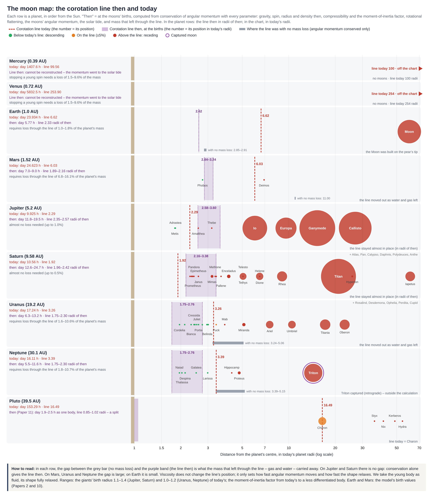
• Die subsynchrone Gruppe (unterhalb der Linie): erfährt eine nach innen gerichtete Gezeitenwanderung und kriecht auf ihrer Bahn rückwärts nach innen, dem Absturz auf den Mutterkörper entgegen (grüne Monde). In den Systemen von Uranus und Neptun liegen diese Monde genau innerhalb des urzeitlichen Geburtsbereichs ().
• Die suprasynchrone Gruppe (oberhalb der Linie): erfährt eine nach außen gerichtete Gezeitenwanderung und entfernt sich radial nach außen (rote Monde).
Diese symmetrische Konfiguration ist ein direkter mechanischer Beweis für die Vorhersage des Mondgesetzes: Die Körper wurden synchron auf der Korotationslinie geboren und erfuhren eine zweiseitige dynamische Zerstreuung entsprechend der Richtung der Gezeitenwanderung auf der Seite, auf der sie sich verdichteten. Bei Uranus und Neptun legen die heute fallenden subsynchronen Monde die ursprüngliche geometrische Lage der Korotationslinie im Moment der Geburt fest, vor ihrer Verschiebung infolge des Wasserverlusts.
Wo die Linie zur Zeit der Geburten stand
Die Lage der Linie damals wurde für jeden Planeten aus der Erhaltung des Drehimpulses neu berechnet, mit allen Parametern, die sie bestimmen: Gravitation (die Masse des Planeten, einschließlich entwichener Masse); die heutige Rotation; Radius und Dichte bei der Geburt (Erde 7.157 km; Mars das 1,5-Fache des heutigen Radius; Jupiter und Saturn das 1,1- bis 1,4-Fache und die Eisriesen das 1,0- bis 1,3-Fache des heutigen Radius, nach den Berechnungen zur Kontraktion von Riesenplaneten [Fortney et al. 2007; Marley et al. 2007]); die Kompressibilität über den Trägheitsmomentfaktor (0,40 für unsortiertes Material bei Erde und Mars; bei den Riesen vom heutigen Wert bis zu einem weniger differenzierten Körper, da Gas sich selbst komprimiert); die Rotationsabplattung (ein flüssiger Körper mit vollständig relaxierter Form, Darwin–Radau-Methode), die das Trägheitsmoment vergrößert und die Linie verschiebt; der Bahndrehimpuls der regulären Monde (eingefangene Monde ausgenommen); und die Sonnengezeiten auf der Erde. Die Viskosität ändert die Lage der Linie nicht; sie bestimmt nur, wie schnell Drehimpuls übertragen wird und wie schnell die Form relaxiert. Wo die Erhaltung allein die Linie nicht in den Geburtsbereich bringt, haben wir die Masse berechnet, die durch die Linie entweichen musste – Gas und Wasser –, um die Differenz zu tragen. Zwei Abschätzungen werden angegeben: allmählich (die Linie wandert nach außen, während sich die Rotation verlangsamt, sodass jedes spätere Kilogramm mehr Drehimpuls trägt) und eine Obergrenze (die gesamte Masse entweicht von der Linie zur Zeit der Geburt). Das Rechenskript ist p12_line_then.py im Code-Archiv der Serie.
Tabelle L.1. Die Korotationslinie damals und heute und die durch die Linie entwichene Masse
| Planet | Linie heute (Radien) | Linie damals ohne Massenverlust (Radien von damals) | Linie zur Zeit der Geburten (Radien von damals) | Tag damals (h) | Durch die Linie entwichene Masse (% der Planetenmasse) |
|---|---|---|---|---|---|
| Merkur | 100 | — | — | — | 1.5–9.6* |
| Venus | 254 | — | — | — | 1.5–9.6* |
| Erde | 6.62 | 2.54–2.59 | 2.33 | 5.77 | 1.0–1.8 |
| Mars | 6.03 | 7.33 | 1.89–2.16 | 7–9 | 6.8–16.1 |
| Jupiter | 2.29 | 2.35–2.57 | 2.35–2.57 | 11.8–19.5 | 0–1.0 |
| Saturn | 1.92 | 1.96–2.42 | 1.96–2.42 | 12.6–24.7 | 0–0.5 |
| Uranus | 3.26 | 3.24–4.33 | 1.75–2.30 | 6.3–14.9 | 1.6–10.7 |
| Neptun | 3.39 | 3.39–4.40 | 1.75–2.30 | 5.5–13.1 | 1.8–10.8 |
* Merkur und Venus: die Masse, die entweichen müsste, um eine junge Rotation von 5–12 Stunden anzuhalten; ihre damalige Linie lässt sich nicht rekonstruieren.
Der Befund: Bei Jupiter und Saturn bringt die Drehimpulserhaltung allein die Linie in den Geburtsbereich – in Radien jener Zeit hat sich die Linie kaum bewegt, wie es das Deckelprinzip erwartet (dicker Gasdeckel, wenig Leckage). Bei Mars, Uranus und Neptun lässt die Erhaltung allein die Linie weit vom Geburtsbereich entfernt, und zwischen einigen Prozent und etwa zehn Prozent der Masse mussten durch die Linie entweichen. Bei der Erde trug der Mond den größten Teil des Drehimpulses; mit der Rotationsabplattung beträgt der Tag ohne Verlust 6,7–6,9 Stunden (6,2 Stunden ohne Abplattung, Teil C), und der kleine Überschuss, der für die 5,77 Stunden des Modells nötig ist, entspricht 1,0%–1,8% der Erdmasse, die durch die Linie entwichen – die Größenordnung einer ursprünglichen Gashülle.
Merkur und Venus
Bei Merkur und Venus liegt die Linie heute bei 100 und 254 Radien – jenseits des Einflussbereichs des Planeten (der Hill-Sphäre, 90 und 167 Radien). Wäre ihnen ein Mond geboren worden, wäre er innerhalb der Linie geblieben, abgesunken und verschluckt worden. Ihre damalige Linie lässt sich nicht rekonstruieren: Sie haben keine Monde, und ihr Drehimpuls ging in unbekannter Menge an die Sonnengezeiten. Wir schlagen vor, dass zwei Faktoren sie verlangsamt haben. Zunächst, als sie schnell rotierten und Gas trugen, nahm Masse, die durch die Linie entwich, Drehimpuls mit: Um eine junge Rotation von 5–12 Stunden anzuhalten, müssen 1,5%–9,6% der Masse entweichen – bei der Venus das 50- bis 330-Fache der Wassermasse in den Ozeanen der Erde, also überwiegend Gas. Ein Hinweis auf einen großen Verlust ist das Deuterium-Wasserstoff-Verhältnis der Venus, etwa 150-mal so hoch wie das der Erde [Donahue et al. 1982]. Danach vollendeten die Sonnengezeiten die Verlangsamung und legten den Endzustand fest: Massenverlust kann eine Rotation nur bis null verlangsamen, während Merkurs 3:2-Kopplung und die rückläufige Rotation der Venus die Sonnengezeiten und die Gezeiten in der Venusatmosphäre erfordern [Correia & Laskar 2001]. Der erforderliche Anteil ähnelt dem von Uranus und Neptun: Beide Enden des Sonnensystems haben einen ähnlichen Teil ihrer Masse durch die Linie verloren.
Warum gerade diese beiden. Merkur und Venus sind die einzigen Planeten, deren Korotationslinie den Einflussbereich des Planeten verlassen hat, und genau bei diesen beiden gehört die Rotation nicht mehr dem Planeten selbst: Merkur ist im Verhältnis 3:2 gekoppelt, und die Venus rotiert rückwärts. Die Linie verlässt den Einflussbereich genau dann, wenn der Tag länger ist als etwa 58% des Jahres (, wobei die Umlaufrate um die Sonne ist): Der Planet dreht sich langsamer, als er sich um die Sonne bewegt. Die gängige Erklärung: Die Sonne kontrolliert ihre Rotation, weil sie ihr nahe sind und ihre Gezeitenkraft mit abnehmender Entfernung steil wächst. Im Modell ist der Grund das Zurückweichen der Linie: Die durch die Linie entwichene Masse verlangsamte die Rotation und schob die Linie nach außen, und als die Linie den Einflussbereich des Planeten verließ, übernahm die Sonne die Rotation.
Die Linie, die sich bewegte
Das Bild fügt sich zu einer Kette (Abbildung L.1b): Masse, die durch die Linie entwich – Gas und Wasser –, nahm Drehimpuls mit; die Rotation verlangsamte sich; die Linie wanderte nach außen; und als die Linie einen Mond überschritt, der außerhalb von ihr gelegen hatte, blieb der Mond innerhalb der Linie zurück und begann abzusinken. Ein Mond außerhalb der Linie erhält Drehimpuls und entfernt sich, ein Mond innerhalb der Linie gibt Drehimpuls ab und sinkt – daher kehrt das Überschreiten der Linie die Bewegungsrichtung des Mondes um. So entstand die subsynchrone Gruppe: Phobos bei Mars und die inneren Monde von Uranus und Neptun. Bei Jupiter und Saturn, wo der Gasdeckel blieb, bewegte sich die Linie kaum. Auch die Gezeiten der Monde und der Sonne verlangsamen die Rotation; das Modell fügt ihnen die entwichene Masse hinzu, als Faktor, der vor allem im jungen Stadium wirkte.
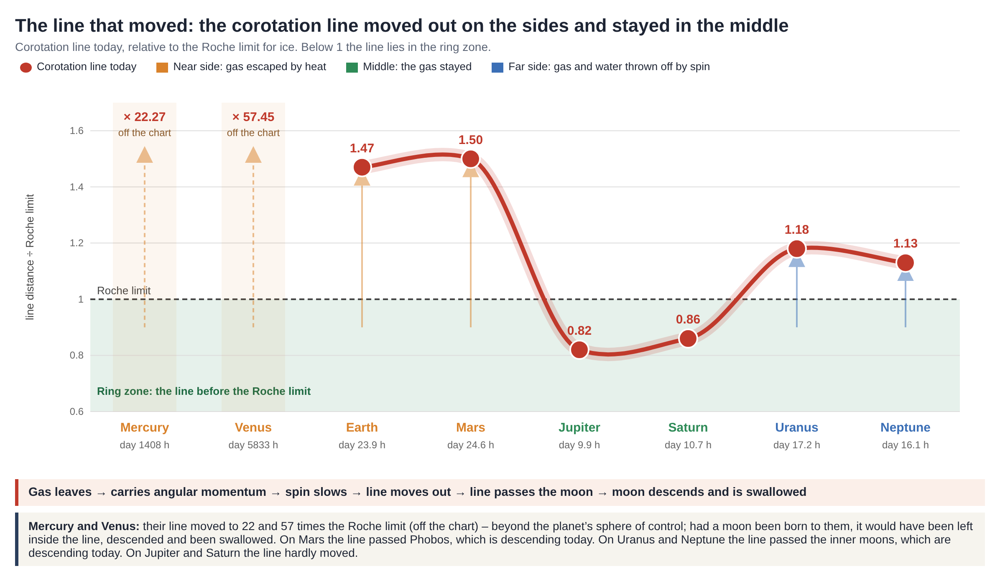
L.2Die Matrix des gemeinsamen Nenners
Die Untersuchungsmatrix (Abbildung L.2) kreuzt 13 Himmelskörper (Planeten und Zwergplaneten) mit neun physikalischen Kriterien des einheitlichen Mechanismus und fasst den Grad der empirischen Übereinstimmung des Modells mit der heutigen Wirklichkeit zusammen.
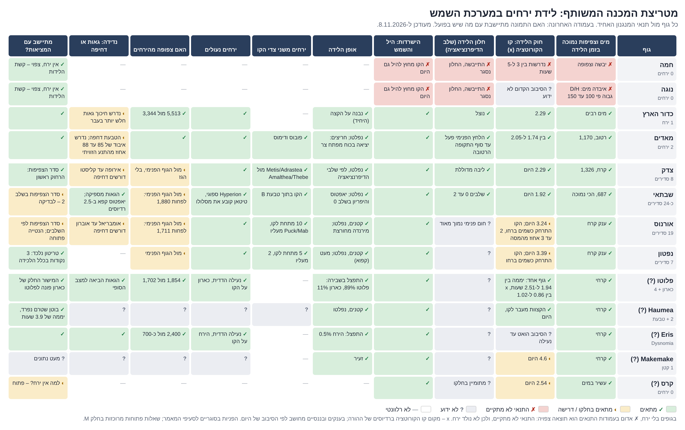
Kennzeichen der Systemmatrix:
• Status grün (vollständige Übereinstimmung): Die gemessenen Parameter des Körpers entsprechen genau den Vorhersagen des Mondgesetzes.
• Status gelb (teilweise Übereinstimmung / mechanische Anforderung): Der Körper fügt sich unter Erfüllung einer strengen dynamischen Anforderung in das Modell ein (etwa Drehimpulsverlust bei Mars und Uranus oder ein äußerer Schub der Monde bei Jupiter und Uranus), ohne physikalischen Widerspruch.
• Status rot (die Bedingung ist nicht erfüllt): wird bei mondlosen Körpern (Merkur, Venus) angewandt, bei denen das Fehlen des Kriteriums unmittelbar erklärt, warum keine Geburt stattfand, wie nach dem Bogen der Geburten zu erwarten.
• Status grau (unbekannter Parameter): fehlende Daten, die noch nicht empirisch gemessen wurden (etwa die Dichte des Mondes Proteus beim Neptun).
Zusammenfassung der Matrixbefunde und der radialen Entwicklung
Die globale Analyse zeigt, dass der einheitliche Mechanismus im ganzen Sonnensystem gültig und durchgängig ist, ohne Körper, die den Grundgesetzen widersprechen. Die morphologische Vielfalt zwischen den Systemen spiegelt eine stetige Funktion des radialen Abstands von der Sonne wider, die den planetaren Bogen der Geburten (L.4) und die Aufteilung in die drei Geburtsarten bestimmt:
Innerer Rand: Aufbau (aufgebaut) → Mittlere Zone: Injektion (ausgeworfen) → Äußerer Rand: Teilung (gespalten)
1. Am inneren Rand (Merkur, Venus, Erde): Die hohe thermische Abfuhr bewirkt eine rasche Austrocknung des Materials des Mutterkörpers. Merkur und Venus schlossen das geologische Geburtsfenster, bevor die Rotationsbedingungen erreicht waren. Die Erde liegt an der Stelle, an der die Dauer des Geburtsfensters den einzigartigen, langandauernden Aufbau des Mondes an der Spitze einer Birne erlaubte, was seine hohe Masse (1.2%) und seinen trockenen Inhalt bestimmt.
2. In der mittleren Zone (Mars bis Neptun): Die Körper sind massereich und wasserreich, und die hydrodynamische Pumpe warf in aufeinanderfolgenden Differentiationsstadien verhältnismäßig winzige Monde aus (0.01%–0.02% bei den Riesen), viele davon wasserreich. Die Dicke des atmosphärischen Deckels (bestimmt durch die Verfügbarkeit von Gas in der protoplanetaren Scheibe) legte die Rate des Wasserverlusts fest; bei Jupiter und Saturn schloss der dicke Deckel das Wasser ein und hielt die Korotationslinie nahezu unbewegt, während bei Uranus und Neptun der dünne Deckel ein freies Entweichen des Wassers erlaubte, das die Planeten verlangsamte und die Linie nach außen verschob.
3. Am äußeren Rand (Pluto): Der Körper ist klein und kalt und rotierte damals mit hoher Geschwindigkeit. Die innere Differentiation beschleunigte ihn über die Schwelle hinaus und führte zur Spaltung der zweilappigen Struktur (Erdnussmechanismus) an ihrem Hals; Haumea hat sich noch nicht gespalten, wobei sich der dichte Kern im großen Lappen konzentriert (Pluto, Triton).
Die abschließende Bestätigungsspalte der Matrix des gemeinsamen Nenners zeigt eine vollständige Vereinbarkeit des geophysikalischen Bildes mit der astronomischen Wirklichkeit. Die Stellen, an denen eine quantitative Ergänzung oder eine genaue empirische Messung erforderlich ist, sind nun herausgelöst und im Kapitel der offenen Fragen zusammengefasst (Teil M).
L.3Wer geprüft wird: die Regel für eingefangene Monde
Um eine methodische Verzerrung zu vermeiden, bei der jeder Himmelskörper, der nicht zu den Vorhersagen des Modells passt, willkürlich als eingefangen eingestuft würde, wurde im Voraus ein strenges quantitatives Einstufungsprotokoll festgelegt. Ein Mond, der nach dem einheitlichen Mechanismus auf der Korotationslinie entstand, muss sich im Drehsinn der axialen Rotation des Mutterkörpers, in dessen geometrischer Äquatorebene, auf einer Bahn mit einer Exzentrizität nahe null (nahezu kreisförmig) bewegen und aus dem Ausgangsmaterial des Mutterkörpers bestehen.
Von diesen vier Kriterien können sich drei (Exzentrizität, Abstand und Zusammensetzung) auch bei einem ursprünglichen Mond durch komplexe dynamische Wechselwirkungen sekundär ändern (Bahnstreckung durch einen Nachbarn, radialer Schub durch einen Ring oder Auswurf in verschiedenen Differentiationsstadien). Das vierte Merkmal hingegen – eine rückläufige Bahn (Retrograde) – kann sich bei einem ursprünglichen Mond in keiner mechanischen Konfiguration entwickeln, da ein Mutterkörper keine Masse entgegen dem Vektor seiner Eigenrotation auswirft; daher erhält es ein doppeltes quantitatives Gewicht.
Das festgelegte Punkteprotokoll:
• Rückläufige Bahn (Bahnneigung gegen die effektive Laplace-Ebene) = 2 Punkte.
• Hohe Bahnneigung im regulären Drehsinn = 1 Punkt.
• Hohe Exzentrizität (Elliptizität) = 1 Punkt.
• Extremer radialer Abstand, der vom Geburtsbereich aus durch keinen bekannten mechanischen Schub erreichbar ist = 1 Punkt.
• Abweichende chemische Zusammensetzung des gesamten Körpers (ausgenommen sekundäre Akkretion eines Oberflächenüberzugs) = 1 Punkt.
Trennkriterium: Ein Körper mit 3 Punkten oder mehr wird als eingefangen eingestuft.
Methodischer Hinweis: Die Bahnneigung wird gegenüber der Bezugsfläche der Laplace-Ebene (Laplace plane) gemessen und nicht gegenüber der planetaren Äquatorebene, da auf fernen Bahnen das Schwerefeld der Sonne die Bahnstabilität auf eine sekundäre Bezugsebene verlagert. Der Erdmond etwa ist um gegen die Äquatorebene der Erde geneigt, zeigt aber nur eine Neigung von gegen die Laplace-Ebene.
Tabelle der Anwendung des quantitativen Einstufungsprotokolls auf die Monde
| Himmelskörper | Umlaufrichtung (2) | Exzentrizität (1) | Bahnabstand (1) | Chemische Zusammensetzung (1) | Punktsumme | Geodynamische Schlussfolgerung |
|---|---|---|---|---|---|---|
| Unser Mond | 0 | 0 | 0 | 0 | 0 | ursprünglich (geboren) |
| Iapetus | 0 | 0 | 0 (erfuhr Schub) | 0 (dunkle Seite = Staub) | 0 | ursprünglich (geboren) |
| Triton | 2 | 0 | 0 | 1 | 3 | aus dem Kuipergürtel eingefangen |
| Phoebe | 2 | 0 | 1 | 1 | 4 | eingefangen |
| Sycorax | 2 | 1 | 1 | 1 | 5 | eingefangen |
| Nereid | 0 | 1 | 1 | 0 | 2 | nicht eingefangen; zur Prüfung vorgesehen |
| Himalia | 0 | 0 | 1 | 1 | 2 | nicht eingefangen; zur Prüfung vorgesehen |
Die Signatur der rückläufigen Bahn ist das sauberste empirische Merkmal. Gravitativ eingefangene Körper dringen aus jeder möglichen Richtung in das System ein; in großen Abständen vom Mutterkörper jedoch räumt das Störmoment der Sonne Monde im regulären Drehsinn ab und zerlegt sie, während Monde auf rückläufigen Bahnen bis zu etwa 70% des Hill-Radius dynamisch stabil bleiben (gegenüber nur 50% bei einer regulären Bahn) [Hamilton & Burns 1991]. Diese mechanische Konfiguration erklärt, weshalb die meisten äußeren Monde der Riesen rückläufig sind. Körper mit 2 Punkten in der Matrix (etwa Nereid und Himalia) werden nicht als eingefangen erklärt, sondern verbleiben im Prüfprotokoll des Systems ihres Wirtsplaneten.
L.4Der Bogen der Geburten
Die Entstehung eines Mondes hängt vom gleichzeitigen Vorliegen von vier physikalischen Bedingungen im Mutterkörper ab: aktive Differentiation, ein gerichtetes Zeitfenster, eine offene (nicht versiegelte) Kruste und eine niedrigviskose Schicht unter der Oberfläche. Der radiale Abstand von der Sonne bestimmt die Dauer, während der diese vier Bedingungen gleichzeitig erfüllt sind, und erzeugt eine Verteilungsfunktion mit bogenförmiger Gestalt.
• Die innere thermische Zone (Merkur, Venus): Die hohe thermische Abfuhr bewirkt eine rasche Austrocknung der äußeren Hülle, einen extremen Anstieg der Viskosität und eine frühe Versiegelung der Kruste, bevor die erforderlichen Schwellen der axialen Rotation erreicht sind. Merkur und Venus sind als direkte Folge davon mondlos. In der Gegenwart reicht die Korotationslinie beider Körper über die wirksame Grenze ihres Hill-Radius hinaus (Venus: gegenüber einem Hill-Radius von ; Merkur: gegenüber einem Hill-Radius von infolge einer Rotationsperiode von 58.6 Tagen), eine Konfiguration, die Bahnstabilität vollständig verhindert. Die Erde brachte beinahe keinen Mond hervor: Sie war gerade weit genug von der Sonne entfernt, um die langandauernde Aufbauphase des Mondes an der Spitze der Birne zu ermöglichen, ohne die das Material keine eigenständige Orbitalgeschwindigkeit erreicht hätte und an den Mutterkörper gebunden geblieben wäre.
• Die Zone des Pumpenhöhepunkts (Mars bis Saturn): Mit wachsendem Akkretionsabstand von der Sonne behalten die Himmelskörper eine niedrige mittlere Dichte und einen hohen Wassergehalt, die einen fortgesetzten Massenauswurf ermöglichen. Die Rate des Auswurfs regulärer Monde und ihre relative Masse steigen allmählich an, bis zum strukturellen Maximum im Saturnsystem.
• Die äußere eisige Zone (jenseits des Saturn): Die niedrigen Temperaturen bewirken ein rasches Gefrieren der äußeren Schichten. Eine starre, gefrorene Kruste versperrt mechanisch die geologischen Auswurföffnungen und verringert die Wirksamkeit der hydrodynamischen Pumpe. Uranus zeigte eine Abnahme der Auswurfrate, und Neptun warf nur ein winziges System aus. Pluto erfuhr in einer urzeitlichen Periode, als sein Kern heiß und weich war, eine vollständige hydrodynamische Spaltung; in der Gegenwart ist der Körper gefroren und vollständig statisch.
Um eine saubere Analyse zu gewährleisten, zählen die Tabelle und das vektorielle Modell (Abbildung L.3) nur reguläre Monde und lassen eingefangene Körper nach den Kriterien von L.3 vollständig weg (einschließlich Triton und Nereid). In der globalen Gesamtzählung (einschließlich eingefangener Monde) bleibt der Höhepunkt beim Saturnsystem (Jupiter: etwa 97, Saturn: 274 und mehr, Uranus: 29, Neptun: 16), doch der Großteil des Bestands in diesen Katalogen stellt sekundären Einfang dar und hat mit dem planetaren Geburtsmechanismus nichts zu tun.
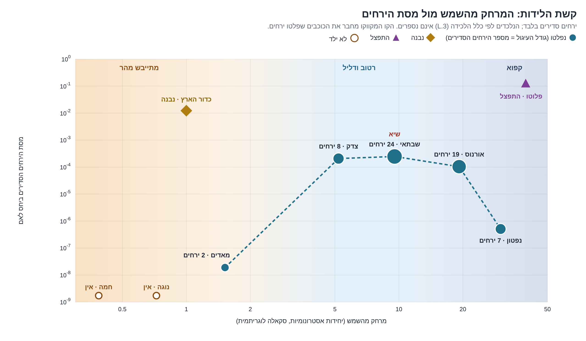
Parameter des Bogens der Geburten im System (nur reguläre Monde)
| Mutterkörper | Abstand von der Sonne () | Thermodynamischer Zustand in der Geburtsphase | Mechanische Geburtsart | Bestand regulärer Monde | Gesamtmassenanteil der Monde () |
|---|---|---|---|---|---|
| Merkur | 0.39 | Rasche thermische Austrocknung | — | 0 | 0 |
| Venus | 0.72 | Rasche thermische Austrocknung | — | 0 | 0 |
| Erde | 1.00 | Innere thermische Sperre; langandauernder Aufbau | aufgebaut | 1 | |
| Mars | 1.52 | Verhältnismäßig trocken; örtliche Aktivität der Ausbuchtung | ausgeworfen | 2 | |
| Jupiter | 5.20 | Wassergesättigt, niedrige mittlere Dichte | ausgeworfen | 8 | |
| Saturn | 9.50 | Optimaler Bereich (Höhepunkt der Pumpe) | ausgeworfen | etwa 24 | |
| Uranus | 19.20 | Beginn des morphologischen Gefrierens der Kruste | ausgeworfen | 19 | |
| Neptun | 30.10 | Starre gefrorene Kruste; Versperrung der Öffnungen | ausgeworfen | 7 | etwa |
| Pluto | 39.50 | Weicher urzeitlicher Kern unter gefrorener Hülle | gespalten | 5 |
Numerischer Hinweis: Die Mondmassen beruhen auf den Daten von Jacobson 2014 (Uranus) und Jacobson 2010 (Mars). Da für das System der inneren Neptunmonde keine direkten Massenmessungen vorliegen, werden ihre Werte durch Integration des Körpervolumens und einer angenommenen Dichte berechnet.
Geophysikalische Schlussfolgerung: Der Bogen der Geburten bestätigt die Abhängigkeit des Verdichtungsmechanismus vom radialen Abstand zur Sonne. In Sonnennähe wird der Prozess thermodynamisch durch Austrocknung verhindert; in extremen Abständen wird er mechanisch durch das Gefrieren der Kruste und die Versperrung der Pumpe geschwächt. Das Saturnsystem bildet die optimale Kurve und zeigt für den Auswurfmechanismus die Höchstwerte sowohl in der Zahl der Körper als auch in ihrem Gesamtmassenanteil gegenüber dem Mutterkörper.
PART MAusnahmen und offene Fragen
Die nachfolgend aufgeführten Themen bilden den Raum der offenen Probleme, die diese Arbeit für weitere Berechnung und Forschung hinterlässt. Jeder Abschnitt stellt eine mechanische oder geodynamische Frage dar, die sich aus der Anwendung des einheitlichen Mechanismus ergibt, und alle diese Fragen sind zusammen mit den Listen aus Teil N in Arbeit 13 (Forschungsthemen) zusammengefasst.
Analyse der offenen Fragen und strukturellen Probleme
| # | Geophysikalisches Thema | Bestimmung des Problems und der offenen wissenschaftlichen Frage |
|---|---|---|
| 1 | Anomalien der Dichtereihenfolge beim Uranus | Die Dichte der fünf großen Monde nimmt mit wachsendem Abstand von Uranus zu, ein Trend, der dem des Jupitersystems entgegengesetzt ist. Das Modell der Differentiationsstadien (A.9) schlägt vor, dass Titania und Oberon im Stadium 1 (Beginn) und Miranda im Stadium 2 (Höhepunkt der Pumpe) ausgeworfen wurden. Die offene Frage: Liefert dieser Mechanismus einen vollständigen Querschnitt und eine erschöpfende Erklärung der chemischen Vielfalt im System? |
| 2 | Ursprung der Achsneigung des Uranus | Der Mechanismus des Wasserverlusts wurde als Ursache einer vektoriellen Kippung verworfen (I.1). Dynamische Änderungen der Massenverteilung des Mutterkörpers – der Aufenthalt von Wasser und Monden auf fernen Bahnen in der Äquatorebene oder der Gezeitenabsturz eines massereichen urzeitlichen Mondes nach innen – bilden die mechanische Richtung, die zum Modell passt, und erfordern eine vektorielle Berechnung der Resonanzfenster. |
| 3 | Signaturen und Morphologie des Bruchs im System Pluto–Charon | Auf Charon stellt die Ebene Vulcan Planitia das innere Material dar, das im Moment des Zerreißens des Halses freigelegt wurde (K.1). Da Pluto nach der Spaltung weiter axial rotierte, wanderte sein Massenasymmetrievektor vor Erreichen der gegenseitigen Bindung: Ein Massendefizit wandert zum Rotationspol, und ein Massenüberschuss wird auf die Anziehungsachse des Charon verlagert (nahe oder ferne Seite). Die Frage: Liegt die Bruchnarbe des Pluto nahe dem geometrischen Pol, oder ist die Senke Sputnik Planitia (die fast gegenüber dem Charon zugewandten Punkt liegt) der aufgefüllte Bruchort? Zudem bleibt der strukturelle Ursprung der sekundären glatten Ebene mit einem Durchmesser von etwa 400 km auf der abgewandten Hemisphäre des Charon offen [Beyer et al. 2021]. |
| 4 | Morphologie der eingefrorenen Form des Mondes | Es ist quantitativ zu bestätigen, ob das Auftreffen zurückfallender Masse (sekundäre Akkretion) die Verdickung der Kruste auf der abgewandten Seite erklärt und ob die Dehnungsspannungen an der Spitze der Birne für die zweiseitige eiförmige Abplattungskomponente verantwortlich sind. Die entscheidende Prüfung: Trennung und Integration der beiden morphologischen Komponenten auf Grundlage der Daten der Gravimetriemission GRAIL und der topographischen Daten von LOLA. |
| 5 | Quantitative Rekonstruktion der von den Riesen verlorenen Masse | Berechnet (L.1, Tabelle L.1): Damit die Linie im Geburtsbereich steht, mussten nach der allmählichen Abschätzung 1,6%–7,3% der Masse von Uranus und Neptun durch die Linie entweichen, und bis zu etwa 11%, wenn alles von der Linie zur Zeit der Geburt entwich. Die offene Frage: das Verhältnis von Gas zu Wasser in der entwichenen Masse und der genaue Geburtsradius der Riesen. |
| 6 | Dichteanomalien im Saturnsystem | Die Dichtewerte der mittelgroßen Monde zeigen zufällige Schwankungen ohne monotone Abhängigkeit vom radialen Abstand. Die Frage: Erzwang die Dicke des atmosphärischen Deckels beim Saturn eine zeitweilige Pumpentätigkeit (pulsierende Speisung der Auswurföffnung) und verursachte damit eine zeitweilige Zufuhr und einen Wechsel zwischen Auswürfen trockenen und wassergesättigten Materials? |
| 7 | Mechanische Geburtsverhinderung bei Ceres | Ceres ist reich an Wasseranteilen, und ihre Korotationslinie (2.54R) liegt nahe dem Geburtsbereich, doch der Körper ist mondlos. Die Frage ist offen: Ergibt sich die Geburtsverhinderung aus der Dauer des Geburtsfensters, aus der begrenzten Größe des Körpers oder aus einem äußeren gravitativen Störmoment des Jupiter? |
| 8 | Dynamik der aktiven Geburt bei Haumea | Der Körper stellt eine Erdnussform dar, die noch keine Spaltung erfahren hat, und die Enden seiner langen Achse reichen über die Korotationslinie hinaus. Die Frage: Wirft der Körper in der Gegenwart von selbst Masse aus, und sind das Ringsystem, die Monde und die dynamische Familie Material, das von den Achsenden geschöpft wurde, und nicht das Ergebnis einer Riesenkollision? Es ist nach morphologischen Anzeichen einer Einschnürung (Hals) zu suchen. |
| 9 | Kriterien zur Unterscheidung zwischen Zwergplanet und entflohenem Mond | Festlegung absoluter geodynamischer Trenngrenzen zwischen einem Himmelskörper, der ein ursprünglicher Zwergplanet ist, und einem Körper, der ein urzeitlicher, von einem Wirtssystem abgelöster Mond ist. Das System Pluto–Charon beweist, dass sich ein Zwergpaar als Ergebnis eines einzigen vereinten Körpers entwickeln kann, der sich gespalten hat. |
| 10 | Mechanik der Bildung äquatorialer Rücken | Der massive topographische Rücken entlang des Äquators des Iapetus sowie die geometrischen Strukturen von Pan und Atlas: Sind diese Strukturen inneres Hüllenmaterial, das im Moment der mechanischen Trennung gedehnt wurde und erstarrte, ähnlich dem Modell der Spachtelrücken [Arbeit 9]? |
| 11 | Chronologie des Auswurfs der kleinen Plutomonde | Die Körper lösten sich vor der endgültigen Spaltungsphase vom Äquator der Erdnuss (K.1). Die dynamische Frage: Wurde ein Teil des Bestands als Ergebnis des mechanischen Bruchs der Kruste im Moment der Teilung des Halses ausgeworfen? Die heutigen empirischen Daten erlauben keine vektorielle Entscheidung. |
| 12 | Die Kopplung der Venus an die Erde | Der Venustag (243,02 Tage) liegt sehr nahe an der Periode, in der die Venus der Erde bei jeder größten Annäherung dieselbe Seite zeigt (243,16 Tage) [Gold & Soter 1969]. Die gängige Wissenschaft hält dies für einen Zufall, da die Gezeiten der Erde zu schwach sind. Die Frage: Hat die Erde die Rotation der Venus beeinflusst, nachdem deren Linie ihren Einflussbereich verlassen hatte? |
PART NForschungsliste für jeden Körper
Für jeden Himmelskörper ist ein spezifisches Protokoll von Messungen und Analysen festgelegt, das dazu bestimmt ist, die Gültigkeit des einheitlichen Mechanismus und der rekonstruierten Parameter empirisch zu prüfen.
Katalog der Forschungsziele und geophysikalischen Messungen
• Merkur:
• Vollständiger empirischer Ausschluss morphologischer Anzeichen einer Ausbuchtung oder Birne an der Oberfläche, als endgültige Bestätigung, dass sich das Geburtsfenster nicht öffnete.
• Vektorielle Rekonstruktion des anfänglichen axialen Rotationsmoments vor der Phase der Gezeitenbindung an die Sonne.
• Venus:
• Tiefgehende topographische Analyse des Hochlands Aphrodite Terra zum Ausschluss geodynamischer Reste einer urzeitlichen Ausbuchtung.
• Modellierung der Geschichte der axialen Rotation und der Entwicklung der dichten Atmosphäre.
• Erde:
• Mathematische Trennung der asymmetrischen (einseitigen) Komponente der Krustenverdickung von der symmetrischen (zweiseitigen) eiförmigen Abplattungskomponente in den Daten zur Morphologie des Mondes.
• Rekonstruktion der Geschichte des mittleren Dissipationsfaktors der Gezeitenreibung (k₂/Q) über die geologischen Zeitalter.
• Mars:
• Quantitative Berechnung des Drehimpulses und der Masse, die durch die Wasseranteile und den urzeitlichen Ring aus dem System abgeführt wurden.
• Messung des inneren Aufbaus von Phobos und Deimos zur Bestimmung des genauen Porositätswerts (Macro-porosity), als Bestätigung des Auswurfs im Stadium 2 (Höhepunkt der Pumpe).
• Modellierung des Überlebens des Phobos bei zeitlich veränderlichem Reibungsfaktor.
• Jupiter:
• Anwendung des vollständigen Protokolls auf den Mond Himalia und seine dynamische Gruppe (die 2 Punkte nach der Einfangregel L.3 hat).
• Abgleich der Dichte des inneren Körpers (ohne Gashülle) mit der Dichte des Mondsystems.
• Bestimmung des inneren Differentiationsgrads jedes Galileischen Mondes als Indikator für das Stadium der Pumpentätigkeit im Mutterkörper im Moment seiner Geburt.
• Modellierung des dynamischen Mechanismus, der den Schub nach außen für Europa, Ganymed und Kallisto lieferte.
• Bestätigung der Chronologie der Geburtsfolge durch Kraterdatierung und Bestimmung des Oberflächenalters der Monde.
• Saturn:
• Gleichzeitige Messung der Rate des Wasserabflusses von der Pumpe in die Ringe und der Massenabfuhrrate des Ringregens, zur Bestätigung des Modells des fortwährenden Stroms.
• Suche nach und Kartierung von eingefrorenen Formen (Fossil bulges) bei den mittelgroßen Monden, zur Rekonstruktion des Radius ihres ursprünglichen Geburtsortes.
• Quantitative Lösung der Anomalien der Dichtereihenfolge bei den mittelgroßen Monden.
• Uranus:
• Umgekehrte Drehimpulsbilanz (Prüfung 3) zur Bestimmung der gesamten Wassermasse, die über die Korotationslinie entwich.
• Gravimetrische Analyse zum Vergleich des Differentiationsgrads von Titania und Oberon mit der porösen Miranda.
• Mathematische Berechnung, die das Moment der Massenverteilung aus Geburten und Wasserverlust mit den Phasen der Präzession und der Achsneigung auf 98° abgleicht.
• Neptun:
• Komplexe dynamische Analyse des Mondes Nereid (der 2 Punkte nach der Einfangregel hat): Bestimmung, ob seine extreme Exzentrizität mechanisch mit einer ursprünglichen Geburt aus Neptun und einer Störung nach der Geburt vereinbar ist.
• Berechnung der Wassermasse, die infolge des dünnen atmosphärischen Deckels über die Linie entwich.
• Direkte empirische Messung der Dichte des Mondes Proteus (Vorhersage des Modells: ungewöhnlich niedrige Dichte infolge struktureller Porosität).
• Rekonstruktion der Architektur des ursprünglichen regulären Mondsystems vor dem Einfang des Triton.
• Pluto:
• Gravimetrische und topographische Kartierung des Pluto zur Bestimmung der Lage der geodynamischen Bruchnarbe (am Rotationspol oder auf der Kopplungsachse zu Charon).
• Hochauflösende Aufnahme der Charon zugewandten Hemisphäre des Pluto (ein Gebiet, das während der Mission New Horizons nur mit geringer Auflösung aufgenommen wurde).
• Tektonische Analyse der glatten Ebene auf der abgewandten Hemisphäre des Charon.
• Messung des Trägheitsmoments des Charon (Vorhersage des Modells: nur teilweise innere Differentiation).
• Haumea:
• Beobachtende Überwachung zum Nachweis eines Auswurfs von Material oder Staub an den Enden der langen geometrischen Achse.
• Modellierung der dynamischen Kopplung zwischen Ringsystem, Monden und Bahnfamilie.
• Suche nach morphologischen Signaturen einer Halseinschnürung entlang der Hauptachse.
• Eris und Makemake:
• Genaue empirische Messung der Dichte der Monde (Dysnomia und des Begleitmondes von Makemake).
• Rekonstruktion der Geschichte der Rotationsentwicklung der Systeme.
• Ceres:
• Herauslösung des mechanischen Parameters, der die Geburt verhinderte (Überschreitung der Fensterdauer, geringe Massenabmessungen oder ein Störmoment des Jupiter).
CODEVerfügbarkeit von Daten und Code
Alle in dieser Arbeit dargestellten physikalischen, geodynamischen und bahndynamischen Berechnungen – einschließlich der Lagen der dynamischen Korotationslinien, der Werte der Tageslängen bei der Geburt, der Rekonstruktionen des Drehimpulses, der Integrationen der Gezeitenwanderung und der Hill-Radien – wurden mit einem kompakten, auf Grundformeln beruhenden Python-Skript auf Grundlage der in den wissenschaftlichen Quellen angegebenen empirischen Daten durchgeführt. Die Berechnungen sind mathematisch vollständig reproduzierbar, und das vollständige Skript wird zusammen mit den Datenmatrizen strukturiert dem Hauptcodepaket der Arbeitsreihe beigefügt:
• Archiv: Zenodo
• Digitale Kennung (DOI): doi:10.5281/zenodo.22743615
REFERENCESQuellen
Agnor, C. B., & Hamilton, D. P. (2006). Neptune's capture of its moon Triton in a binary–planet gravitational encounter. Nature, 441, 192–194.
Alemi, A., & Stevenson, D. (2006). Why Venus has no moon. Bulletin of the American Astronomical Society, 38, 491.
Anderson, J. D., Jacobson, R. A., McElrath, T. P., et al. (2001). Shape, mean radius, gravity field, and interior structure of Callisto. Icarus, 153, 157–161.
Anderson, J. D., Schubert, G., Jacobson, R. A., et al. (1998). Europa's differentiated internal structure: inferences from four Galileo encounters. Science, 281, 2019–2022.
Anderson, J. D., Sjogren, W. L., & Schubert, G. (1996). Galileo gravity results and the internal structure of Io. Science, 272, 709–712.
Andert, T. P., Rosenblatt, P., Pätzold, M., et al. (2010). Precise mass determination and the nature of Phobos. Geophysical Research Letters, 37, L09202.
Beyer, R. A., Nimmo, F., McKinnon, W. B., et al. (2017). Charon tectonics. Icarus, 287, 161–174.
Beyer, R. A., Robbins, S. J., Beddingfield, C., et al. (2021). Charon's far side geomorphology. The Planetary Science Journal, 2, 141.
Bills, B. G., & Ray, R. D. (1999). Lunar orbital evolution: a synthesis of recent results. Geophysical Research Letters, 26, 3045–3048.
Black, B. A., & Mittal, T. (2015). The demise of Phobos and development of a Martian ring system. Nature Geoscience, 8, 913–917.
Boué, G., & Laskar, J. (2010). A collisionless scenario for Uranus tilting. The Astrophysical Journal Letters, 712, L44–L47.
Brown, M. E., & Butler, B. J. (2023). Masses and densities of dwarf planet satellites measured with ALMA. The Planetary Science Journal, 4, 193.
Brown, M. E., Barkume, K. M., Ragozzine, D., & Schaller, E. L. (2007). A collisional family of icy objects in the Kuiper belt. Nature, 446, 294–296.
Brozović, M., Showalter, M. R., Jacobson, R. A., & Buie, M. W. (2015). The orbits and masses of satellites of Pluto. Icarus, 246, 317–329.
Burns, J. A. (1973). Where are the satellites of the inner planets? Nature Physical Science, 242, 23–25.
Castillo-Rogez, J. C., Matson, D. L., Sotin, C., et al. (2007). Iapetus' geophysics: rotation rate, shape, and equatorial ridge. Icarus, 190, 179–202.
Chandrasekhar, S. (1969). Ellipsoidal Figures of Equilibrium. Yale University Press.
Cheng, W. H., Lee, M. H., & Peale, S. J. (2014). Complete tidal evolution of Pluto–Charon. Icarus, 233, 242–258.
Correia, A. C. M., & Laskar, J. (2001). The four final rotation states of Venus. Nature, 411, 767–770.
Cruikshank, D. P., Dalton, J. B., Dalle Ore, C. M., et al. (2007). Surface composition of Hyperion. Nature, 448, 54–56.
Dauphas, N., & Pourmand, A. (2011). Hf–W–Th evidence for rapid growth of Mars and its status as a planetary embryo. Nature, 473, 489–492.
Donahue, T. M., Hoffman, J. H., Hodges, R. R., & Watson, A. J. (1982). Venus was wet: a measurement of the ratio of deuterium to hydrogen. Science, 216, 630–633.
Fortney, J. J., Marley, M. S., & Barnes, J. W. (2007). Planetary radii across five orders of magnitude in mass and stellar insolation: application to transits. The Astrophysical Journal, 659, 1661–1672.
Garrick-Bethell, I., Wisdom, J., & Zuber, M. T. (2006). Evidence for a past high-eccentricity lunar orbit. Science, 313, 652–655.
Gold, T., & Soter, S. (1969). Atmospheric tides and the resonant rotation of Venus. Icarus, 11, 356–366.
Goldreich, P., Murray, N., Longaretti, P. Y., & Banfield, D. (1989). Neptune's story. Science, 245, 500–504.
Haisch, K. E., Lada, E. A., & Lada, C. J. (2001). Disk frequencies and lifetimes in young clusters. The Astrophysical Journal, 553, L153–L156.
Hamilton, D. P., & Burns, J. A. (1991). Orbital stability zones about asteroids. Icarus, 92, 118–131.
Iess, L., Militzer, B., Kaspi, Y., et al. (2019). Measurement and implications of Saturn's gravity field and ring mass. Science, 364, eaat2965.
Iess, L., Rappaport, N. J., Jacobson, R. A., et al. (2010). Gravity field, shape, and moment of inertia of Titan. Science, 327, 1367–1369.
Jacobson, R. A. (2010). The orbits and masses of the Martian satellites and the libration of Phobos. The Astronomical Journal, 139, 668–679.
Jacobson, R. A. (2014). The orbits of the Uranian satellites and rings, the gravity field of the Uranian system, and the orientation of the pole of Uranus. The Astronomical Journal, 148, 76.
JPL Solar System Dynamics (2024). Planetary satellite physical and mean orbital parameters. https://ssd.jpl.nasa.gov
Kivelson, M. G., Khurana, K. K., Russell, C. T., et al. (1996). Discovery of Ganymede's magnetic field by the Galileo spacecraft. Nature, 384, 537–541.
Kruijer, T. S., Burkhardt, C., Budde, G., & Kleine, T. (2017). Age of Jupiter inferred from the distinct genetics and formation times of meteorites. PNAS, 114, 6712–6716.
Lainey, V., Arlot, J.-E., Karatekin, Ö., & Van Hoolst, T. (2009). Strong tidal dissipation in Io and Jupiter from astrometric observations. Nature, 459, 957–959.
Lainey, V., Casajus, L. G., Fuller, J., et al. (2020). Resonance locking in giant planets indicated by the rapid orbital expansion of Titan. Nature Astronomy, 4, 1053–1058.
Lainey, V., Jacobson, R. A., Tajeddine, R., et al. (2017). New constraints on Saturn's interior from Cassini astrometric data. Icarus, 281, 286–296.
Lawrence, D. J., Feldman, W. C., Goldsten, J. O., et al. (2013). Evidence for water ice near Mercury's north pole from MESSENGER Neutron Spectrometer measurements. Science, 339, 292–296.
Li, C., Ingersoll, A., Bolton, S., et al. (2020). The water abundance in Jupiter's equatorial zone. Nature Astronomy, 4, 609–616.
Mankovich, C., Marley, M. S., Fortney, J. J., & Movshovitz, N. (2019). Cassini ring seismology as a probe of Saturn's interior. I. Rigid rotation. The Astrophysical Journal, 871, 1.
Margot, J.-L., Campbell, D. B., Giorgini, J. D., et al. (2021). Spin state and moment of inertia of Venus. Nature Astronomy, 5, 676–683.
Morbidelli, A., Tsiganis, K., Batygin, K., Crida, A., & Gomes, R. (2012). Explaining why the uranian satellites have equatorial prograde orbits despite the large planetary obliquity. Icarus, 219, 737–740.
Murray, J. B., & Heggie, D. C. (2014). Character and origin of Phobos' grooves. Planetary and Space Science, 102, 119–143.
O'Donoghue, J., Moore, L., Connerney, J., et al. (2019). Observations of the chemical and thermal response of 'ring rain' on Saturn's ionosphere. Icarus, 322, 251–260.
Ortiz, J. L., Santos-Sanz, P., Sicardy, B., et al. (2017). The size, shape, density and ring of the dwarf planet Haumea from a stellar occultation. Nature, 550, 219–223.
Owen, T., Danielson, G. E., Cook, A. F., et al. (1979). Jupiter's rings. Nature, 281, 442–446.
Pappalardo, R. T., Reynolds, S. J., & Greeley, R. (1997). Extensional tilt blocks on Miranda: evidence for an upwelling origin of Arden Corona. Journal of Geophysical Research, 102, 13369–13379.
Parker, A. H., Buie, M. W., Grundy, W. M., & Noll, K. S. (2016). Discovery of a Makemakean moon. The Astrophysical Journal Letters, 825, L9.
Park, R. S., Konopliv, A. S., Bills, B. G., et al. (2016). A partially differentiated interior for (1) Ceres deduced from its gravity field and shape. Nature, 537, 515–517.
Pearl, J. C., Conrath, B. J., Hanel, R. A., et al. (1990). The albedo, effective temperature, and energy balance of Uranus, as determined from Voyager IRIS data. Icarus, 84, 12–28.
Peplowski, P. N., Evans, L. G., Hauck, S. A., et al. (2011). Radioactive elements on Mercury's surface from MESSENGER: implications for the planet's formation and evolution. Science, 333, 1850–1852.
Pollack, J. B., Hubickyj, O., Bodenheimer, P., et al. (1996). Formation of the giant planets by concurrent accretion of solids and gas. Icarus, 124, 62–85.
Porco, C. C., Thomas, P. C., Weiss, J. W., & Richardson, D. C. (2007). Saturn's small inner satellites: clues to their origins. Science, 318, 1602–1607.
Rabinowitz, D. L., Barkume, K., Brown, M. E., et al. (2006). Photometric observations constraining the size, shape, and albedo of 2003 EL61, a rapidly rotating, Pluto-sized object in the Kuiper belt. The Astrophysical Journal, 639, 1238–1251.
Rogoszinski, Z., & Hamilton, D. P. (2020). Tilting ice giants with a spin–orbit resonance. The Astrophysical Journal, 888, 60.
Saillenfest, M., Rogoszinski, Z., Lari, G., Baillié, K., Boué, G., Crida, A., & Lainey, V. (2022). Tilting Uranus via the migration of an ancient satellite. Astronomy & Astrophysics, 668, A108.
Showalter, M. R., & Hamilton, D. P. (2015). Resonant interactions and chaotic rotation of Pluto's small moons. Nature, 522, 45–49.
Showalter, M. R., de Pater, I., Lissauer, J. J., & French, R. S. (2019). The seventh inner moon of Neptune. Nature, 566, 350–353.
Smith, B. A., Soderblom, L. A., Banfield, D., et al. (1989). Voyager 2 at Neptune: imaging science results. Science, 246, 1422–1449.
Stern, S. A., Bagenal, F., Ennico, K., et al. (2015). The Pluto system: initial results from its exploration by New Horizons. Science, 350, aad1815.
Stern, S. A., Weaver, H. A., Spencer, J. R., et al. (2019). Initial results from the New Horizons exploration of 2014 MU69, a small Kuiper Belt object. Science, 364, eaaw9771.
Szakáts, R., Kiss, Cs., Ortiz, J. L., et al. (2023). Tidally locked rotation of the dwarf planet (136199) Eris discovered via long-term ground-based and space photometry. Astronomy & Astrophysics, 669, L3.
Thomas, P. C., Armstrong, J. W., Asmar, S. W., et al. (2007). Hyperion's sponge-like appearance. Nature, 448, 50–53.
Verbiscer, A. J., Skrutskie, M. F., & Hamilton, D. P. (2009). Saturn's largest ring. Nature, 461, 1098–1100.
Wahl, S. M., Hubbard, W. B., Militzer, B., et al. (2017). Comparing Jupiter interior structure models to Juno gravity measurements and the role of a dilute core. Geophysical Research Letters, 44, 4649–4659.
Waite, J. H., Perryman, R. S., Perry, M. E., et al. (2018). Chemical interactions between Saturn's atmosphere and its rings. Science, 362, eaat2382.
Ward, W. R., & Hamilton, D. P. (2004). Tilting Saturn. I. Analytic model. The Astronomical Journal, 128, 2501–2509.
Ward, W. R., & Canup, R. M. (2006). Forced resonant migration of Pluto's outer satellites by Charon. Science, 313, 1107–1109.
Ward, W. R., & Reid, M. J. (1973). Solar tidal friction and satellite loss. Monthly Notices of the Royal Astronomical Society, 164, 21–32.
Weaver, H. A., Buie, M. W., Buratti, B. J., et al. (2016). The small satellites of Pluto as observed by New Horizons. Science, 351, aae0030.
Williams, D. R. (2024). Planetary fact sheets. NASA Goddard Space Flight Center. https://nssdc.gsfc.nasa.gov/planetary/factsheet/
Wisdom, J., Dbouk, R., Militzer, B., et al. (2022). Loss of a satellite could explain Saturn's obliquity and young rings. Science, 377, 1285–1289.
Wisdom, J., Peale, S. J., & Mignard, F. (1984). The chaotic rotation of Hyperion. Icarus, 58, 137–152.
Young, E. D., Kohl, I. E., Warren, P. H., et al. (2016). Oxygen isotopic evidence for vigorous mixing during the Moon-forming giant impact. Science, 351, 493–496.
Zahnle, K., Schenk, P., Levison, H., & Dones, L. (2003). Cratering rates in the outer Solar System. Icarus, 163, 263–289.
Duran, Z. (2026). The LEF Model series, Papers 1–13. Zenodo. doi:10.5281/zenodo.22743615 and lef-model.com.
DECLARATIONSErklärungen
Einsatz künstlicher Intelligenz. Der Autor nutzte Claude (Anthropic) für Berechnungen, für die Zusammenstellung der Daten aus den Quellen, für die Erstellung der Abbildungen und für die Formulierung. Die Ideen und Aussagen des Modells stammen vom Autor; Erkenntnisse, die sich aus den Berechnungen ergaben, sind im Arbeitsprotokoll der Arbeit als solche gekennzeichnet. Alle Daten wurden anhand der zitierten Quellen geprüft.
Finanzierung und Interessenkonflikte. Die Forschung erfolgte ohne externe Finanzierung. Der Autor hat keine Interessenkonflikte.